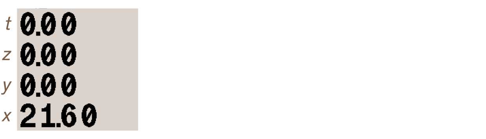
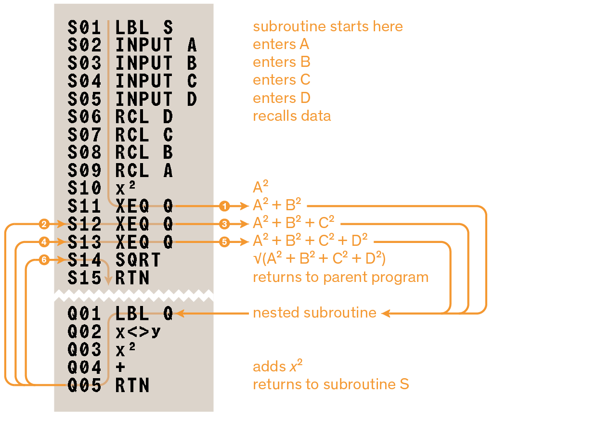
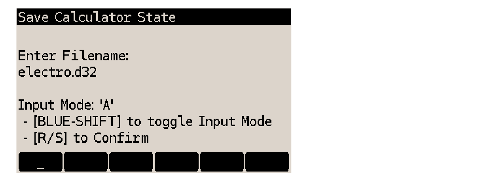
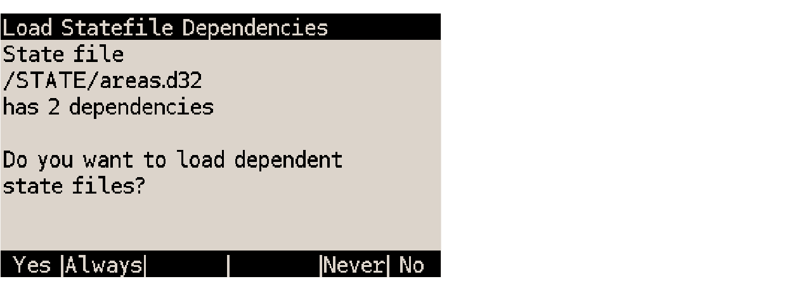

DM32 User Manual
SwissMicros GmbH Copyright © 2016 – 2024 • v3.55b • 2024-08-18 • FW v2.09
1. About this User Manual
This document is work-in-progress.
For new users, it includes a brief introduction to Reverse Polish Notation.
Text is formatted after the following conventions:
XEQ |
calculator keys are referenced as a black rectangle with text as printed on their top |
GTO / EQN |
shifted function calls are depicted by their color label as it appears on the calculator bezel; in an attempt to reduce visual noise, the preceding shift-key press is omitted |
letter keys (printed in white on the keypad bezel) are represented between square brackets; |
|
2 ENTER 3 + |
step-by-step examples show key presses; numbers entered are set in plain text |
CLVARS |
sometimes functions are shown just by name |
INVALID (i) |
on a grey background are shown messages, annunciators, program lines or other elements as they appear on the LCD |
|
paths, filenames, program listings and expressions are shown in monospace fonts |
|
when necessary, the blue shift-key, also known as right-shift or RS, is referenced by a blue rectangle |
|
when necessary, the orange shift-key, also known as left-shift or LS, is referenced by an orange rectangle |
The legacy HP-32SII manual is available at https://literature.hpcalc.org/community/hp32sii-om-en.pdf
Be aware that, although similar, the DM32 and the HP-32SII have several significant differences. See [Behavior differences with legacy HP-32SII].
| Example programs and equations in sections Mathematics programs, Statistics program and Miscellaneous programs and equations, and many more not included in this manual, have ready-to-use corresponding Statefiles available from the DM32 Examples page at https://technical.swissmicros.com/dm32/examples. |
2. General information
2.1. Turning the calculator on and off
Turn the calculator on by pressing C.
To turn it off, press OFF (that is, C). If left sitting idle, the calculator will automatically turn off after 10 minutes.
| The DM32 retains its state when turned off. This means that it turns on in the same mode, or menu, or data entry situation it was in when turned off. |
2.2. Overview of display
The calculator screen is divided in 3 areas arranged as in the illustration below.

| The screen configuration is somewhat different when in DM32 Setup. |
2.2.1. Operating system status bar
While in Calculator mode, the operating system (DMCP) black status bar has 3 sections:
-
date and time,
-
name of active State,
-
power source icon:
-
: the calculator is powered by the internal CR2032 3V battery and runs at 48MHz; the icon shows an approximation of the remaining capacity of the battery (to replace the battery, see chapter Battery),
-
: the calculator draws power from the USB port and runs at 160MHz.
-
| The battery capacity indicator may fluctuate slightly due to factors such as cell chemistry, temperature, shelf life, and variations in manufacturing quality. Always use new and reputable brands of batteries. |
2.2.2. Annunciators
These two rows consist of icons, or annunciators, which turn on or off to reflect various calculator states or to make the user aware of a certain condition.
-
Accuracy indicators when fraction display is active. Also turn on when arrow keys ▲ and ▼ are available to browse a catalog.
-
Either left- or right-shift annunciator turns on to indicate that either orange- or blue-shift key, respectively, was last pressed. Next key press executes the corresponding shifted function of the pressed key.
-
Turns on when the calculator is in Program mode.
-
Turns on when the calculator is in Equation list or other equation mode.
-
These four annunciators reflect the status of user flags 0 to 3. When on, the corresponding flag is set. Useful for visual feedback, e.g. when conditional flags are used in programs.
-
Current angular mode. When off, the calculator displays angles in degrees. Letters GRAD or RAD turn on to indicate that the calculator is in gradians or radians mode, respectively.
-
Current base. When off, the calculator is in decimal (base-10) mode. The corresponding annunciator turns on to indicate that the calculator is either in hexadecimal (base-16), octal (base-8) or binary (base-2) mode.
-
Left and right, long horizontal arrows indicate that the shown number is too long, and thus truncated because it overshoots the display to the left or right. Use SHOW to see the rest of a decimal number, or use scroll keys √x or Σ+ to see the rest of a binary number or equation.
-
Alpha entry is active: next key press enters a letter.
-
Attention! There is a special condition or an error. For a description of calculator messages, see Appendix C: Messages.
-
When these down-pointing arrow symbols 🠷 are on, top row keys become soft keys and execute the corresponding displayed function in menus.
2.2.3. Main display area
This is the main number-crunching area. It is made up of four 12-character lines, one for each level of the RPN stack. Each line also has an extra space on the left to display a minus sign for negative numbers.
2.2.4. Messages
The calculator responds to certain situations by displaying a message. The triangular warning annunciator turns on with every message.
-
Pressing C or ← cancels the message;
-
Pressing any other key cancels the message and executes the key’s function.
If the triangular warning annunciator appears alone to indicate that an inactive key has just been pressed (a key that has no meaning in the current situation, such as 3 in binary mode).
2.2.5. About DM32 modes
The DM32 can operate in 3 different modes. When this manual refers to one of the modes, the initial is capitalized as below.
-
Calculator mode is the main mode used to perform calculations. It expects digit input and calls to functions which take data from the stack to operate upon. In this mode, the display shows the 4 levels of the stack.
-
Program mode is used to review, write and modify programs. PRGM puts the calculator in Program mode, showing the contents of program memory. Annunciator PRGM turns on to indicate the mode is active. Pressing C or executing PRGM again exits Program mode and returns to Calculator mode.
-
Equation list is used to review, write and modify equations. EQN opens the Equation list. Annunciator EQN turns on to indicate the mode is active. Pressing C or executing EQN again closes the Equation list and returns to Calculator mode.
| The calculator also allows to write an equation in Program mode. |
2.2.6. Fonts
The calculator can use two fonts with variants, for a combined total of 5 font options. See section Stack Font from chapter DM32 Setup for a preview and details.
2.3. Overview of keypad
The keypad consists of a total 43 keys. There are 4 keypad areas, as described in the following table and illustration.
| area | keys | function |
|---|---|---|
top row |
6 |
soft-keys, or F-Keys |
main |
34 |
input and function keys; every key has 3 or 4 functions |
shift |
2 |
call secondary functions of the main area and C keys |
C |
1 |
ON/OFF/CANCEL/EXIT functions |
2.3.1. F-Keys
The row of blank keys at the top of the keypad, right under the LCD, are designated from left to right as F1 to F6.
| F-Key | function |
|---|---|
F1 |
open the Onboard help |
F2 |
|
F3 |
in Calculator mode: debug step-over (step-out when used with ) |
F4 |
|
F5 |
equivalent to up arrow ▲; debug step-back |
F6 |
equivalent to down arrow ▼; debug step-into |
When the calculator is displaying a file selection dialog, like in the File menu, the Available States list or the help file selection dialog:
-
F5 toggles file size display between bytes and kilobytes (when file is above 1023 bytes),
-
F6 toggles between 1- and 2-column file listing.
2.3.2. Main area and shift keys
In addition to entering numbers and executing functions as they are labeled in white, each of these keys has 2, sometimes 3 additional functions. They can switch the calculator to Equation or Programming mode, summon menus (from which further functions can be invoked), execute math operations or add program instructions, perform conversions, act as a letter input keypad, and more. The labels to these extra functions are printed on the bezel, around each key, in orange, blue and white.

The keypad has two color keys, and , just above the C key. To execute a function printed in orange or blue, press the corresponding color once before pressing the key. For example, number π can be entered by using key SIN. To do so, press and release the blue shift key and the blue shift annunciator appears at the top left corner of the display:
Press SIN and number π appears in the x-register:
The annunciator automatically disappears and the next key press is unshifted. To clear the annunciator if shift has been pressed by mistake, press the same shift key again. In this manual, shifted function calls are depicted by their color label as it appears on the calculator bezel (the shift key press is omitted), for instance π or ASIN.
Keying in a letter is done by pressing the corresponding key when appropriate, to store or recall variables, execute a program, or when writing an equation. In this manual letter-key presses are depicted by the letter between square brackets, for instance [A] or [F].
2.3.3. C key
Clear or Cancel key. When the calculator is off, pressing C turns the calculator on. When the calculator is on, it clears the x-register, exits menus and cancels input; orange-shifted, it opens DM32 Setup, controlling general calculator settings, OS and hardware functions; blue-shifted, it turns the calculator off.
Also useful to exit menus or cancel actions. DMCP, the calculator’s operating system, sometimes refers to this key as the “EXIT” key.
Note that the calculator retains the state it was in when turned off, i.e. it will turn on in the same state and mode it was turned off in.
2.3.4. Clearing keys
Depending on the situation and what needs to be achieved, the appropriate way to clear or backspace is different. There is also a CLEAR menu with functions usable as program instructions. See appendix Clearing functions for a complete reference.
2.4. Navigation keys summary
The DM32 frequently presents the user with lists or menus that can be navigated by moving a cursor or scrolling the display up and down. There are two general contexts where this happens: system and calculator operation. Each context uses its own set of keys for vertical motion.
| system (DMCP OS) | calculator operation | |
|---|---|---|
active navigation keys |
|
|
context |
|
|
2.5. Onboard help
The DM32 contains an onboard help document. It has a table of contents and contains many links which help navigate it. Here is how to use the onboard help:
| key | action |
|---|---|
F1 |
open help file |
2 / 8 or + / – |
next/previous line |
3 / 9 or × / ÷ |
next/previous page |
6 / 4 |
select next/previous link |
5 / ENTER |
follow link |
← |
jump to previously followed link |
7 |
back to top |
F1 or C |
close help file |
F3 |
open help file selection dialog |
When pressing F1, the DM32 looks for file \HELP\dm32help.html.
If no such file is present, a warning message appears with instructions on where to retrieve the file from
or select another file from the internal disk.
|
| Although the help file is in HTML format, the onboard browser has limited capability. Unless the HTML syntax is specifically tailored for the DM32, help file display will yield unpredictable results. |
2.6. Screenshots
The calculator can save screenshots of the 400×240 display as 1-bit BMP file to internal disk, in folder /SCREENS.
To take a screenshot, hold down while pressing E.
Two beeps confirm the file has been saved.
2.7. Off-images
Every time the calculator is turned off, it refreshes the memory LCD display with the next image from folder /OFFIMG.
When the last image has been used, the cycle starts over with the first image.
Only 400×240×1-bit BMP files are allowed, other formats are ignored.
If no image is present in the folder, the DM32 falls back to a hard-coded off-image.
2.8. CPU speed switch
The calculator CPU automatically switches speeds depending on the power source used (see “power source icon” in Operating system status bar). To avoid current draw problems associated with speed switching, it is recommended to always turn the calculator OFF before plugging or unplugging the USB cable.
3. RPN and the stack
3.1. What is RPN?
RPN stands for Reverse Polish Notation. It is commonly opposed to algebraic notation, found on the vast majority of calculators. It is an efficient way of writing and performing calculations, which makes parentheses useless, and uses a different order for numbers (operands) and operators.
There are actually three positions where the operator can be placed when writing an expression. Adding 3 and 4 could be expressed as:
-
+ 3 4
-
3 + 4
-
3 4 +
These notations are called, from top to bottom, prefix, infix and postfix. The majority of users know infix. RPN is postfix, which means the operator is written after the operand(s).
Let’s use an example infix expression:
( 12 + ( ( 6 × 4 ) – 4 ) ) ÷ 8
While it works well to represent the expression on paper, it actually has not much to do with the actual sequence used to evaluate the expression. Indeed, the practical course of action is to evaluate the innermost parenthesis first, and then proceed outwards with intermediate results, like so :
-
6 × 4 = 24→( 12 + ( 24 – 4 ) ) ÷ 8 -
24 – 4 = 20→( 12 + 20 ) ÷ 8 -
12 + 20 = 32→32 ÷ 8 -
32 ÷ 8→ answer is4
Now, written using RPN, our expression translates to :
6 ↑ 4 × 4 – 12 + 8 ÷
This puzzling sequence has a simple explanation.
RPN takes operands (numbers) first, then the operator.
Usually, operands come in as a pair, and one operator follows, which acts upon the pair.
In other words, instead of looking at “six times four”, the operator is moved to the end, making it “take six, take four and multiply them”.
Symbol ↑ is used to explicitly represent numbers 6 and 4 as separate (“6 and 4”, and not “64”).
There is no equal sign either to operate the calculator: invoking the operator implicitly “processes” the operands and returns the result.
Considering this, see below how RPN breaks down evaluation in chunks very similar to the natural, 4-step sequence of evaluation described above, with an intermediate result from each step picked as an operand in the next step:
-
6 4 × (6 times 4)→24 -
24 4 - (24 minus 4)→20 -
12 20 + (12 plus 20)→32 -
32 8 ÷ (32 divided by 8)→4
Of course, some operators only require one operand. For instance, writing the square root of 9 in RPN is:
9 √
So RPN is merely another way of writing expressions, as the word “notation” in its name implies. But the value of it becomes more apparent when used for chain calculations, in conjunction with the stack system.
3.2. Stack basics
To properly use the DM32, it is essential to have a good understanding of how the stack works. It acts as a scratch pad and retains intermediate results, allowing to perform successive calculations in accordance to the principle of RPN.
The following demonstration briefly describes some technical aspects of the stack and explains how values enter, exit and move within it. It is followed by an example showing how to perform the calculations themselves.
3.2.1. The stack is 4 memory registers
The stack is a memory space made up of 4 registers. These registers are visible at all times as the 4 lines on display while in Calculator mode. Numbers used for calculations are invariably inserted in stack registers before performing operations. These registers are volatile in the sense that every new value introduced destroys the oldest value, as explained below. The 4 registers of the stack are named x, y, z and t, with x at the bottom. In the rest of this manual, registers are sometimes designated implicitly, i.e. simply with an italic x, y, z or t instead of the more complete “x-register”, “y-register”, “z-register” or “t-register”.
| There is a “fifth” register called LASTx, which isn’t normally shown on display. |
| The x-, y-, z- and t-register are separate from variables X, Y, Z and T. Although all are memory registers technically, the former are stack levels and the latter variables. |
3.2.2. Moving values within the stack
Here is an example chain of operations to illustrate how values move within the stack. First, initialize the calculator with CLEAR ALL Y (warning: this will delete contents of the calculator). Also make sure the display mode is set with DISP FX 1. This limits the display to one decimal place so numbers are easier to read for the example.
The stack is now empty (or filled with value zero), and the display shows:
When a new number is keyed in, it is placed on the “bottom of the stack” in the x-register. Let’s key in 2, the stack now looks like this:
The underscore character on the right of value 2 means that digit-entry is still active. To terminate entry and key in a new number, press ENTER. The following happens:
The value is now on registers x and y because two things actually happen at the same time when ENTER is executed: the entered value is immediately pushed up to y-register (this is called stack lift) and a copy is placed in the x-register. This is useful to perform an operation using two identical numbers. Since it isn’t our goal here, let’s key in number 1 • 2 3 4 5. The following changes happen:
Note how this new value replaces the copy placed in x-register. This is because key ENTER disables stack lift, which means that any key press following ENTER won’t lift the stack.
Pressing x⇄y swaps values between the x- and y-registers. Press it and the stack changes like this:
This simple swap operation is very often useful when working with the stack.
It also terminates digit-entry.
(Note that number 1.2345 is truncated to 1.2, or 1 decimal place; that’s because of the active display setting
that has just been set with DISP FX 1. Internally the number is represented complete, as 1.2345.)
To proceed with our example, let’s insert values 5 and 0.5 like so:
5 ENTER • 5
Now all four registers are filled:
Press ENTER one more time and the stack is modified so:
The value 1.2345 in the t-register has been pushed out of the stack and lost.
The stack has 4 registers; every time the stack lifts, the value in the t-register is pushed out and permanently lost.
Key R↓ “rolls” the stack downwards, which means that the value in t goes to z, the value in z goes to y, the value in y goes to x, and the value in x wraps around to t. Press it and the stack changes like this:
A function opposite to R↓ exists to “roll up” the stack. Press R↑ and the stack rolls up. In this case it simply returns to its previous state:
The stack as it now stands can be used for the upcoming example.
3.3. Making calculations with the stack
Until now, we have only been moving numbers around within the memory space of the stack. Let’s start making RPN calculations with it.
3.3.1. Stack drop, t-register duplication
Operators use values (or operands) in the x- and y-registers. Press + and the stack transforms like this:
The following has happened:
-
the calculator took the operands in registers x and y to apply the addition operator,
-
the result was placed in the x-register; no need to press an “equal” key,
-
since two numbers (in the x- and y-registers) have been replaced by just one (in the x-register), the stack has dropped: z goes to y and t goes to z; in other words, like a pile subjected to gravity, when an element at the bottom is removed, every one on top shifts down one spot,
-
a copy of whatever the t-register contained was placed back in the t-register, which is why the two top numbers in the stack are now the same.
Now press –. The following happens:
The value in the x-register has been subtracted from the value in the y-register and the result placed in the x-register. The stack drops again. Note how, because the t-register retains a copy of its value every time the stack drops, all registers except x now have the same value.
Now press ×. The following happens:
The value in the x-register has been multiplied by the value in the y-register and the result placed in the x-register. The stack drops again, although this didn’t produce any visible change, since the value in the t-register gets duplicated upon stack drop.
Now press ÷. The following happens:
The value in the y-register has been divided by the value in the x-register and the result placed in the x-register.
The stack drops again.
The displayed value 0.3 is internally represented as 0.25,
but it is shown rounded with only one decimal place because of the current display setting.
To view the entire number in the x-register, change the display mode with key sequence DISP FX 2 :
3.3.2. Using a constant in the stack
The t-register’s duplicating behavior during stack drop allows for calculations with a constant. Since all stack levels (except the x-register) are filled with value 2, it’s easy to repeatedly multiply the value in x-register by 2. Press ×:
Press × again:
Press × one more time:
Since a new copy of value 2 is inserted at the top of the stack after every two-number operation, the constant calculation can go on indefinitely (or at least until OVERFLOW is met — see Appendix C: Messages).
3.3.3. Example chain calculation
To proceed, clear memory with CLEAR ALL Y.

Here’s an example expression:
( 2 × ( 27 ÷ 2.5 ) - ( 2 + 4 ) ) × π
Start from the inner parenthesis that has a division and key in 2 7 ENTER 2 • 5 ÷. The result is:
Then multiply this with 2 ×. The display now shows:

Calculate the value of terms between the other parentheses with 2 ENTER 4 +. The display changes to:
Subtract x from y with – and the display changes to:
Put π on the stack and multiply with ×:
The result is ≅ 49.0088 (and shows as 49.01 because of current FIX 2 display format).
Parentheses are not used when writing and evaluating expressions with RPN. The stack holds intermediate results and allows for chain calculations following a natural course.
To recap, here is the expression written in algebraic form (as it would be keyed in, without the final press on “equal” key):
( 2 × ( 27 ÷ 2.5 ) - ( 2 + 4 ) ) × π
And here it is in RPN, as it was entered in the calculator (character ↑ representing ENTER key-presses) :
27 ↑ 2.5 ÷ 2 × 4 ↑ 2 + - π ×
which saves 5 key presses compared to algebraic entry.
3.3.4. About stack lift
Most of the time, when a number is keyed in, the stack is lifted: values are pushed up the stack (x goes to y, y to z, z to t and t is pushed out and lost). Whether an action lifts the stack or not depends on the stack lift status at the moment the function is executed. Stack lift is usually enabled, but certain operations disable it. When stack lift is disabled, the next number keyed in overwrites the one present in the x-register without pushing numbers up the stack beforehand. Calculator functions have either 3 effects on stack lift status, they either:
-
disable stack lift,
-
enable stack lift,
-
or are neutral and don’t change the current stack lift status.
Disabling functions
-
ENTER
-
Σ+
-
Σ-
-
CLx
| Function INPUT (which prompts for a value in a program) and equation prompts disable stack lift so user-entered value overwrites the x-register, but enables it again when program or equation solving resumes. |
Neutral functions
-
modes, display and base functions: DEG, RAD, GRAD, RADIX., RADIX,, FIX, SCI, ENG, ALL, DEC, HEX, OCT, BIN
-
clear functions: CLVARS, CLΣ, C, ←
-
▲, ▼, R/S, STOP, OFF
-
EQN, FDISP, PRGM and program entry, GTO . ., GTO label nn
-
PSE, SHOW
-
errors, switching between binary windows, digit-entry
3.4. The LASTx register
The stack has a “fifth” register, a kind of extension, not normally shown on screen. The LASTx register retains whichever number was in the x-register before the last function was executed. To recall contents of the LASTx register to the x-register, press LASTx.
This can be put to use in two ways:
-
to correct calculation errors,
-
to reuse a number during calculations.
Functions which copy the x-register to LASTx are indicated in Appendix D: Functions index.
3.4.1. Correcting errors with LASTx
- Error with one-number function
-
If the intended calculation is 1.2345 LOG but 1.2345 LN was used instead by mistake, there’s no need to start over. Just press LASTx LOG.
- Error with two-number function
-
LASTx can be used to correct two-number functions by using LASTx and the inverse of the erroneous function: + or –, × or ÷, yˣ or √x.
-
Press LASTx to reclaim the second number (which sat in the x-register just before using the function),
-
execute the inverse function, which will return the original first number of the two-number function; from here:
-
If the entered function was erroneous, press LASTx again to reclaim the original contents of the x- and y-registers. Now, execute the correct function.
-
If the second entered number was erroneous, key in the correct number and execute the function.
-
-
If the first entered number was erroneous, key in the correct first number, press LASTx to reclaim the second number, and execute the function. Press C to remove the incorrect result from the stack first.
Examples of LASTx use
Let’s consider the following calculation:
Here are the three types of possible errors, and how to use LASTx to correct them:
| wrong calculation | type of error | correction |
|---|---|---|
32 ENTER 4 + |
wrong function |
LASTx – LASTx ÷ |
31 ENTER 4 ÷ |
wrong first number |
32 LASTx ÷ |
32 ENTER 5 ÷ |
wrong second number |
LASTx × 4 ÷ |
3.4.2. Reusing numbers with LASTx
LASTx can be used to reclaim a number in a calculation, like a constant.
Let’s assume European astronauts Garrett and Neil need spacesuits that fit them. To make the suits, their size in feet is required. There are 3.28084 feet in a meter.
Garrett is 1.76 meter tall.
Neil is 1.85 meter tall.
| keystrokes | x-register | description | |
|---|---|---|---|
1. |
1.76 ENTER |
1.7600 |
Garrett’s size in meters |
2. |
3.28084 |
3.28084_ |
the number of feet in a meter |
3. |
× |
5.7743 |
Garrett’s size in feet |
4. |
1.85 |
1.85_ |
Neil’s size in meters |
5. |
LASTx |
3.28084 |
the number of feet in a meter |
6. |
× |
6.0696 |
Neil’s size in feet |
3.4.3. Stack alignment
Numbers on the stack are aligned to the left by default:
The Stack Align setting in DM32 Setup allows to change this to right-alignment. In the screen image below, where the display format set to FIX 4, decimal separators of all stack levels align, potentially allowing better readability of numbers. Ultimately, which side the stack aligns to is a matter of personal preference.
4. DM32 menus
Most of the functions labeled on the keys and bezel of the calculator execute immediately upon key press. Some of them, on the other hand, are selected from menus. The DM32 has 14 menus allowing further access to math or programming functions or additional calculator configuration.
| The DM32 Setup menu, controlling general calculator settings, OS and hardware functions, works differently and is not covered here. |
The image below shows bezel labels corresponding to menus.
4.1. Soft-keys
When displaying a menu, the top-keys labeled √x, eˣ, LN, yˣ, 1/x, Σ+ become soft-keys to select one out of a maximum six options from the menu. The available functions are displayed immediately above the keypad, at the bottom of the LCD, with annunciator arrows 🠷 pointing down to the corresponding keys. Pressing a soft-key executes the corresponding function.

The menu illustrated above is x?0 (called using keys ÷). To invoke the ≠ (not equal) comparator, soft-key √x is pressed.
| F-Keys can be used interchangeably with the soft-keys underneath when displayin a menu. |
4.2. DM32 menus list
Here is a list of all menus and a succinct description of the functions they offer.
4.2.1. Parts menu
| PARTS | parts of number, see Parts of numbers; returns the number part on the x-register |
|---|---|
IP |
integer part |
FP |
fractional part |
ABS |
absolute value |
4.2.2. Probability menu
| PROB | probability functions, see Probability; puts the calculated number on the x-register |
|---|---|
Cn,r |
combinations |
Pn,r |
permutations |
SD |
pseudo-random number seed |
R |
pseudo-random number |
4.2.3. Linear regression menu
| L.R. | linear regression, see Statistics; puts the calculated number on the x-register |
|---|---|
̂x |
predict x for a given value of y |
̂y |
predict y for a given value of x |
r |
correlation coefficient |
m |
fit line slope |
b |
y-intercept |
4.2.4. Mean menu
| x̄,ȳ | arithmetic and weighted means, see Statistics; puts the calculated number on the x-register |
|---|---|
x̄ |
mean of x series of data |
ȳ |
mean of y series of data |
x̄w |
weighted mean of x series of data |
4.2.5. Deviation menu
| S,σ | sample and population standard deviation, see Statistics; puts the calculated number on the x-register |
|---|---|
sx |
sample standard deviation of x series of data |
sy |
sample standard deviation of y series of data |
σx |
population standard deviation of x series of data |
σy |
population standard deviation of y series of data |
4.2.6. Summation menu
| SUMS | statistical data summations, see Statistics; puts the sum on the x-register |
|---|---|
n |
total number of statistical datapoints |
x |
sum of values in series x |
y |
sum of values in series y |
x2 |
sum of squared values in series x |
y2 |
sum of squared values in series y |
xy |
sum of products of x and y values |
4.2.7. Memory menu
| MEM | calculator memory information, see Appendix B: Memory |
|---|---|
nnnn |
remaining available memory in kilobytes, including memory used by Available States in the Available States list |
VAR |
|
PGM |
catalog of stored programs (program labels) |
4.2.8. Modes menu
| MODES | angular mode and radix (dot or comma decimal separator) |
|---|---|
DG |
angular mode: degrees (full turn = 360°) |
RD |
angular mode: radians (full turn = 2π radians) |
GR |
angular mode: gradians (full turn = 400 gradians) |
. |
|
, |
4.2.9. Display menu
| DISP | number display format, see Display format |
|---|---|
FX |
fix notation |
SC |
scientific notation |
EN |
engineering notation |
ALL |
display 12 digits |
4.2.10. Clear menu
| CLEAR | memory clearing functions, see Clearing functions |
|---|---|
x |
clear x-register |
VARS |
clear all variables |
ALL |
clear all of memory |
PGM |
clear all program memory (replaces ALL when in Program mode) |
EQN |
clears program line with equation (replaces PGM when in Program mode) |
Σ |
clear all statistical data |
See Clearing functions for more detail.
4.2.11. x?y comparison menu menu
| x?y | programming: x vs. y comparison tests; see Conditional instructions; return true if: |
|---|---|
≠ |
x is not equal to y |
≤ |
x is smaller than or equal to y |
< |
x is smaller than y |
> |
x is greater than y |
≥ |
x is greater than or equal to y |
= |
x is equal to y |
4.2.12. x?0 comparison menu menu
| x?0 | programming: x vs. zero comparison tests; see Conditional instructions; return true if: |
|---|---|
≠ |
x is not equal to zero |
≤ |
x is smaller than or equal to zero |
< |
x is smaller than zero |
> |
x is greater than zero |
≥ |
x is greater than or equal to zero |
= |
x is equal to zero |
4.2.13. Flags menu
| FLAGS | set, clear and test flags, see Flags |
|---|---|
SF |
set flag |
CF |
clear flag |
FS? |
test flag, return true if flag set |
4.2.14. Bases menu
| BASE | change number base used to enter and display numbers, see Number bases |
|---|---|
DEC |
decimal; base-10 |
HX |
hexadecimal; base-16 |
OC |
octal; base-8 |
BN |
binary; base-2 |
5. Entering and displaying numbers
5.1. How digit-entry works
When keying in a number, an underscore cursor _ appears to the right of the line. This is where the next keyed-in digit appears and indicates that number is not complete. There are two ways to terminate entry:
-
If using a one-number function, the function is immediately executed using the number, the answer replaces it in the x-register and digit-entry is terminated (no underscore cursor _ on the line). Example: key in 9
Press √x:
-
If using a two-number function, the first number must be indicated as complete by pressing ENTER. The second number is then keyed in and the two-number function executed (without using ENTER a second time). In other words, ENTER serves as a way to separate the operands of a two-number function. Example: key in 6 ENTER 8
The two operands are on the stack (entry of the second one is not terminated yet). Press ×:
A number being keyed in can be corrected while digit-entry is active (underscore cursor _ on the line):
-
← deletes the rightmost digit,
-
C resets the x-register to zero, terminates digit-entry and disables stack lift, which means the correct number can be entered directly.
To illustrate this, key in number 1 2 3 4 5:
Press ← and the rightmost digit is removed:
Press C and the x-register is reset to zero:
See Clearing functions for more information.
5.1.1. Maximum input length and largest number
Numbers up to 34 digits long can be manually entered, plus a 4 digit exponent up to ±6144. If more digits are entered, nothing happens, except a warning annunciator briefly turning on. The calculator can represent numbers between –9.999999999999999999999999999999999 × 106144 and 9.999999999999999999999999999999999 × 106144
These limits are more easily crossed while making calculations:
-
if the result of a calculation exceeds the largest number above, then that number is returned and the calulator displays message OVERFLOW;
-
if the result of a calculation is smaller than the smallest possible number, then zero is returned without any warning or message.
5.2. Making numbers negative
Press +/– to toggle the number in the x-register positive/negative. Note that numbers must be put on the stack prior to making them negative.
Example: put π on the stack:
Putting this constant on the stack automatically terminates entry (no trailing _). Now press +/–:
The number is now negative. Key in another number, like 2:
digit-entry is active (line ends with _). Now press +/–:
The number is now negative. Note how +/– doesn’t terminate entry.
5.3. Decimal display
5.3.1. Exponents of ten
Numbers with an exponent of ten are displayed with an E preceding the exponent. For instance, number 3.2×10-6 displays as
Any number too large or too small for the current display format is automatically displayed in exponential form. For instance, if the calculator is in FIX 3 mode, keying in • 0 0 0 7 8 ENTER displays the rounded number on the stack (full precision is preserved internally):
But keying in • 0 0 0 4 4 ENTER gives:

because otherwise, no significant digit would be visible.
5.3.2. Display format
Functions from the DISP menu are used to control the way the calculator displays numbers in decimal formats. There are 4 formats to select from:
-
FX Fixed-decimal; displays the specified fixed number of decimal places after the integer part.
-
SC Scientific; displays numbers as exponents of ten. The number of decimal places must be specified, and the integer part is always less than ten.
-
EN Engineering; similar to SC, except the exponent is a multiple of 3. User specifies number of digits to display after the first significant digit.
-
ALL All; uses the full 12-digit display width of the calculator display. Trailing zeros of the fractional part are omitted.
Numbers are always represented internally with full 34-digit precision, but the display only ever shows a rounded version of this internal number.
5.3.3. Fixed-decimal format example
Here are a few examples. Make sure the calculator is in the correct mode by using DISP FX 4. Let’s put π in the stack:
The calculator shows 4 decimal places. To change this to 6 decimal places, use DISP FX 6. The displayed number changes to:
5.3.4. Scientific and Engineering formats example
Make sure the calculator is in the correct mode by using DISP FX 4. Let’s put a number smaller than 1 on the stack with π 1/x:
Switch to scientific format with 3 decimal places by using DISP SCI 3:
Now switch to engineering format with 2 digits after the most significant digit with DISP EN 2:
Revert to fix-decimal FIX 4 with DISP FX 4:
| Most of the time, the calculator can’t display the entire number as it is represented internally. To show the complete number, press and hold SHOW. See Function SHOW to display long numbers and Rounding for more information. |
5.4. Fraction display
The DM32 allows for entering and displaying numbers as fractions. To enter a number as a fraction, use • twice:
-
once to separate the integer part of the number from its fractional part,
-
a second time to separate the fraction numerator from the denominator.
To enter 34/7, press 3 • 4 • 7. The x-register shows:
Enter another fractional number 67/9 with keys ENTER 6 • 7 • 9:

Now press +:
Although numbers are entered as fractions, the calculator still displays results in the current decimal format (either FIX, SCI, ENG or ALL), unless fraction display mode is active. Activate it with FDISP. The displayed result changes to:
| If results differ, the way fractions are displayed may have been accidentally changed. See Fraction format. |
Now key in 1 • 7 5 ENTER. The calculator shows:
Press FDISP and the number displays as decimal:
Press FDISP again and the number reverts to fraction.
Numbers can be keyed in either as fractions (using • twice) or as decimal, no matter what mode the calculator is in. All functions work the same in both display modes (except for RND).
| Numbers are always represented internally in full-precision, decimal format. Fraction display mode merely represents the internal decimal number according to current Fraction format setting. |
5.4.1. Long Fractions
If a fraction is so long that it won’t fit in the display, the integer part is shoved off screen to the left and the display is focused on the fractional part. A … to the left indicates this. Long fractions can’t be scrolled, but the integer part can be shown using SHOW.
Example: enable fraction display with FDISP and calculate e15 with 1 5 eˣ:
The … on the left shows that the integer part is only partly visible. The fractional part is always entirely shown. Now press SHOW to show the number in full precision (see Function SHOW to display long numbers for details); the integer part is visible:

5.4.2. Accuracy indicator
To indicate how the displayed fraction compares to the internal decimal number, annunciator ▲ or ▼ can turn on. If no annunciator is lit, it means that the displayed fraction represents the internal number exactly. If ▲ is lit, it means that the internal decimal number is slightly greater than the displayed fraction. More precisely, it means that the exact numerator is 0.5 or less above the displayed numerator. Annunciator ▼ means the same thing but the other way around, that is, the internal decimal number is slightly less than displayed fraction.
5.4.3. Rules
A set of rules, called Fraction format, determines how the calculator handles fractions. These rules are determined by the status of flags 7, 8 and 9 plus the setting of maximum denominator. Depending on how the rules are defined, a fraction might be automatically changed when entry is terminated. In the default fraction format (flag 8 and 9 clear), the following rules apply:
-
the number has an integer part and, if necessary, a proper fraction (where the numerator is less than the denominator);
-
the denominator is a maximum 4095;
-
the fraction is reduced as far as possible.
The following table shows a few numbers: how they are entered as fractions, the value as represented internally, and how the calculator displays them. The meaning of annunciators ▲ or ▼ is explained above.
| entered fraction | internal value | displayed fraction |
|---|---|---|
1 3/4 |
1.75 |
1 3/4 |
102/24 |
4.25 |
4 1/4 |
19/8255 |
0.002301635372501514… |
▲ 0 2/869 |
5.4.4. Setting maximum denominator
Fractions are represented as , where is the value of the denominator. Function /c is used to set the maximum denominator, which can be any integer between 0 and 4095. Enter the value and press /c to use it as the maximum denominator value. Function /c uses the absolute value of the integer part of the number in the x-register and doesn’t change the value of the LASTx register.
n /c |
sets the maximum denominator to n; also turns on fraction mode (like FDISP) |
1 /c |
recalls current value of |
0 /c |
sets the maximum denominator to default 4095; also turns on fraction mode (like FDISP) |
4095 /c |
sets the maximum denominator to default 4095; also turns on fraction mode (like FDISP) |
8500 /c |
sets the maximum denominator to default 4095; also turns on fraction mode (like FDISP) |
5.4.5. Fraction format
There are three possible formats fractions can be displayed in:
-
Most precise fraction
Fractions have any denominator up to the /c value, and they’re reduced as much as possible. -
Factors of denominator Only factors of the /c value are allowed for the denominator, and fractions are reduced as much as possible. For instance, if the value of /c is 12, possible denominators are 2, 3, 4, 6, and 12.
-
Fixed denominator Fractions may only use the /c value as denominator, therefore they’re not reduced. For example, make /c = 60 to work with time measurements (as in 60 minutes).
Fraction display configuration is controlled by flags 7, 8 and 9. Flags 8 and 9 are used to configure fraction format.
| configuration | flag 7 | flag 8 | flag 9 |
|---|---|---|---|
fraction display off |
clear |
- |
- |
most precise fraction |
set |
clear |
- |
factors of denominator |
set |
set |
clear |
fixed denominator |
set |
set |
set |
Flag 7 toggles between decimal and fraction display and is identical to pressing FDISP. Flag-based configuration makes it possible to test for and control fraction display programmatically.
Here is how value 4.89 is displayed with different fraction formats and /c values:
| configuration | /c = 4095 | /c = 16 |
|---|---|---|
most precise fraction |
4 89/100 |
▲ 4 8/9 |
factors of denominator |
▼ 4 81/91 |
▲ 4 7/8 |
fixed denominator |
▼ 4 3645/4095 |
▲ 4 14/16 |
To further illustrate how fraction configuration influences number display, here is how different numbers are represented for a /c value of 16:
| configuration | 8 | 8.5 | 8 2/3 | 8.999 | 8 22/30 |
|---|---|---|---|---|---|
most precise fraction |
8 |
8 1/2 |
▲ 8 2/3 |
▼ 9 |
▼ 8 11/15 |
factors of denominator |
8 |
8 1/2 |
▼ 8 11/16 |
▼ 9 |
▼ 8 3/4 |
fixed denominator |
8 0/16 |
8 8/16 |
▼ 8 11/16 |
▼ 9 0/16 |
▼ 8 12/16 |
| Some results could be displayed differently than on the HP-32SII due to bugs in that machine (later corrected on the HP-33S and HP-35S). See Behavior differences with HP-32SII for details. |
5.4.6. Rounding fractions
If fraction display is active, function RND rounds the internal number to the closest decimal representation of the fraction. The rounding is done according to maximum denominator and fraction format configuration.
In equations and programs, RND function does fractional rounding if fraction display is active.
5.4.7. Fractions in equations and programs
Fractions which are keyed into equations or programs are held in fraction form internally, although they always display as decimal numbers. The recorded fraction can be viewed by pressing SHOW with the relevant equation selected in the Equation list, or with the cursor at the relevant program line in Program mode.
For instance, here is the display while entering fraction 12/3 as a program line:
Once digit-entry is terminated, the fraction is expressed as decimal number 1.6666…:
Pressing SHOW produces 1.2.3, which is exactly how the fraction has been keyed in:
Note that when the calculator prompts for values, these can be entered as fractions. A running program shows values as fractions if fraction display is active.
Programs can control fraction display and configuration by setting or clearing fraction flags.
5.5. Function SHOW to display long numbers
Each of the four lines on the display has a maximum 12-character capacity. Whenever the length of the number in the x-register exceeds this limit, press SHOW to bring up the SHOW box. The number is displayed in full precision, in a box appearing on top of the current display, using a smaller version of the current font. This works in all number bases. While in decimal mode, if Fraction display is active, a fractional number is shown in decimal.
Function SHOW has 3 modes of operation:
-
peek — press and immediately release SHOW to display the SHOW box for about 2 seconds;
-
momentary — press and hold SHOW to display the SHOW box as long as held down;
-
hold — press SHOW twice to keep the SHOW box on display indefinitely (see SHOW hold).
Here is an example illustrating how the SHOW box works:
-
Clear the calculator with CLEAR ALL Y.
-
Set decimal mode with DISP FX 4.
-
Press π. The x-register shows the approximation of pi:
-
Now press and then press and hold SHOW ( ENTER ). The SHOW box appears and remains on display until SHOW is released.
| SHOW also works to view long numbers from the VAR catalog, to view long equations, and for both long number and equations in Program mode. |
5.5.1. SHOW hold
The SHOW box can be held on display indefinitely. Press SHOW ENTER. The SHOW box remains on display until either C or ← is pressed. Pressing any other key clears the SHOW box as well, and executes that key’s function.
5.6. Changing how period and comma are used (radix mark)
The decimal point (radix mark) and digit separator use . and , by default. This can be swapped:
-
Press MODES to display the MODES menu.
-
Specify the desired format for decimal point (radix mark) by pressing . or ,.
For example, number ten million looks like:-
10,000,000.0000 if radix mark set to ., or
-
10.000.000,0000 if radix mark set to ,.
-
6. Variables
The DM32 can store numbers, programs and equations. Numbers are stored in memory registers called variables. Each variable has a 1-letter name from A to Z.
In addition to these directly available registers, the DM32 has two sets of exclusively indirectly addressable registers. Instructions on how to use them can be found in chapter Indirect addressing.
When appropriate, annunciator A..Z turns on; pressing a letter-key in this context inputs the corresponding letter.
Stack registers x, y, z and t are different from variables with the same name. The RPN stack has its own, independent 4-register memory space.
| This chapter uses one continuous example, starting with the next section. |
6.1. Storing and recalling numbers
Numbers are stored with function STO, and recalled with function RCL.
Start with a fresh calculator by pressing CLEAR ALL Y. Put number 5 on the x-register:
To store it into variable A, first invoke function STO and the calculator prompts for a variable name to view (annunciator A..Z turns on to confirm this):
Press the key for letter A, which is √x:
Value 5 has been copied into variable A. Store number 60 in variable B with 60 STO [B].
Recall variable A with RCL [A]:
The number is recalled to the x-register.
| Storing a number into a variable already holding a value triggers no warning; the variable is overwritten without notice. |
Let’s store a few more variables for the sake of the coming examples:
-
123 STO [C]
-
3.14 STO [P]
-
1.41 STO [X]
Display now looks like this:
6.2. Viewing a variable (without recalling it)
Function VIEW shows the contents of a variable without putting it on the x-register. Press VIEW and the calculator prompts for a variable name to store the number into (annunciator A..Z turns on to confirm this):
Press letter-key [B]. The contents of variable B is displayed, with a label to identify it:
Press C or ← to cancel VIEW and the display reverts to the x-register.
6.3. Reviewing variables in the VAR catalog
To access the catalog of variables, press MEM VAR. This opens a list of all stored variables (including statistics registers), showing the name and value of each.
The arrow on the left points to the currently selected variable. Navigate to variable X using four presses on ▼:
Note how the list starts scrolling up when the arrow reaches the bottom of the display. Variable X is now selected (arrow on the left). Note that annunciator ▼▲ indicates that the list can be browsed with navigation keys. Long numbers are shown complete with SHOW (see Function SHOW to display long numbers for details).
| Variable X is the last in the catalog; since the list wraps around when one end is reached, it would also have been possible to select variable X by pressing ▲ once. |
| Variable X and the x-register are distinct and independent memory locations, despite sharing the same name. |
From this catalog display, the selected variable can be copied to the x-register. Press ENTER to copy the value of the selected variable X to the x-register. This also exits the catalog and return to normal Calculator mode, with the stack displayed.
| The selected variable can be deleted by pressing CLEAR. |
6.4. STO and RCL arithmetic
This technique allows one to perform calculations directly using the x-register and a variable as operands, without the need to recall a variable.
6.4.1. Store arithmetic
STO arithmetic uses STO +, STO –, STO ×, STO ÷, writes the result of the operation to the designated variable and leaves the x-register untouched.
Press STO +, and the calculator prompts for a variable name to store to:
Press [A]. The value in the x-register (1.41 if the example has been followed from the beginning) has been added to the number in variable A (value 5), and the result written there. Press RCL [A] to check. The value of variable A, now 6.41, is copied to the x-register:
| operation | effect |
|---|---|
STO + variable |
adds value in variable and x-register, overwrites variable with result |
STO – variable |
subtracts x-register from value in variable, overwrites variable with result |
STO × variable |
multiplies value in variable by x-register, overwrites variable with result |
STO ÷ variable |
divides value in variable by x-register, overwrites variable with result |
6.4.2. Recall arithmetic
RCL arithmetic uses RCL +, RCL –, RCL ×, RCL ÷, writes the result of the operation to the x-register and leaves the designated variable untouched.
Press RCL +, and the calculator prompts for a variable name to recall from:
Press [B]. The value in variable B (value 60 if the example has been followed from the beginning) has been added to the number in the x-register, and the result written there. The x-register is now 66.41:
| operation | effect |
|---|---|
RCL + variable |
adds value in variable and x-register, overwrites x-register with result |
RCL – variable |
subtracts value in variable from x-register, overwrites x-register with result |
RCL × variable |
multiplies value in variable by x-register, overwrites x-register with result |
RCL ÷ variable |
divides x-register by value in variable, overwrites x-register with result |
6.5. Clearing variables
- Single variable
-
Storing value zero in a variable clears it. Enter 0 STO [A]. Now open the variables catalog with MEM VAR. Variable A has been cleared and removed from the catalog:
- Selected variable
-
It is possible to select the variable to delete from the variables catalog. Select the variable and press CLEAR. With the variables catalog still open (use MEM VAR if it has been closed), select variable P using navigation key ▼. Press CLEAR. Variable P is deleted immediately.
This cannot be undone. Exit the catalog using C.
- All variables
-
Press CLEAR VARS. All variables are deleted immediately. This cannot be undone. Check that the variables have been deleted with MEM VAR. The catalog is closed. Attention annunciator and message ALL VARS=0 appear:
Clear the message with C.
6.6. Exchanging any variable with x
Pressing x⇄ allows to exchange the contents of any variable with that of the x-register. Other stack registers y, z and t are not modified.
Create variable F by pressing 5 STO [F]. Enter another value in the x-register, say 10:
Press x⇄ and the calculator prompts for a variable:
Press [F]. Values in the x-register and variable F are swapped:
Check this by pressing RCL [F]. Value in variable F is brought to the x-register:
6.7. Variable “i”
Variable i can store numbers just like any other variable. It is special only in the sense that function (i) uses value the of i when it is invoked. Function (i) allows for Indirect addressing of variables, described in the Programming techniques section.
7. Overview of math functions
Numbers must be on the stack before executing a function. Every function uses either one (x-register) or two (x- and y-registers) operands (except for some complex operations, which require all 4 stack registers). In the indications below, numbers are sometimes simply referred to as the register they are in, x or y.
7.1. Function preview/internal name
Keeping a key pressed displays the internal name of the function (the internal name is the one appearing in program listings or equations, and it isn’t necessarily the same as the labels printed on the keypad). For instance, keeping key √x pressed shows SQRT. Releasing the key executes the function. To prevent execution, hold the key, and after around about 2.5 seconds, the function name is replaced by NULL. Releasing the key now produces no effect.
7.2. One- vs. two-number functions
7.2.1. One-number functions
Functions like +/—, √x, LN, ➞°F or 10ˣ use x as the operand. Enter the number and press the function key immediately. There’s no need to press ENTER beforehand.
For example, keystrokes to get the reciprocal of 8 are 8 1/x.
7.2.2. Two-number functions
Functions like ÷, ˣ√y, yˣ, ➞y,x or ➞Θ,r use numbers from both x- and y-registers. Key in the first number, press ENTER, key in the second number and then press the function key.
For example, keystrokes to get the cube root of 27 are 27 ENTER 3 ˣ√y.
7.2.3. Order of numbers
For two-number operations, order must be observed in non-commutative functions. When using –, the number in x is subtracted from the number in y. When using ÷, the number in y is divided by the number in x. Other functions, like yˣ, explicitly identify which number is where, on the stack (in this case, the number in y is elevated to the power of the number in x). If two numbers have been entered the wrong way around, they can be swapped before execution of the function with x⇄y.
7.3. Exponential and logarithmic
These are one-number functions. Key in the number and press the function key without using ENTER. The answer replaces the contents of the x-register.
LN |
natural logarithmic (base-e) |
LOG |
common logarithmic (base-10) |
eˣ |
natural exponential |
10ˣ |
common exponential |
7.4. Power
x2 |
square x |
√x |
square root of x |
yˣ |
elevate y to the power of x |
ˣ√y |
x-th root of y |
7.5. Trigonometry
π |
put π on the x-register |
MODES option |
menu to set angular mode; in each mode, one full turn is:
annunciators RAD and GRAD appear on the display in radians and gradians mode, respectively; trigonometric functions use and return values in the current angular mode |
SIN |
sine of x |
COS |
cosine of x |
TAN |
tangent of x |
ASIN |
arc sine of x |
ACOS |
arc cosine of x |
ATAN |
arc tangent of x |
a| one of the options below
-
FIXn -
SCIn -
ENGn -
ALL
7.6. Hyperbolic
These are one-number functions. Key in the number and press the function key without using ENTER. The answer replaces the contents of the x-register.
HYP SIN |
hyperbolic sine of x |
HYP COS |
hyperbolic cosine of x |
HYP TAN |
hyperbolic tangent of x |
HYP ASIN |
hyperbolic arc sine of x |
HYP ACOS |
hyperbolic arc cosine of x |
HYP ATAN |
hyperbolic arc tangent of x |
7.7. Percentage
Calculations are made using values in the x- and y-registers. The answer replaces the contents of the x-register, the y-register remains untouched.
y ENTER x % |
x% of y |
y ENTER x %CHG |
percentage change from y to x |
7.8. Conversions
7.8.1. Coordinates conversion
Calculations are made using values in the x- and y-registers.
➞Θ,r |
from rectangular to polar |
➞y,x |
from polar to rectangular |
Coordinates are measured as shown in the illustration below.
When the coordinate is in rectangular format, the x-register contains the x-axis value and the y-register, the y-axis value. When the coordinate is in polar format, the x-register contains radius (r) and the y-register, the angle (Θ).
Angle Θ uses units set by the current angular mode. Results for angle Θ are between:
-
-180° and 180° degrees
-
-π and π radians
-
-200 and 200 gradians
Example
Considering the triangle below:
To find angle Θ and radius r in the above example, first make sure the unit is set to degrees mode with MODES DG. Then key in 3 ENTER 4:
Then press ➞Θ,r:
Angle Θ is placed in the y-register and radius r in the x-register.
7.8.2. Time conversion
These are one-number functions. Key in the number and press the function key without using ENTER. The answer replaces the contents of the x-register.
➞HR |
from time or angle to decimal-fraction time (H.h) or angle (D.d) |
➞HMS |
from decimal-fraction time or angle to time (H.MMSSss) or angle (D.MMSSss) |
The conversion works for time and clock angles from and to either of two number formats:
-
decimal:
H.r, where the fractional part is a decimal fraction of an hour, -
sexagesimal:
H.MMSSss, where H represents hours, MM minutes, SS seconds and ss hundredths of seconds.
Here are some example calculations. To get the sexagesimal format of 3 1/3 hours, key in the fraction 3 • 1 • 3:
Now press ➞HMS and the calculator returns:
which is 3 hours, 20 minutes and zero second.
Practical example
If a constant power engine has a fuel consumption of 1.23 gallons per hour, and runs for 5 hours, 43 minutes and 21 seconds,
the total fuel consumption can be calculated as follows.
Key in 5 • 4 3 2 1 as in 5h 43m 21s:
Execute ➞HR to convert time value to decimal format:
Multiply by 1.23 gallons with 1 • 2 3 ×:
The engine run consumes about 7 gallons.
7.8.3. Angular conversion
These are one-number functions. Key in the number and press the function key without using ENTER. The answer replaces the contents of the x-register.
➞DEG |
from radians to degrees |
➞RAD |
from degrees to radians |
7.8.4. Unit conversions
These are one-number functions. Key in the number and press the function key without using ENTER. The answer replaces the contents of the x-register.
| key press | converts | with operation |
|---|---|---|
➞kg |
from pounds to kilograms |
|
➞lb |
from kilograms to pounds |
|
➞°C |
from degrees Fahrenheit to degrees Celsius |
|
➞°F |
from degrees Celsius to degrees Fahrenheit |
|
➞cm |
from inches to centimeters |
|
➞in |
from centimeters to inches |
|
➞l |
from U.S. gallons to liters |
|
➞gal |
from liters to U.S. gallons |
|
7.9. Probability
7.9.1. Factorial
Pressing x! calculates the factorial of number in the x-register and replaces it with the answer. The number in x must be a positive integer from 0 to 2123.
7.9.2. Gamma
To calculate the gamma function of a noninteger x, , key in (x-1) and press x!. The value for x cannot be a negative integer.
7.9.3. Probability menu
This menu is opened with PROB and provides with functions to calculate combinations and permutations. It also includes a RANDOM function which yields a sequence of pseudo-random numbers based on a seed, which can also be set manually. Here is a description of all four options from the menu:
| menu label | description |
|---|---|
Cn,r |
Combinations. Calculates the number of possible sets of n items taken r at a time. No item occurs more than once in a set, and sets with the same items but in different orders all count as 1. Enter n, then r and press PROB Cn,r. |
Pn,r |
Permutations. Calculates the number of possible arrangements of n items taken r at a time. No item occurs more than once in an arrangement, and arrangements with the same items but in different orders count separately. Enter n, then r and press PROB Pn,r. |
SD |
Seed. Stores number in the x-register as a new seed for the pseudo-random number sequence. See About pseudo-random number sequences below. |
R |
Random number. Puts the next pseudo-random number on the x-register. The number generated is in the range 0 ≤ x ≤ 1. See About pseudo-random number sequences below. |
Combinations example
To win the Swiss national lottery, one must have ticked 7 winning numbers out of the available 50.
A same number cannot be picked twice.
To calculate the probability of picking the right combination, put the two operands on the stack with 5 0 ENTER 7:
Select the Combinations option from the Probability menu with PROB Cn,r and the total number of combinations displays:
Which means the chance to win the jackpot is a little over one in a hundred million.
Permutations example
A racing team with 4 drivers must set up a 3-driver strategy to take part in an endurance race.
To calculate how many different parties and orders of driving are possible, put the two operands on the stack with 4 ENTER 3:
Select the Permutations option from the Probability menu with PROB Pn,r and the total number of strategies displays:
7.9.4. About pseudo-random number sequences
Function RANDOM, invoked using PROB R, uses a seed to generate a random number. This number becomes the seed for the next random number. Therefore, any sequence of random numbers can be reproduced that start with the same seed. A seed can be input manually by keying it in and using PROB SD. The current seed value is saved to the Statefile, so that when loading a State, the pseudo-random sequence is restored.
| The current seed is written to the State. |
7.10. Parts of numbers
This group of functions allows for retrieving the integer part, fractional part or absolute value of the number in the x-register. The answer replaces the x-register. These functions are sometimes useful when programming. The menu is opened with PARTS and shows three options:
| menu label | description |
|---|---|
IP |
Integer part. Returns the part of the number before the decimal separator. |
FP |
Fractional part. Returns the part of the number after the decimal separator. |
ABS |
Absolute. Returns the absolute value of number. |
7.11. Rounding
Rounding function RND is called using RND. It truncates the internally represented number to the length set by the current Display format (see DISP menu).
Make sure the calculator is in FIX 4: press DISP FX 4. Put π on the stack, then press and hold SHOW:
Number π is represented internally in full 34-digit precision. Press RND and then, again, press and hold SHOW:
The internally represented number has been truncated to the number of digits set by function FIX. Change the display setting to a lower number, say DISP FX 2, and then execute RND and SHOW again to see the result.
Function RND is sensitive to fraction display and fraction display configuration. See Rounding fractions for details.
8. Complex numbers
The DM32 can use complex numbers in the rectangular form x + iy. For two complex numbers z1 and z2, the calculator can perform complex arithmetic:
-
z1 + z2
-
z1 – z2
-
z1 × z2
-
z1 ÷ z2
Complex trigonometry:
-
sin(z1)
-
cos(z1)
-
tan(z1))
As well as return negative, reciprocal, natural logarithm and natural exponential:
-
–z1
-
1/z1
-
ln z1
-
ez1
To enter a complex number:
-
key in the imaginary part,
-
press ENTER,
-
key in the real part.
Complex numbers are handled by storing the real and imaginary parts separately on two stack registers. Thus, to enter two complex numbers, the four parts must be entered on stack registers x, y, z and t. To execute a complex operation, press CMPLX before the operator.
For example, to calculate (1 + i2) + (3 + i4) as z1 + z2, enter z1 by pressing 2 ENTER 1:
Then enter z2 with ENTER 4 ENTER 3:
Then press CMPLX to indicate that the next operation is complex:
Then press the operator, +. The result is (4 + i6). The two parts of the answer are placed in the x- and y-registers :
| Remember to always enter the imaginary part first. The x- and z-registers contains the real parts, and the y- and t-registers the imaginary ones. |
8.1. Complex operations
Complex operations are used just like real operations, only the operator must be preceded by CMPLX.
8.1.1. One-number complex operations
-
Enter complex number z in two parts x + iy by keying in y ENTER x.
-
Select one of the complex operators:
| operation | notation | keystrokes |
|---|---|---|
sign reversal |
–z |
CMPLX +/– |
reciprocal |
1/z |
CMPLX 1/x |
natural logarithm |
log z |
CMPLX LN |
natural exponent |
ez |
CMPLX eˣ |
sine |
sin(z) |
CMPLX SIN |
cosine |
cos(z) |
CMPLX COS |
tangent |
tan(z) |
CMPLX TAN |
8.1.2. Two-number complex operations
To perform two-number complex operations with numbers z1 and z2:
-
Enter the first complex number z1 in two parts x1 + iy1 by keying in y1 ENTER x1 ENTER.
-
Enter the second complex number z2 in two parts x2 + iy2 by keying in y2 ENTER x2.
-
Select one of the complex operators:
| operation | notation | keystrokes |
|---|---|---|
addition |
z1 + z2 |
CMPLX + |
subtraction |
z1 – z2 |
CMPLX – |
multiplication |
z1 × z2 |
CMPLX × |
division |
z1 ÷ z2 |
CMPLX ÷ |
power |
z1 z2 |
CMPLX yˣ |
8.2. Using complex numbers in polar notation
Applications which use real numbers in polar form use pairs of numbers — as do complex numbers — so it is possible to do arithmetic for those numbers using complex operations on the DM32. It must be remembered that, given how complex numbers work on the unit, the input must be converted to rectangular form prior to executing operations, and the output converted back to polar form.
Example: vector addition
Three loads add up to a single vector.
Convert the polar coordinates to rectangular before calculations.
| keystrokes | stack | description | |
|---|---|---|---|
1. |
MODES DG |
sets degrees mode |
|
2. |
58 ENTER 103 ➞y,x |
t 0.0000 |
enters L1 and converts it to rectangular form |
3. |
122 ENTER 194 ➞y,x |
t 87.3490 |
enters L2 and converts it to rectangular form |
4. |
CMPLX + |
t 87.3490 |
adds L1 and L2 |
5. |
253 ENTER 168 ➞y,x |
t 251.8703 |
enters L3 and converts it to rectangular form |
6. |
CMPLX + |
t 251.8703 |
adds L3 to L1 and L2 |
7. |
➞Θ,r |
t 251.8703 |
converts vector to polar coordinates |
9. Number bases
The BASE menu allows one to change the number base used to enter and display numbers.
| menu label | description |
|---|---|
DEC |
Decimal mode. No annunciator. Converts numbers to base-10. Numbers have an integer and a fractional part. |
HX |
Hexadecimal mode. Annunciator HEX turns on. Converts numbers to base-16. Uses integers only. Keys √x, eˣ, LN, yˣ, 1/x, Σ+ become digits A through F. |
OC |
Octal mode. Annunciator OCT turns on. Converts numbers to base-8. Uses integers only. Keys 8 and 9 are inactive. |
BN |
Binary mode. Annunciator BIN turns on. Converts numbers to base-2. Uses integers only. Keys other than 0 and 1 are inactive. If a number is longer than 12 digits, annunciators ⟵ and/or ⟶ turn on, and pressing keys √x or Σ+ allow for scrolling the display left or right, respectively. Note that SHOW also works in this context to display a binary number entirely. |
Example conversions
Convert decimal number 12.34 to different bases:
| keystrokes | x-register | description | |
|---|---|---|---|
1. |
12.34 BASE HX |
C |
converts the integer part (12) and switched the display to base-16 |
2. |
BASE OC |
14 |
converts to base-8 |
3. |
BASE BN |
1100 |
converts to base-2 |
4. |
BASE DEC |
12.3400 |
converts back base-10; the fractional part has been preserved internally |
Convert hexadecimal number 5A7F to different bases:
| keystrokes | x-register | description | |
|---|---|---|---|
1. |
BASE HX 5A7F |
5A7F_ |
enters hexadecimal number 5A7F |
2. |
BASE BN |
101001111111 |
converts to base-2 |
3. |
√x |
101 |
scrolls the display left and shows the rest of the number |
4. |
Σ+ |
101001111111 |
scrolls the display right and returns to the first 12 digits of the number |
5. |
BASE DEC |
23+167.0000 |
converts to base-10 |
9.1. Arithmetic in base-2, -8, and -16
Operations +, –, ×, ÷ are available in any base. Functions √x, eˣ, LN, yˣ, 1/x, Σ+ are the only deactivated keys outside decimal mode. But it must be remembered that many operations might produce irrelevant results, since operations truncate the numbers to their integer part.
Conversion (switching from one base to another) only changes the display of the number. Its decimal version, with fractional part, is retained internally. But doing arithmetic when in any base other than decimal will truncate the numbers and lose their fractional part.
Arithmetic in bases 2, 8 and 16 is in 2’s complement form and uses integers only:
-
if a number has a fractional part, only the integer part is used for the calculation,
-
the result of an operation is always an integer (any fractional part is truncated).
If the result of an operation cannot be represented in 36 bits, message OVERFLOW is displayed, and the calculator shows the largest negative or positive number possible.
Examples of base-2, -8, -16 arithmetic
Calculate FF16 + 40016 :
| keystrokes | x-register | description | |
|---|---|---|---|
1. |
BASE HX FF ENTER |
FF |
sets base-16 and enters number FF16 |
2. |
400 |
400_ |
enters number 40016 |
3. |
+ |
4FF |
adds the two numbers and displays the result |
Calculate 7128 – 568 :
| keystrokes | x-register | description | |
|---|---|---|---|
1. |
BASE OC |
2377 |
enter a number convert it to, and set base-8 |
2. |
712 ENTER |
712 |
enter number 7128 |
3. |
56 |
56_ |
enter number 568 |
4. |
– |
634 |
subtracts 568 from 7128 and displays the result |
Calculate 3FD16 × 10112 :
| keystrokes | x-register | description | |
|---|---|---|---|
1. |
BASE HX 3FD |
3FD_ |
sets base-16 and enters number 3FD16 |
2. |
BASE BN |
1111111101 |
converts the displayed number to, and sets base-2; also terminates entry |
3. |
1011 × |
101111011111 |
enter number and multiply the two numbers to display the result; annunciator ⟵ indicates number is longer that 12 digits |
4. |
√x |
10 |
scrolls display to the left to see the rest of the number; annunciator ⟶ turns on to indicate number isn’t complete as displayed |
5. |
Σ+ |
101111011111 |
scrolls display to the right, reverting to the previous view |
6. |
BASE HX |
2BDF |
switches display to base-16 |
7. |
BASE DEC |
11+231.000 |
switches display to decimal (base-10) |
10. Statistics
One- or two-variable statistics data can be entered in the calculator This data set can then be analyzed in various ways by using functions in dedicated statistics menus.
10.1. Entering statistics data
Data is entered using key Σ+. The entered data is accumulated in 6 special statistics registers.
| Before beginning a new set of data, always clear the statistics registers by pressing CLEAR Σ. |
10.1.1. Entering one-variable data
-
Key in the data point value and press Σ+,
-
the calculator displays the value of n (register 28), which is the number of accumulated data points,
-
repeat from 1. for each data point.
Note that the display of n replaces the contents of the x-register; to recall the just-entered value, use LASTx.
Σ+ actually always accumulates both x- and y-series of data; the y-series is simply ignored when subsequent statistical analysis is based on one-variable data points. It can still be reviewed but obviously has no meaning in such a context.
10.1.2. Entering two-variable data
When data consist of two variables, for each data point, x is the independent variable and y is the dependent variable. Because of how data lands on the stack, remember to enter an x,y pair in reverse order y,x, so that y ends up in the y-register and x in the x-register.
-
Key in the y value first for the data point and press ENTER,
-
then, key in the x value for the data point and press Σ+,
-
the calculator displays the value of n (register 28), which is the number of accumulated two-variable data points,
-
repeat from 1. for each two-variable data point.
10.1.3. Correcting data-entry errors
To correct an error, the wrong data point must be first deleted using key Σ–.
-
Re-enter the data point to delete and press Σ–,
-
enter the correct value(s) for the data point and press Σ+
The statistics registers are updated accordingly. For two-variable series of data, both the x- and y-values must be deleted and re-entered for the data point to correct.
If the wrong data point is the one just entered, simply press LASTx and Σ– (the incorrect y-value was still in the y-register and function LASTx recalls the x-value, which has been replaced by n, to the x-register).
10.2. Analyzing statistics data
The statistics menus in the DM32 provide functions to statistically analyze the accumulated set of one- or two-variable data:
-
sample and population standard deviations,
-
linear regression and linear estimation (̂x and ̂y),
-
mean and weighted mean (x weighted by y),
-
summation: n, Σx, Σy, Σx2, Σy2 and Σxy.
10.2.1. Mean
The mean is the arithmetic average of a group of numbers. The available functions are:
-
x̄,ȳ x̄ returns the mean of the x-values,
-
x̄,ȳ ȳ returns the mean of the y-values,
-
x̄,ȳ x̄w returns the weighted mean of the x-values, using the y-values as weights. The weight value of each datapoint can also be an integer so as to use the y-value as the frequency of the associated x-value.
Example: mean
David intentionally drains various lithium cells to test for their capacity.
5 of them gave the following values in mAh (milliampere hour): 174, 182, 188, 194, 205.
Here is the way to find the average capacity of the tested units:
| keystrokes | x-register | description | |
|---|---|---|---|
1. |
CLEAR Σ |
clear statistical data |
|
2. |
174 Σ+ |
1.0000 |
enters data and displays n |
3. |
182 Σ+ |
2.0000 |
|
4. |
188 Σ+ |
3.0000 |
|
5. |
194 Σ+ |
4.0000 |
|
6. |
205 Σ+ |
5.0000 |
|
7. |
x̄,ȳ x̄ |
188.6000 |
mean capacity of the tested cells |
Example: weighted mean
Michael purchases the same semiconductor component every year.
After 5 years, he has accumulated the following data.
| number of pieces | price per piece [$] |
|---|---|
500 |
6.15 |
1300 |
4.80 |
800 |
5.55 |
2200 |
4.50 |
1250 |
5.70 |
To find the average price for this component across the years, and taking into account the quantity for each purchase, proceed like so:
| keystrokes | x-register | description | |
|---|---|---|---|
1. |
CLEAR Σ |
clear statistical data |
|
2. |
500 ENTER 6.15 Σ+ |
1.0000 |
enters data and displays n |
3. |
1300 ENTER 4.8 Σ+ |
2.0000 |
|
4. |
800 ENTER 5.55 Σ+ |
3.0000 |
|
5. |
2200 ENTER 4.5 Σ+ |
4.0000 |
|
6. |
1250 ENTER 5.7 Σ+ |
5.0000 |
|
7. |
x̄,ȳ x̄w |
5.0876 |
mean price weighted for the quantity purchased |
8. |
SUMS y |
6050.0000 |
total quantity of components purchased |
10.2.2. Standard deviation
Standard deviation (or σ) is a measure of how dispersed the data is in relation to the mean (“variability”). A low number means data are clustered about the mean, and high standard deviation indicates data are more spread out. More specifically, an empirical rule states that 68% of the collected data points fall around the mean plus or minus the standard deviation value. The calculator can compute standard deviation in two ways:
-
Population standard deviation assumes the data being analyzed is the complete set.
-
Sample standard deviation assumes the data being analyzed is a sample of a larger set. It uses a slightly different formula because it would otherwise give a consistently underestimated variability. By making the deviation value artificially larger, sample standard deviation, while not unbiased, gives a more accurate inference for the partial set.
Example
Using the lithium cell capacity test example above, here is how to calculate standard deviation:
| keystrokes | x-register | description | |
|---|---|---|---|
1. |
CLEAR Σ |
clear statistical data |
|
2. |
174 Σ+ |
1.0000 |
enters data and displays n |
3. |
182 Σ+ |
2.0000 |
|
4. |
188 Σ+ |
3.0000 |
|
5. |
194 Σ+ |
4.0000 |
|
6. |
205 Σ+ |
5.0000 |
|
7. |
x̄,ȳ x̄ |
188.6000 |
mean capacity of the tested cells |
8. |
S,σ σx |
10.5376 |
population standard deviation |
This indicates that 68% of the tested cells have a capacity equaling the mean, plus or minus the standard deviation, that is to say between approximately 178 and 199 mAh.
Pressing S,σ sx returns the sample standard deviation, estimating the spread for a hypothetical larger set:
10.2.3. Linear regression
Linear regression is a statistical method to find a straight line that fits the points on a graph drawn using values from the x- and y-series of data. The available functions are:
-
L.R. ̂x predicts x for a given y-value (which is on the x-register of the stack),
-
L.R. ̂y predicts y for a given x-value (which is on the x-register of the stack),
-
L.R. r returns the correlation coefficient, which varies between –1 and +1 and measures how closely the calculated line fits the points on the graph,
-
L.R. m returns the slope of the calculated line,
-
L.R. b returns the y-intercept of the calculated line, which is the value of y when x = 0.
Example
Bob has been going on the same hike for a few years and has accumulated hike time and ambient temperature data.
| time [decimal format] | ambient temp [°F] |
|---|---|
3.45 |
59 |
3.79 |
69 |
3.82 |
85 |
4.01 |
89 |
4.30 |
100 |
Here is how to enter and analyze this dataset.
| keystrokes | x-register | description | |
|---|---|---|---|
1. |
CLEAR Σ |
clear statistical data |
|
2. |
3.45 ENTER 59 Σ+ |
1.0000 |
enters data and displays n |
3. |
3.79 ENTER 69 Σ+ |
2.0000 |
|
4. |
3.82 ENTER 85 Σ+ |
3.0000 |
|
5. |
4.01 ENTER 89 Σ+ |
4.0000 |
|
6. |
4.30 ENTER 100 Σ+ |
5.0000 |
|
7. |
L.R. r |
0.9465 |
correlation coefficient; here the data approximate a straight line |
8. |
L.R. m |
0.0181 |
slope of the line |
9. |
L.R. b |
2.4198 |
y-intercept (value of y when x = 0) |
To estimate how long the hike would take if ambient temperature was 110°F based on the accumulated data, key in 1 1 0 and then invoke the y-estimation function L.R. ̂y. The calculator returns the estimated y-value:
Convert the result to sexagesimal format with ➞HMS. The answer is a little over 4 hours and 24 minutes:
About the correlation coefficient
As explained above, L.R. r returns the correlation coefficient, which is a value between –1 and 1.
Here is what this number means in more detail.
| correlation coefficient | meaning |
|---|---|
1 |
perfect positive correlation; when variable x increases, variable y increases too, in a linear fashion |
0 |
no correlation, or zero correlation; there is no apparent relationship between the x and y values |
–1 |
perfect negative correlation; when variable x increases, variable y decreases, in a linear fashion |
10.3. Summation values and statistics registers
The statistics registers are special memory locations which store the accumulated statistics data and associated products. Values in these registers are automatically updated when accumulating statistical data using the Σ+ key.
| sum | register number | description |
|---|---|---|
n |
28 |
number of accumulated data points |
Σx |
29 |
sum of x-series of data |
Σy |
30 |
sum of y-series of data |
Σx2 |
31 |
sum of the squares of x-series of data |
Σy2 |
32 |
sum of the squares of y-series of data |
Σxy |
33 |
sum of the products of x- and y-series of data |
There are three ways to access values from these registers:
-
Invoking the SUMS menu.
-
Invoking the variables catalog of the MEM menu with MEM VAR. Pressing ENTER copies the selected variable’s value to the stack’s x-register (the statistics variables appear in the variables catalog only if data has been accumulated).
-
Using indirect addressing: store the desired register number in variable i (for instance, for Σx2, press 3 1 STO [i]) and then recall it by using RCL [(i)].
11. Equations
The DM32 allows for writing, storing and editing stored equations. A stored equation can then be either:
-
evaluated
-
solved for an unknown variable
-
integrated as a function
This chapter explains how equations work in detail. For a recap and/or general description of how to work with equations on the DM32, see Equations in a nutshell.
11.1. About backing up and restoring equations
To backup and restore equations to and from external media, use States. Read chapter Calculator State where it is shown how the Equation list can be stored on the internal USB disk as part of an ASCII text file with extension *.d32.
11.2. Practical example of equation evaluation
Before getting into the nuts and bolts of equations as exposed in this chapter, let’s have a general look at how an equation can be put to use on the DM32. Suppose it is frequently needed to determine the volume of a sphere cap.
Note that this equation is of the assignment-type. In the equation, is the radius of the sphere and and are the height and volume of the cap, respectively. The calculation could very well be keyed in manually over and over. For instance, for the cap of height 2.75 meters from a sphere of radius 17.3 meters:
π 2.75 x² × 17.3 ENTER 2.75 ENTER 3 ÷ – ×
Instead, the relationship between sphere radius and cap height and cap volume can be stored in an equation and queried as many times as necessary. Here is a step-by-step description of how to enter and evaluate this example equation:
| keystrokes | x-register | description | |
|---|---|---|---|
1. |
EQN |
EQN LIST TOP |
summon Equation list; annunciator EQN turns on |
2. |
RCL [V] |
V█ |
start new equation and enter letter V |
3. |
= |
V=█ |
insert equal sign |
4. |
π × x² |
V=π×SQ(█ |
x² is SQ(x) in algebraic |
5. |
RCL [H] ) |
V=π×SQ(H)█ |
enter letter H and close parenthesis |
6. |
× ( RCL [R] |
=π×SQ(H)×(R█ |
equation exceeds display width and starts scrolling; annunciator ⟵ turns on |
7. |
– RCL [H] ÷ 3 ) |
(H)×(R–H÷3)█ |
finish equation; H÷3 is evaluated before subtraction from R |
8. |
ENTER |
V=π×SQ(H)×(R |
terminate entry; annunciators 🠷 and ⟶ turn on to show that equation can be scrolled with √x and Σ+ |
The equation is now part of the Equation list. To immediately evaluate it:
| keystrokes | x-register | description | |
|---|---|---|---|
1. |
ENTER |
H?value |
prompt for cap height (variable H could be non-zero depending on previous calculator use) |
2. |
2.75 |
H? 2.75_ |
enter value for cap height |
3. |
R/S |
R?value |
store H; prompt for sphere radius (variable R could be non-zero depending on previous calculator use) |
4. |
17.3 |
R? 17.3_ |
enter value for sphere radius |
5. |
R/S |
V=389.2401 |
store R; calculate volume V in cubic meters and store value in variable V |
The process can be easily repeated for other cap height and sphere volume values: since, when summoned, the Equation list opens where it was last used, it only takes EQN ENTER to restart evaluation of the same equation.
11.3. Types of equations
There are three types of equations:
- Equality
-
Contains symbol “=” and the left side of the equation contains more than one variable. Example:
- Assignment
-
Contains symbol “=” and the left side of the equation contains only one variable. Example:
- Expression
-
Contains no “=” symbol. Example:
Equations evaluate differently according to their type, but, typically:
-
solving for an unknown variable requires equality- or assignment-type equations, whereas
-
integration uses expression-type equations.
11.4. Viewing and selecting equations
The Equation list contains the equations entered. There, it is possible to review equations and select one to work with.
11.4.1. To display and select an equation
-
Press EQN to summon the Equation list.
-
Press ▲ or ▼ to move up or down the Equation list. The cursor on the left shows the currently selected equation. (The image below assumes several equations have been entered in the calculator.)
EQN LIST TOP represents the top of equation memory. Scrolling down past the last equation in the list rolls back to EQN LIST TOP. Conversely, scrolling up past this line wraps around to the last equation in the list.
| If the Equation list is empty, only line EQN LIST TOP displays. See Writing equations to add an equation to the list. |
11.4.2. To view a long equation by scrolling
-
Select the equation in the Equation list (see above). The display can only show the first 12 characters from an equation. When the equation is longer, annunciator ⟶ turns on. Annunciator 🠷 also turns on, meaning that Σ+ can be used to scroll the equation.
-
Press Σ+ to scroll the equation and show the next character to the right. Annunciator ⟵ turns on too, meaning there are characters off-screen to the left. Scroll the opposite direction to the left with √x. Annunciator ⟵ or ⟶ turns off to point out that the beginning or end of the equation has been reached.
Equation scrolling can be deactivated with SCRL. The equation is scrolled back to its beginning and annunciator 🠷 is turned off. Top row keys √x eˣ LN yˣ 1/x Σ+ now perform their normal, non-shifted function. Scrolling must be turned off this way to enter a new equation starting with one of these functions, like LN, for instance.
Example: scrolling an equation
To view the equation entered in the above Practical example of equation evaluation:
| keystrokes | x-register | description | |
|---|---|---|---|
1. |
EQN |
V=π×SQ(H)×(R |
summon the Equation list; |
2. |
▲ / ▼ or F5 / F6 |
may be used to browse the Equation list; |
|
3. |
Σ+ Σ+ |
π×SQ(H)×(R–H |
scroll two characters to the right; |
4. |
√x |
=π×SQ(H)×(R– |
scroll one character to the left |
5. |
C |
close the Equation list |
11.4.3. To view a long equation using SHOW
A long equation can also be displayed by holding down SHOW while viewed in the Equation list (for details on function SHOW, see Function SHOW to display long numbers).
The image below demonstrates the SHOW box used on the TVM equation, described later in this manual.

11.5. Evaluating equations
Equations can be evaluated, that is, return a numeric result. If the equation contains an equal “=” sign, its basic value is the difference between the values of the two sides. The equal “=” is treated as a minus “–”, and the result of this subtraction is a measure of how well the equation balances.
The DM32 uses two keys to evaluate an equation: XEQ and ENTER. Their function differs only when evaluating an assignment-type equation:
-
XEQ returns the value of the equation, regardless of its type;
-
ENTER does the same thing, except for an assignment-type equation. In this case:
-
only the value of the right side is returned, and
-
that value is stored into the variable of the left side (just like STO variable).
-
| type of equation | example | result for ENTER | result for XEQ |
|---|---|---|---|
equality |
(same as XEQ) |
(same as ENTER) |
|
assignment |
￭ |
||
expression |
(same as XEQ) |
(same as ENTER) |
￭ Also stores the result in the variable on the left of the equal “=” sign (A in this example).
To evaluate an equation:
-
Select the desired equation (see Viewing and selecting equations above).
-
Press ENTER or XEQ. The equation prompts for the value of each variable. Base is automatically returned to base-10.
-
For each prompt, there are two possible actions (see How equation prompts work for more detail):
-
if the displayed value is correct, press R/S,
-
if another value is to be entered either:
-
enter the new value directly and press R/S, or
-
make a calculation to get the new value, for instance 6 ENTER 7 ÷ and then press R/S.
-
-
Evaluation of an equation makes no use of numbers currently on the stack. It only uses values from the equation itself and from variables. The value of the equation is returned to the x-register. Register LASTx is unaffected.
| When the equation is part of a program, it is evaluated using the XEQ function as described above. |
11.5.1. Evaluation using ENTER
With the Equation list open, the currently selected equation can be evaluated by pressing ENTER. (While writing an equation, key ENTER terminates entry and saves the equation, it doesn’t evaluate it.)
-
For an assignment-type equation, the value of the left-hand variable is found. Here is what happens:
-
only the right-hand side is evaluated,
-
the result is returned to the x-register,
-
the result is stored into the left-hand variable,
-
the left-hand variable is displayed automatically using function VIEW (which doesn’t affect the stack).
-
-
For equality- or expression-type equations, the entire equation is evaluated (just like when using XEQ). The result is returned to the x-register.
See Practical example of equation evaluation for a demonstration.
11.5.2. Evaluation using XEQ
With the Equation list open, the currently selected equation can be evaluated by pressing XEQ. The entire equation is evaluated, regardless of the type of equation. The value of the equation is returned to the x-register.
11.5.3. How equation prompts work
When equations are evaluated, a prompt appears for each needed variable. The prompt shows the variable name and its currently stored value, for instance X?3.1416. From here, there are several options.
-
Leave this number unchanged and proceed with the calculation
Press R/S. -
Change the number
Key in the new number and press R/S. This new number overwrites the x-register. A number can be entered as a fraction if required. -
Calculate a new number
Use the keypad as in a normal calculation, then press R/S. For instance, 8 ENTER 7 ÷ R/S. -
Calculate using the displayed number
Press ENTER before entering another number (because a new number entered here overwrites the x-register, and thus the former number is lost). -
Cancel the prompt
Press C. The current value of the variable is left on the x-register. If pressed during digit-entry (underline cursor _ on), C resets the number to zero. Pressing C again cancels the prompt. -
Display digits hidden by the prompt
Press SHOW.
Each prompt puts the variable value in the x-register and disables stack lift. Numbers entered at the prompt thus replace the value in the x-register. Pressing R/S enables stack lift.
11.6. Writing equations
To write an equation, the calculator must be out of any special mode (i.e. have the stack displayed).
-
Press EQN to summon the Equation list (annunciator EQN turns on).
-
Start writing the equation.
-
The new equation is inserted in the list, on the line immediately following the position of the cursor at that moment. The other lines are greyed out.
-
Errors can be corrected by pressing ←.
-
Equation entry is terminated by pressing ENTER. Block cursor █ disappears. If the equation is longer than the display, the equation is scrolled back to its beginning.
-
This new equation is immediately saved into the Equation list.
Note that pressing C saves the equation into the list but also leaves equation entry.
Equations may contain variables, numbers, functions and parentheses. To enter a letter, press RCL before using the desired letter-key. To insert a space, use [SPACE] (i.e. key R/S without pressing RCL beforehand).
If the equation being entered becomes longer than what the display can show, the equation moves out of view towards the left and annunciator ⟵ appears to indicate that the display has started scrolling. The length of an equation is limited only by available memory.
See Practical example of equation evaluation for a step-by-step demonstration of equation entry.
| Since equations aren’t evaluated when added to the Equation list, they can contain any sequence of characters. This can be put to use to create custom messages to display in a program. |
11.6.1. Variables in equations
Any of the 28 calculator variables — from A through Z, plus i and (i) — can be entered into an equation, as many times as necessary. (See Indirect addressing for information about i and (i)). To enter a variable, press RCL variable or STO variable. When RCL or STO is pressed, annunciator A..Z is lit to indicate that the next key press will invoke a letter (printed in white on the keypad bezel).
11.6.2. Numbers in equations
Any base-10 number can be entered in an equation. Numbers in equations are always shown in ALL display format.
Numbers are entered like in normal operation with usual number keys and •, E and +/–. To enter a negative number, key in at least the first digit of the number before pressing +/–.
When number entry starts, block cursor █ changes to _, indicating active number entry. It returns to █ when the next non-number key is pressed.
11.6.3. Functions in equations
Many of the DM32’s functions can be used in an equation. See the complete list of available functions below, or the Appendix D: Functions index, which gives this information as well.
Functions in equations are used much like they would in an algebraic equation. But each function uses one of the following notations:
-
Infix, where the function is written between its arguments, like “+” or “÷”. These are typed in natural algebraic order.
-
Prefix, where one or more arguments are written after the function name, like “COS” or “LN”. These must be entered where they are needed in the equation, and an opening parenthesis is automatically added to the right, after which its argument(s) can be typed.
For functions with more than one argument, separate them using [SPACE] (R/S). If the function is followed by other operations and/or arguments, close the parenthesis with ).
| When viewing the Equation list, if the currently selected equation is too long to display entirely, annunciators 🠷 and ⟶ are turned on. In this condition, top row keys √x Σ+ are functional for scrolling the equations, and other top row keys eˣ LN yˣ 1/x are deactivated. If a new equation starting with one of these functions (like LN, for instance) is to be added to the Equation list, these function keys must be reactivated and annunciators turned off with SCRL. |
11.6.4. Parentheses in equations
Parentheses in equations can be used to control the order of operations when normal operator precedence isn’t adequate.
Use ( and ) to enter parentheses.
Expression , requires parentheses to evaluate correctly. Here is how to enter it:
| keystrokes | selected line | description | |
|---|---|---|---|
1. |
EQN |
EQN LIST TOP |
summon the Equation list |
2. |
RCL [A] × |
A×█ |
begin writing equation; note that multiplication is not implicit, operator × must be used |
3. |
( RCL [B] × ( |
A×(B×(█ |
enter opening parentheses |
4. |
RCL [C] + 1 |
A×(B×(C+1█ |
finish equation |
5. |
) ) |
A×(B×(C+1))█ |
close parentheses (optional) |
6. |
ENTER |
A×(B×(C+1)) |
terminate and save equation |
| Trailing, closing parentheses are optional. In the above example, entering the equation as A×(B×(C+1 is valid syntax. |
11.7. Equations syntax
Valid syntax of equations on the DM32 is determined by a set of conventions defining:
-
how operators interact,
-
validity of a function when used in an equation,
-
how equations are checked for syntax errors.
11.7.1. Operator precedence
Operators are processed in a definite order. This makes for a logical and predictable evaluation.
| order | operator | example |
|---|---|---|
1. |
functions and parentheses |
COS(X+1), (X+1) |
2. |
unary minus (+/–) |
–R |
3. |
power (yˣ) |
A^3 |
4. |
multiply and divide |
X×Y, P÷R |
5. |
add and subtract |
A+B, S–T |
6. |
equality |
Y=Z |
The syntax check doesn’t validate implied multiplication. For instance, expression must be written as R×(3–S), with the explicit × operator before the parenthesis.
11.7.2. Equation functions
All the functions listed below are valid in equations. The same information can be found in the Appendix D: Functions index.
LN |
LOG |
EXP |
ALOG |
SQ |
SQRT |
INV |
IP |
FP |
RND |
ABS |
x! |
SIN |
COS |
TAN |
ASIN |
ACOS |
ATAN |
SINH |
COSH |
TANH |
ASINH |
ACOSH |
ATANH |
→DEG |
→RAD |
→HR |
→HMS |
%CHG |
XROOT |
Cn,r |
Pn,r |
→KG |
→LB |
→°C |
→°F |
→CM |
→IN |
→L |
→GAL |
RANDOM |
π |
+ |
– |
× |
÷ |
^ |
|
sx |
sy |
σx |
σy |
x̄ |
ȳ |
x̄w |
̂x |
̂y |
r |
m |
b |
n |
Σx |
Σy |
Σx2 |
Σx2y2 |
Σxy |
For convenience, prefix-type functions (which require one or two arguments), automatically add the left parenthesis when invoked.
11.7.3. Two-argument functions in equations
The prefix functions that require two arguments are
-
%CHG
-
XROOT
-
Cn,r
-
Pn,r
The two arguments must be separated with a space (invoked with key R/S).
Function XROOT takes arguments in the reverse order compared to normal RPN usage. For example, RPN’s 5 ENTER 3 ˣ√y is equivalent to XROOT(3 5) in an equation.
The other two-argument functions take arguments in the same Y, X order as with RPN. For example, RPN’s 50 ENTER 7 Cn,r is equivalent to Cn,r(50 7) in an equation.
Pay special attention if the second argument is negative: it must not start with “subtraction” (–).
-
For a number, use +/–.
-
For a variable, use parentheses and –.
As is illustrated in these two valid equations:
-
%CHG(–X –2)
-
%CHG(X (–Y))
11.7.4. Differing function names in equations
Six of the equation functions have names that differ from their equivalent RPN operations:
| RPN operation | equation function |
|---|---|
x2 |
SQ |
ex |
EXP |
10x |
ALOG |
1/x |
INV |
ˣ√y |
XROOT |
yˣ |
^ |
11.8. Editing equations
Saved equations can be edited.
-
Select an equation from the Equation list.
-
Press ←. Block cursor █ appears at the end of the equation. The other lines are greyed out. (The display is scrolled to the right end of the equation if longer than 12 characters).
-
Use ← to backspace until the desired part of the equation is reached.
-
Rewrite from there. When typing a number, block cursor █ changes to number entry cursor _ and ← deletes the number digit by digit. When the number is entirely deleted, number entry cursor _ is changed back to block cursor █.
-
Press ENTER to save the equation (C also saves the equation but additionally closes the Equation list).
11.9. Deleting equations
Entire equations can be deleted.
-
Select an equation from the Equation list.
-
Press CLEAR.
-
The equation is deleted immediately. This cannot be undone.
12. Solving equations
In the above example, Practical example of equation evaluation, is shown how ENTER may be used to find the value of the left-hand variable in an assignment-type equation. Function SOLVE can be used to find the value of any of the variables in any type of equation.
For instance, in the formula:
if value of V is known, then SOLVE can solve for R. Conversely, if R is known, SOLVE can solve for V. Some equation terms can be replaced by words to make them easier to understand:
Knowing any two of these variables makes it possible for function SOLVE to find the unknown third.
12.1. Basic principle of SOLVE
When the equation has only one variable, or when known values are supplied for all variables except one, then to solve for x is to find a root of the equation. Considering the various equation-types, a root of an equation occurs:
-
where an equality- or assignment-type equation balances exactly, or
-
where an expression-type equation equals zero.
This is equivalent to the value of the equation being zero.
| The SOLVE algorithm’s behavior is always determined by user-fed initial guesses. While these initial guesses may be ignored, different guesses can lead to different SOLVE results. |
12.2. Solving an equation
To solve for an unknown variable in an equation:
-
Press EQN and select the desired equation, or write the equation.
-
Press SOLVE and then the letter-key of the unknown variable. Function then prompts for every other variable in the equation.
-
For each prompt, there are two possible actions (see How equation prompts work for more detail):
-
if the displayed value is correct, press R/S,
-
if another value is to be entered either:
-
enter the new value directly and press R/S, or
-
make a calculation to get the new value, for instance 6 ENTER 7 ÷ and then press R/S.
-
-
-
When the last known variable value has been entered, SOLVE immediately starts searching for a root after pressing R/S.
To interrupt the SOLVE calculation, press either the C or R/S key.
When the root is found, it is stored in the unknown variable, and the variable value is automatically displayed with function VIEW. In addition, the stack registers contain SOLVE-related values:
x-register |
root |
y-register |
previous estimate (see Understanding and controlling SOLVE) |
z-register |
value of the equation at the root, which should be zero |
It can happen, under complicated mathematical conditions, that a definitive solution cannot be found. When so, the calculator displays NO ROOT FND. See Verifying the result later in this chapter.
For certain equations it helps to provide one or two initial guesses for the unknown variable before solving the equation. This can speed up the calculation, direct the answer toward a realistic solution, and find more than one solution, if appropriate. See Choosing initial guesses for SOLVE later in this chapter.
Example: equation of linear motion
The equation describing motion of a free-falling object is
where is the distance, is the initial velocity, is the time and is the acceleration imposed by gravity.
Here is how to type in the equation (on how to type letters see Writing equations):
| keystrokes | selected line | description | |
|---|---|---|---|
1. |
CLEAR ALL Y |
clear the calculator |
|
2. |
EQN |
open the Equation list |
|
3. |
RCL [D] = RCL [V] × RCL [T] + |
D=V×T+█ |
|
4. |
.5 × RCL [G] × RCL [T] yˣ 2 |
T+0.5×G×T^ 2_ |
|
5. |
ENTER |
D=V×T+0.5×G×T |
terminate and save equation |
is written as a variable so it is possible to express the acceleration of gravity in different units (for instance, 9.8 m/s2 or 32.2 ft/s2).
How many meters will an object fall in 4 seconds, starting from rest? With the equation selected in the list, solve for variable D:
| keystrokes | selected line or x-register | description | |
|---|---|---|---|
1. |
SOLVE |
SOLVE _ |
prompt for unknown variable |
2. |
[D] |
V?0.0000 |
select D; prompt for V |
3. |
0 R/S |
T?0.0000 |
store 0 in V; prompt for T |
4. |
4 R/S |
G?0.0000 |
store 4 in T; prompt for G |
5. |
9.8 R/S |
SOLVING |
store 9.8 in G; solve for D |
6. |
D=78.4000 |
answer is 78.4 meters |
Use the same equation to answer a different question: how long does it take for an object to fall 450 meters from rest?
| keystrokes | selected line or x-register | description | |
|---|---|---|---|
1. |
EQN |
D=V×T+0.5×G×T |
open Equation list |
2. |
SOLVE [T] |
D?78.4000 |
solve for T; prompt for D |
3. |
450 R/S |
V?0.0000 |
store 450 in D; prompt for V |
4. |
R/S |
G?9.8000 |
keep 0 in V; prompt for G |
5. |
R/S |
SOLVING |
keep 9.8 in G; solve for T |
6. |
T=9.5831 |
answer is 9.5831 seconds |
Example: equation of the ideal gas law
The equation characterizes the relationship between pressure, volume,
temperature, and the amount (moles) of an ideal gas.
where is pressure (in atmospheres or N/m2), is volume (in liters), is the number of moles of gas, is the universal gas constant (0.0821 liter-atm/mole-K or 8.314 J/mole-K) and is temperature (in Kelvins, where K = °C + 273.1).
Here is how to type in the equation (on how to type letters see Writing equations):
| keystrokes | selected line | description | |
|---|---|---|---|
1. |
EQN RCL [P] × |
P×█ |
open Equation list and begin new equation |
2. |
RCL [V] = RCL [N] × |
P×V=N×█ |
|
3. |
RCL [R] × RCL [T] |
P×V=N×R×T█ |
|
4. |
ENTER |
P×V=N×R×T |
terminate and save equation to the list |
A 2-liter bottle contains 0.005 moles of carbon dioxide at 24 °C. Assuming it behaves like an ideal gas, calculate its pressure. With the equation in display, solve for variable P:
| keystrokes | x-register | description | |
|---|---|---|---|
1. |
SOLVE [P] |
V?value |
solve for P; prompt for V |
2. |
2 R/S |
N?value |
store 2 in V; prompt for N |
3. |
.005 R/S |
R?value |
store 0.005 in N; prompt for R |
4. |
.0821 R/S |
T?value |
store 0.0821 in R; prompt for T |
5. |
24 ENTER 271.3 + |
T?295.3000 |
calculate T (Kelvins) |
6. |
R/S |
SOLVING |
store 297.1 in T; solve for P |
7. |
P=0.0606 |
answer is 0.0606 atmospheres |
A 5-liter vessel contains nitrogen gas at a pressure of 0.5 atmospheres when the temperature is 18 °C. To calculate the density of the gas (i.e. , where 28 is the molecular weight of nitrogen):
| keystrokes | selected line or x-register | description | |
|---|---|---|---|
1. |
EQN |
P×V=N×R×T |
open Equation list |
2. |
SOLVE [N] |
P?0.0606 |
solve for N; prompt for P |
3. |
. 5 R/S |
V?2.0000 |
store 0.5 in P; prompt for V |
4. |
5 R/S |
R?0.0821 |
store 5 in V; prompt for R |
5. |
R/S |
T?295.3000 |
keep 0.0821 in R; prompt for T |
6. |
18 ENTER 271.3 + |
T?289.3000 |
calculate T (Kelvins) |
7. |
R/S |
SOLVING |
store 289.3 in T; solve for N |
8. |
N=0.1053 |
answer is 0.1053 moles |
|
9. |
28 × |
2.9472 |
calculate mass in grams () |
10. |
RCL [V] ÷ |
0.5894 |
calculate density in grams per liter |
12.3. Understanding and controlling SOLVE
SOLVE uses an iterative procedure to solve for the unknown variable. It starts by evaluating the equation using two initial guesses for the unknown variable. Using the results based on those two guesses, SOLVE generates another, better guess. Through successive iterations, SOLVE finds a value for the unknown that makes the value of the equation equal to zero. When SOLVE evaluates an equation, it does it the same way XEQ does — any equal sign “=” in the equation is treated as a minus “–”. For example, the Ideal Gas Law equation is evaluated as . This ensures that an equality- or assignment-type equation balances at the root, and that an expression-type equation equals zero at the root (see Types of equations).
Some equations are more difficult to solve than others. In some cases, initial guesses are needed in order to find a solution (see Choosing initial guesses for SOLVE below). When SOLVE can’t find a solution, the calculator displays NO ROOT FND.
12.3.1. Verifying the result
When function SOLVE ends, values are left for review in the x-, y- and z-register to verify that the answer is indeed a solution. To consult the registers, first press C to clear the variable shown by automatically invoked function VIEW.
-
The x-register contains the solution (root) for the unknown. It’s the value which makes evaluation of the equation equal to zero.
-
The y-register contains the previous estimate for the root. This should be the same number as the value in the x-register. If not, then the root found is only an approximation, and the actual solution is somewhere between values in the x- and y-registers. They should be close together.
-
The z-register contains the value of the equation at the root. This number is zero for an exact root. If it is not, then the root found is only an approximation. It should be close to zero.
If SOLVE ends with message NO ROOT FND, the calculator could not converge on a root. The final estimate of the root is in the x-register, just press C to clear the message. Values in the x- and y-registers bracket the interval that was last searched to find the root. The z-register contains the value of the equation at the final estimate.
These numbers are interpreted so:
-
If the x- and y-register values aren’t close together, or the z-register value isn’t close to zero, the estimate from the x-register probably isn’t a root.
-
If the x- and y-register values are close together, and the z-register value is close to zero, the estimate from the x-register may be an approximation to a root.
12.3.2. Interrupting function SOLVE
A SOLVE calculation can be interrupted at any time using C or R/S. The current estimate of the root is stored in the unknown variable. Use VIEW to display its contents without touching the stack.
12.3.3. Choosing initial guesses for SOLVE
The calculator always uses these numbers as initial guesses:
-
value currently stored in the unknown variable,
-
value in the x-register.
If only one guess is entered and stored in the unknown variable just before the call to SOLVE, then both guesses are the same, since the value stored in the unknown variable is also left in the x-register.
Entering meaningful guesses has the following advantages:
-
By narrowing down the range of values to search, calculation time can be reduced.
-
If there is more than one mathematical solution, guesses can direct the solution algorithm to the desired answer. For instance, the equation of linear motion
can have two solutions for . With appropriate guesses, the answer can be directed towards the only meaningful one, which is greater than zero.
The example using this equation earlier in this chapter didn’t require entering guesses before solving for T because a realistic value for T had been entered when solving for D, so that could be used as a valid guess. -
If an equation does not allow certain values for the unknown, guesses can prevent these values from occurring. For example
produces an error if , either LOG(0) or LOG(NEG).
| The set of initial guesses determines the SOLVE algorithm’s domain of convergence. Those initial guesses are required and used, even when ignored. Ignoring the initial guesses and using whatever values are left in the x-register and unknown variable may lead to apparently random behavior on the part of the SOLVE algorithm. |
| The DM32 SOLVE algorithm is deterministic: for a given equation or expression, the same initial guesses will yield the same results. |
The equation in the following example can have more than one root. Guesses help find the desired root.
Example: using guesses to find roots
Using a rectangular piece of sheet metal 60 × 50 cm, form an open-top box having a volume of 7500 cm3.
The unknown value is the height of the box — in other words, the width of the flaps to fold up along each of the four sides.

Given height , the length of the box is and the width is . The volume is then:
which may be simplified as
Here is how to type in the equation (on how to type letters see Writing equations):
| keystrokes | selected line | description | |
|---|---|---|---|
1. |
EQN RCL [V] = |
V=█ |
open Equation list and begin new equation |
2. |
( 30 – RCL [H] ) |
V=(30-H)█ |
|
3. |
× ( 25 – RCL [H] ) |
0-H)×(25-H)█ |
|
4. |
× 4 × RCL [H] |
×(25-H)×4×H█ |
|
5. |
ENTER |
V=(30-H)×(25 |
terminate and save equation to the list |
For the same volume, two different shapes are possible for the box to be formed: either tall and narrow, or short and flat. To get the height of the taller box, large initial guesses should be used. It is however clear that the height cannot exceed 25 cm, since the sheet is only 50 cm wide. Therefore, 15 an 25 are appropriate initial guesses.
| keystrokes | selected line or x-register | description | |
|---|---|---|---|
1. |
C |
close Equation list |
|
2. |
15 STO [H] 25 |
25_ |
store lower estimate in unknown variable and put higher estimate on x-register |
3. |
EQN |
V=(30-H)×(25 |
open Equation list |
4. |
SOLVE [H] |
V?value |
solve for H; prompt for V |
5. |
7500 R/S |
SOLVING ￭ |
store 7500 in V; solve for H |
6. |
16.5739 |
answer is 16.5739 cm3 |
￭ Solving algorithm is probably too fast for message SOLVING to show and possibly only the answer is visible.
Use the information stored in the stack registers to verify the accuracy of this solution.
| keystrokes | x-register | description | |
|---|---|---|---|
1. |
R↓ |
16.5739 |
shows value left by SOLVE in the y-register, which is the estimate found by the algorithm just before the final result; since this is the same as the solution left in the x-register after calculation, this solution is an exact root |
2. |
R↓ |
0.0000 |
shows value left by SOLVE in the z-register, which shows the value of the equation at the root; a result of zero confirms the accuracy of the found root |
The height of the flatter version of the box can be found by entering lower guesses, like 0 and 15 cm, which converge to 3.2127 cm. If estimates are higher, for instance 40 and 50 cm, then the solution is a physically meaningless height of 35.2134 cm.
If appropriate guesses can’t be determined, a graph can be plotted to understand the behavior of the equation. For each point on the graph, display the equation and press XEQ. At the prompt, enter the x-coordinate and the calculator will return the corresponding value of the equation as the y-coordinate. For the problem at hand, the value for V is constant, , and only value H varies, to produce different values for the equation, and thus different points on the graph to plot the equation. It must be remembered that, for this equation, the value is the difference between the left and right sides of the equation.
13. Integrating equations
Many problems in mathematics, science, and engineering require calculating the definite integral of a function. In the following mathematical expression of an integral, the function is denoted as and the interval of integration is to :
Quantity Q can be interpreted geometrically as the area of a region enclosed by the plot of function and the x-axis, and the limits and (provided that is non-negative throughout the interval of integration). Calculator function ∫FN (key ∫) integrates the current equation with respect to a specified variable (∫FN d _). The function may have more than one variable.
∫FN works only with real numbers.
13.1. To integrate equations with ∫FN
To integrate an equation:
-
If not already present in the Equation list, write the equation defining the integrand’s function. For this application, the equation is usually of the expression-type. When done, close the Equation list.
-
Define the limits of integration:
-
key in the lower limit and then press ENTER
-
key in the upper limit.
-
-
Open the Equation list with EQN and bring the desired equation into view. If necessary, use ▲ ▼ to scroll the list.
-
Select the variable of integration with ∫ variable. Calculation of integration starts immediately.
The running ∫FN can be interrupted with C or R/S, but no information about the integration is available unless the calculation finishes normally.
The current display format affects the level of accuracy assumed for the function and used for the result. Integration is more accurate but takes longer when display is in ALL or higher settings of FX SC and EN. The uncertainty of the result is placed in the y-register, pushing the limits of integration up into the z- and t-registers. See Accuracy of integration below for more information.
| To use the same limits for a subsequent integration calculation, press R↓ R↓ to place the values back into the x- and y-registers before proceeding with point 3 above. |
Example: Bessel function
The Bessel function of the first kind of order 0 can be expressed as
To find the Bessel function for -values of 2 and 3, start by keying in the integrand’s function:
| keystrokes | selected line or x-register | description | |
|---|---|---|---|
1. |
CLEAR ALL Y |
clear memory |
|
2. |
EQN |
EQN LIST TOP |
open Equation list |
3. |
COS RCL [X] |
COS(X█ |
beginning equation entry |
4. |
× SIN RCL [T] |
COS(X×SIN(T█ |
|
5. |
) ) |
S(X×SIN(T))█ |
close parentheses (optional) |
6. |
ENTER |
COS(X×SIN(T) |
terminate and save equation to the list |
7. |
C |
close Equation list |
Now, to integrate this function with respect to from zero to π; :
| keystrokes | selected line or x-register | description | |
|---|---|---|---|
1. |
MODES RD |
switch to radians mode; annunciator RAD turns on |
|
2. |
0 ENTER π |
3.1416 |
enter limits of integration (lower limit first) |
3. |
EQN |
COS(X×SIN(T) |
open Equation list |
4. |
∫ |
∫FN d _ |
prompt for variable of integration |
5. |
[T] |
X?value |
select T; prompt for X |
6. |
2 R/S |
INTEGRATING |
store 2 in X; start calculation |
7. |
∫=0.7034 |
result for |
|
8. |
π ÷ |
0.2239 |
result for |
Example: Sine integral
Certain problems in communications theory (for example, pulse transmission through idealized networks)
require calculating an integral (sometimes called the sine integral) of the form
Here’s how to find .
The expression to enter, which defines the integrand’s function, is:
| In the event that the calculator tries to calculate this function when , which is the lower limit of integration, it would encounter an error DIVIDE BY 0. Nevertheless, the integration algorithm typically avoids evaluating functions at the limits of integration unless the interval’s endpoints are extremely close together or there is an exceptionally large number of sample points. |
| keystrokes | selected line or x-register | description | |
|---|---|---|---|
1. |
EQN |
EQN LIST TOP |
open Equation list |
2. |
SIN RCL [X] |
SIN(X█ |
beginning equation entry |
3. |
) |
SIN(X)█ |
close parenthesis |
4. |
÷ RCL [X] |
SIN(X)÷X█ |
|
5. |
ENTER |
SIN(X)÷X |
terminate and save equation to the list |
6. |
C |
close Equation list |
Now, to integrate this function with respect to (that is, variable X) from zero to 2; :
| keystrokes | selected line or x-register | description | |
|---|---|---|---|
1. |
MODES RD |
switch to radians mode; annunciator RAD turns on |
|
2. |
0 ENTER 2 |
2_ |
enter limits of integration (lower limit first) |
3. |
EQN |
SIN(X)÷X |
open Equation list |
4. |
∫ |
∫FN d _ |
prompt for variable of integration |
5. |
[X] |
INTEGRATING |
start calculation |
6. |
∫=1.6054 |
result for |
13.2. Accuracy of integration
The calculator only ever approximates the exact value of an integral. The accuracy of this approximation depends on the accuracy of the integrand’s function as calculated by the selected equation, which is affected by round-off error in the calculator and the accuracy of the empirical constants. Functions with certain characteristics such as spikes or very rapid oscillations might result in inaccurate integration, but the occurrence is unlikely.
13.2.1. Controlling accuracy
The level of precision in the integration calculation is determined by the chosen display format (FIX, SCI, ENG, or ALL). When more digits are displayed, the calculated integral becomes more precise (but takes longer to calculate). On the other hand, fewer displayed digits result in a faster calculation, but the calculator assumes that the function is accurate only up to the number of digits specified in the display format.
To control the level of accuracy in the integration, adjust the display format to show only the number of digits that are deemed accurate for the integrand’s values. This chosen level of accuracy will also be reflected in the calculated integral result.
When fraction display is active (flag 7 set), the accuracy is determined based on the previous display format.
13.2.2. Interpreting accuracy
Once the integral is calculated, the estimated uncertainty of the integral’s result is stored in the y-register. To view the value of the uncertainty, press x⇄y.
In the previous Sine integral example, if calculation of integral returns 0.0001 to the y-register when finished, then the calculated result of 1.6054 is accurate to ±0.0001.
Example: specifying accuracy
Calculate the integral in the expression for from the
previous example with display format set to SCI 2.
| keystrokes | selected line or x-register | description | |
|---|---|---|---|
1. |
DISP SC 2 |
1.61E0 |
switch to scientific notation with two decimal places; this specifies that the function is accurate to two decimal places |
2. |
R↓ R↓ |
2.00E0 |
roll the stack to reclaim values for limits of integration |
3. |
EQN |
SIN(X)÷X |
open Equation list; select equation |
4. |
∫ [X] |
INTEGRATING |
calculation running |
5. |
∫=1.61E0 |
integral approximated to two decimal places |
|
6. |
x⇄y |
1.00E-3 |
uncertainty of the approximation |
The integral is 1.61±0.00100. Given that the uncertainty only affects the third decimal place, all the displayed digits in this approximation can be considered to be accurate.
If the uncertainty exceeds limits set by the particular context, increase the number of digits in the display format and perform the integration again (assuming that is still calculated accurately based on the displayed digits). Generally, each additional digit specified in the display format results in a tenfold decrease in the uncertainty of the integration calculation.
Example: changing accuracy
Continuing with the same example and using the same integral of ,
specify an accuracy of four decimal places instead of two.
| keystrokes | selected line or x-register | description | |
|---|---|---|---|
1. |
DISP SC 4 |
1.0000E-3 |
specify accuracy to four decimal places; uncertainty from previous calculation still in x-register |
2. |
R↓ R↓ |
2.0000E0 |
roll the stack to reclaim values for limits of integration |
3. |
EQN |
SIN(X)÷X |
open Equation list; select equation |
4. |
∫ [X] |
INTEGRATING |
calculation running |
5. |
∫=1.6054E0 |
integral approximated to four decimal places |
|
6. |
x⇄y |
1.0000E-5 |
uncertainty is about 100 times smaller as with previous SCI 2 setting |
7. |
DISP FIX 4 |
1.0000E-5 |
return calculator to default FIX 4 display format |
8. |
MODES DEG |
1.0000E-5 |
return calculator to default degrees mode |
| Although uncertainty suggests that the result may be accurate only up to four decimal places, this calculated result is actually accurate to seven decimal places when compared to the true value of the integral. It’s important to note that, in most cases, the calculator’s approximation is often more accurate than its reported uncertainty because the uncertainty is calculated conservatively. |
13.3. Equations in a nutshell
Here is a recap/standard course of action to deal with equations on the DM32:
- Open Equation list to view the stored equations
-
Press EQN. The Equation list is browsed by using ▲ or ▼. The list wraps around when either end is reached. If no equation is presently stored, only the EQN LIST TOP message shows. Only the first 12 characters of an equation are shown. If an equation is too long to be displayed in its entirety, special annunciators appear at the bottom of the display, enabling the use of keys √x and Σ+ to move the equation to the left and right, respectively.
See Viewing and selecting equations for more detail. - Write an equation
-
With the Equation list open, simply start keying in numbers, letters and operators. To enter a letter, press RCL before using the letter-key. When the equation is entirely keyed in, press ENTER and it is stored in the list immediately.
See Writing equations for more detail. - Edit an existing equation
-
Find the equation in the Equation list and press ←. This puts the calculator in equation entry mode and turns on block cursor █ at the right end of the equation. If the equation is longer than what the display can show, the display will be moved to the end of the equation. From here, parts of the equation can be added or deleted. The cursor can only act from the end of the equation, i.e. it’s not possible to move it to the middle of the equation to insert or delete elements from there.
See Editing equations for more detail. - Evaluate an equation
-
Find the equation in the Equation list and press ENTER. Note that XEQ can also be used to evaluate an equation, although it will behave somewhat differently depending on the type of the equation being either an equality, an assignment or an expression.
See Evaluating equations for more detail. - Solve an equation
-
Find the equation in the Equation list and press SOLVE. The prompt asks for the unknown variable to be solved for. Press the corresponding letter key (no need to press RCL beforehand). The display automatically proceeds and prompts for the values of each known variable in the equation. For each known variable, key in the desired value and proceed to the next known variable by pressing R/S. Solving starts automatically after the last known has been entered. If the solution takes enough time, the display shows message SOLVING. When a root has been found, the value and name of the variable being solved for will be shown.
See Solving equations for more detail. - Integrate an equation
-
First enter the limits of integration. In Calculator mode, key in the lower limit, press ENTER, then key in the upper limit. Enter equation mode by pressing EQN and select the desired equation. Select the variable of integration with ∫ variable.
See Integrating equations for more detail. - Delete an equation
-
Find the equation from the list and press CLEAR. The equation is immediately deleted. This cannot be undone.
| Equations can also be written as a program line and be evaluated, solved or integrated within the program. An equation written as a program line does not appear in the Equation list. |
14. Basic programming
Almost any sequence of operations imaginable on the calculator can be written in a program and executed at a later time. Writing a program is as simple as recording a sequence of key-presses. Programs can also be momentarily paused for the user to input values for subsequent calculations, as is shown later in this chapter.
Here are a few fundamental things to remember about how programs are stored and executed on the DM32.
-
Program memory is a dedicated space made of instruction lines (of which the first at the top is permanent and called PRGM TOP). The number of lines stored in program memory is only limited by available memory.
-
LBL (“label” = beginning) and RTN (“return” = end) are special instruction lines that allow for splitting this continuous column into discrete programs.
-
It is then possible to execute only the program lines found between a specific LBL and the next RTN instruction using function XEQ label. It could be said that individual programs exist as label-delimited ranges of lines from program memory, rather than as self-contained objects. The word label is therefore used, by extension, to designate the program this label delimits. Another way of thinking is to consider program memory as one large program in which labels define sub-routines, or modules, made to work together in the larger or parent program. The latter can jump directly to such labels using instruction GTO label.
-
Labels are always 1-letter, uppercase (A through Z), which means there is a maximum of 26 labels, or programs, possibly existing at any one time in program memory (although this limitation can be overcome by using Multi-State and Remote XEQ). Note that, although variables are also named using this convention, labels and variables names have nothing to do with one another; calculator memory can contain program A and variable A without any conflict.
14.1. About backing up and restoring programs
To backup and restore programs to and from external media, use States. Read chapter Calculator State where it is shown how program memory can be backed up onto the internal USB disk as part of an ASCII text file with the extension *.d32.
14.2. Entering and executing a simple program
14.2.1. Writing the program
The circumference of a circle can be calculated with formula . To find the circumference of a circle of radius 10, the RPN sequence of key-presses is therefore
1 0 ENTER 2 × π ×
If this formula is used to calculate the circumference of many different circles, the user has to repeat a large portion of the key-presses (except the value of the radii). To avoid this repetition, the keys used repeatedly can be stored in a program:
001 2 002 × 003 π 004 × 005 RTN
This 5-line program assumes that the value for the radius is in the x-register before execution.
To write this program, start by clearing the calculator with CLEAR ALL Y. Enter Program mode with PRGM. Annunciator PRGM turns on and the display shows the topmost line of program memory:
Now key in the formula. Start with 2:
The 3 digits on the left show the program line number. Go on with ×:
Observe how line 2 of the program now contains instruction "multiply". On the next line, put π:
Now key in the second ×:
Always terminate a program with a "return" RTN instruction. The RTN instruction returns the program pointer to the top of program memory PRGM TOP and halts execution. For this, use RTN:

Exit Program mode with PRGM. The display returns to Calculator mode.
14.2.2. Executing the program
To execute the program, first move the program pointer (or "read-head") to the top of program memory PRGM TOP with GTO • •. The stack display remains the same after that, which is normal. Enter the radius in the x-register with 1 0 and execute the stored program with R/S. The program runs and the result in visible in the x-register:
Now enter a different radius, say 3 3, and execute the program with R/S:
When the program pointer executes the RTN instruction, it is immediately sent back to the topmost line and the program halted, which is why there was no need to manually place the pointer at the top with GTO • • like it was required to do the first time.
14.3. About the program pointer
The program pointer designates the next program instruction to be executed (either when program is running or when user invokes single-step execution in Calculator mode with ▼).
Program mode (summoned with PRGM) opens the program listing at the current pointer position. If program memory is empty, the pointer sits at the only and topmost line PRGM TOP, which cannot be deleted.
See How the program pointer moves for more about the pointer.
14.4. Entering a labeled program
The following example assumes the previous circle circumference example program has been entered from an empty memory. It adds a second program to calculate the area of a circle and shows how to execute one or the other separately using function XEQ.
The equation to find the area of a circle is . Assuming the radius value is in the x-register before executing the program, the RPN for this is:
x² π ×
Start by moving the program pointer to the top of program memory PRGM TOP with GTO • •. Enter Program mode with PRGM.

Give the already stored program a label by pressing LBL [C].
Note how the line number now shows the program label this line belongs to with prefix C01. This means it is the first line of program C.
| Any instruction entered in a program inserts a new line after the one at the program pointer. |
To enter the new program above the first one, move up one line with ▲:
The program pointer is again at the top of program memory PRGM TOP. Enter the new program label "A" for "area" with LBL [A]:
Enter the program instructions x2 π ×. The display shows:
Finish program with RTN.
At this point, programs A and C are in memory. The listing of program memory looks like this (navigation keys can be used to check correct entry against this listing):
PRGM TOP A01 LBL A A02 x² A03 π A04 × A05 RTN C01 LBL C C02 2 C03 × C04 π C05 × C06 RTN
14.5. Executing a labeled program
The calculator can execute program lines associated with a label. To do this, press XEQ and the letter key corresponding to the desired label.
Example
The following demonstration uses the example program from previous section Entering a labeled program.
If calculator is still in Program mode, revert to Calculator mode with C. Put radius 5 on the x-register and execute the area program by pressing XEQ [A]. The result is the area of a circle with radius 5:
Put the same radius on the stack and calculate the circumference with program C, using XEQ [C]. The radius for the circle is returned to the x-register:
Function XEQ label moves the program pointer directly to the designated label and starts running the program. When the program pointer meets the RTN instruction, it is moved back to the top of program memory PRGM TOP and the program is halted. The calculator is ready for the next XEQ call. This is how the combination of LBL and RTN instructions allows for dividing the program memory into discrete programs or modules.
Press XEQ [J]. Because label J has not been created, the warning annunciator turns on and the calculator throws an error message:
To clear the message, press C.
14.6. Executing a remote label (remote XEQ)
Taking advantage of the Multi-State functionality, the calculator can remotely execute a program from any of the States in the Available States list. To do this, press XEQ XEQ.
Example
Let’s assume there are two Available States squares and circles.
State circles holds example program from above section Entering a labeled program,
which has labels A and C to calculate the area or circumference of a given circle, respectively.
The goal is to use programs from Available State circles without exiting State squares.
Here is how.
In Calculator mode, with State squares activated, enter radius 3.
Press XEQ as for a normal XEQ. Press XEQ again to make the XEQ remote. The list of Available States appears:
With State circles highlighted (use navigation keys to highlight it if necessary), press ENTER.
The display now shows the XEQ instruction prompting for a label letter from State circles:
Press [A] to execute label A from State circles, which calculates the area of a circle, using value in the x-register as the radius.
Result is returned to the x-register.
Note that squares is still the active State:
| Although possibly called manually like shown above, remote XEQ is intended to be primarily used as a program instruction, to build larger programs with dependent States. |
14.6.1. Display while executing longer programs
While running a program, the calculator displays message RUNNING while the PRGM annunciator blinks. Shorter programs execute too fast for either to show.
14.7. Using equations in programs
The above examples use RPN operations, one per program line. It is also possible to use an equation in the program to achieve the same result.
| advantages of RPN operations | advantages of equations |
|---|---|
use less memory |
easier to write and read |
execute a bit faster |
can automatically prompt for values |
When the program pointer encounters an equation, the equation is evaluated like XEQ evaluates an equation from the Equation list. When evaluated as part of a program, a “=” in an equation is treated as a “–”.
| There is no programmable equivalent to ENTER, which stores the answer into the assignment variable when evaluated from the Equation list. This behavior must be explicitly programmed using STO to store the value in the variable. |
| Equations in programs can also be used as free message text. |
14.8. Entering a program: recap
-
Enter Program mode by pressing PRGM.
-
Move to the top of program memory with GTO • •.
-
Give the program a meaningful single-letter label. Press LBL [LETTER]. If the calculator displays message DUPLICAT.LBL, use a different letter.
-
Write the program by pressing keys as would be done to calculate manually in RPN. See below how to enter an equation.
-
End program with a RTN instruction.
-
Exit Program mode with C.
14.9. Entering an equation as a program line
While in Program mode (PRGM annunciator on):
-
Activate equation mode with EQN. Annunciator EQN turns on and a block cursor ▓ appears at the beginning of the line.
-
Enter the equation normally as seen in chapter Equations. ← backspaces. See Clearing in Program mode for more detail.
-
ENTER terminates equation entry. The display shows the left end of the equation. The equation is not added to the Equation list, it is only part of that program it has been entered in.
When the equation length exceeds display width, annunciators 🠷 and ⟶ appear and keys √x and Σ+ scroll the display. To insert one of these functions (SQRT or Σ+) as a program line from here, deactivate scrolling with SCRL. Annunciators 🠷 and ⟶ disappear and the keys now work normally.
See also Using equations in programs.
14.10. Editing a program
Programs in memory can be modified by first moving the program pointer to the appropriate position and then inserting and/or deleting program lines. Only program lines with an equation can be modified without deleting the entire program line.
14.10.1. Moving to a specific program line with navigation keys
Put the calculator in Program mode with PRGM and use navigation keys to position the pointer to the required line in the program.
14.10.2. Moving to a specific program line with GTO
In larger programs, function GTO is useful to locate the line where modification is necessary. GTO can be used in Calculator or Program mode. It comes in two flavors:
-
standard: invoked with GTO, quickly locates labeled program lines numbered between 1 and 99;
-
extended: invoked with GTO XEQ, can locate any program line in memory, labeled or unlabeled, but requires a few extra key presses.
Below is a description of both.
14.10.3. Standard GTO
Press GTO. The GTO prompt appears:
Two options are available:
-
Go to first line of label: press the letter key for the required program label. The program pointer is moved to the first line of the specified label, except when the calculator is in Program mode: in this context, a GTO label instruction is inserted as a program line (see Branching (GTO)).
-
Go to specific line of label: press •; the GTO prompt changes to:
The prompt expects label nn (with nn ≥1 and ≤99), for instance [A] 0 6 for line A006. The program pointer is moved to the required position. If the specified line number exceeds the last line number for that label, the pointer is placed at the last line for that label.
Use C or ← to cancel the GTO prompt. If the specified label doesn’t exist, the calculator throws error message NONEXISTENT.
14.10.4. Extended GTO
Press GTO XEQ. The GTO dialog appears:
The dialog expects label line number.
There are two options:
-
To point to a labeled line, press the letter key for the required program label followed by any line number (for instance, [P] 1 2 3 4 for line P1234).
-
To point to an unlabeled line, press • followed by any line number (for instance, • 2 0 2 4 for line 2024).
The line number can be any positive integer. Press R/S and the program pointer is moved to the required position.
There can be 3 scenarios:
-
Specified line number exceeds the last line number for that label: the pointer is placed at the last line for that label (or the last of unlabeled lines if • was used).
-
Line number is omitted before confirming with R/S: the pointer is moved to the first line of the specified label (if • was used instead of a label letter, then pointer is moved to PRGM TOP).
-
R/S is pressed without entering any argument: the pointer is moved to PRGM TOP.
Use ← to correct entry. Use C to cancel the GTO dialog and return to Calculator mode. If the specified label doesn’t exist, the calculator throws error message NONEXISTENT.
14.10.5. Executing GTO in Calculator mode
GTO moves the program pointer also when the unit in Calculator mode, even though the effect is not visible. This can be useful to position the pointer at a specific line before running the program with R/S.
| For a complete description of how to move the program pointer, see How the program pointer moves. |
14.10.6. Modifying the program
With the unit in Program mode and the program pointer positioned where modification is needed, the following actions are possible.
-
To delete a program line
Delete the line using ←. If the line contains an equation, use CLEAR EQN (otherwise ← enters equation entry mode).
The program pointer moves to the preceding line. This means that, to delete a group of lines, place the program pointer at the last line of the group before pressing ← (or CLEAR EQN for an equation). -
To insert a program line
Key in a new instruction. The new instruction is inserted after the program pointer. In other words, to insert an instruction between lines C09 and C10, the program pointer must be positioned at line C09. The newly inserted instruction bears line number C10, and the remaining lines of the program are moved down one line and renumbered accordingly. -
To edit an equation as program line
Select the program line containing the equations and press ←. This turns on equation editing and block cursor ▓ appears at the end of the line. Every subsequent press on ← deletes the rightmost character from the equation. Proceed until the desired location is reached and enter the correct characters.
Press ENTER to validate modifications and leave equation entry.
| There is no way to place the cursor mid-equation; it is only possible to edit an equation from its right end. |
14.11. Function SHOW in Program mode
Function SHOW in Program mode displays the current program line, complete with label and line number, also when it contains an equation.
Move the program pointer on the relevant program line and use SHOW. See Function SHOW to display long numbers for details about function SHOW.
14.12. Input and output
Programs can take data:
-
using instruction INPUT, which halts execution and prompts for user input,
-
from values on the stack,
-
from already stored variables,
Programs can write data to variables, Global, Extended and stack registers, and they have several means to display data:
-
on the stack, which is visible at the end of execution,
-
using instruction VIEW, which halts execution and shows the name and value of a variable,
-
using instruction PSE, which pauses execution for approximately 1 second to show the contents of the x-register,
-
as an "equation" (which is not an equation in the mathematical sense, but rather a custom message created using equation mode).
14.12.1. Using INPUT instruction
This instruction is called using INPUT. The program calculating the area of a circle with an INPUT instruction looks like this:
PRGM TOP A01 LBL A A02 INPUT R A03 x² A04 π A05 × A06 RTN
When the program pointer encounters the INPUT instruction, execution is halted and a prompt for user input appears:
The "?" question mark signals the prompt. 0.000 is the current value stored in variable R.
See Responding to INPUT prompts below for details.
Instruction INPUT can be invoked in the middle of a program, but it makes most sense in longer programs, where all needed variables are stored up front, before the calculations happen. To write such a program,
-
start by deciding which variables the program will use and assign a meaningful name to each of them,
-
at the very beginning of the program, insert an INPUT instruction for each of the variables. That way, all necessary variables are available for calculation later in the program. When needed in the program, use instruction RCL variable to put these variables on the stack.
14.12.2. Responding to INPUT prompts
When the program pointer encounters an INPUT instruction, execution halts until the next R/S press. In the meantime, any of the following is possible:
-
Use the number as it stands. Press R/S and program execution resumes.
-
Change the number. Key in the new number and press R/S to resume execution.
-
Do calculations. While the program is halted and the prompt is on (? character on the prompt line), math functions can be used to calculate a number. Press R/S when done to resume execution.
To make calculations using the present value of the variable, press ENTER beforehand, because newly keyed-in digits replace the contents of the x-register. -
Cancel INPUT prompt by pressing C. The value of the variable remains in the x-register. Pressing R/S resumes program execution but repeats the canceled INPUT prompt.
-
Press SHOW to view a number too long to display.
| Remember that when using INPUT, a program shouldn’t rely on the contents of the stack, because the user may scramble the stack when doing calculations at INPUT. Rather the program should recall (RCL) needed variables when appropriate. |
14.12.3. Using VIEW to display data
When executed as a program line, instruction VIEW halts execution and displays the name and contents of a variable:
It is only a display feature, i.e. it does not replace contents of the x-register. If fraction mode is active, the number is displayed as a fraction. While the variable is displayed with VIEW:
-
Press ENTER to copy the value to the x-register.
-
Press SHOW to display a number larger than 10 digits; scroll keys √x and Σ+ can be used to view a large binary number.
-
Press C or ← to erase the VIEW display and reveal the x-register.
-
Press CLEAR to clear the variable contents (set the variable value to zero).
-
Press R/S to resume program execution.
It is possible to have the program still run "in the background" while VIEW instruction displays a variable. See below.
14.12.4. Using equations to display messages
The syntax of an equation isn’t checked until it is evaluated. This means that the contents of an equation can be virtually any string of characters. On any program line, press EQN to enter equation mode. Enter the characters as needed (letters are invoked using RCL [LETTER]). See Entering an equation as a program line for more detail.
For the program to display equations instead of evaluating them, flag 10 must be set. When the program displays such a message, execution is halted. Press R/S to resume execution. If the message is longer than 12 characters, annunciators 🠷 and ⟶ appear and √x and Σ+ can be pressed to scroll the message. It is also possible to press SHOW to display the message in a SHOW box (see Function SHOW to display long numbers for details about function SHOW).
It is possible to have the program still run "in the background" while a message displays. See below.
14.12.5. Run in the background while displaying information
Instruction VIEW and the displaying of an equation (with flag 10 set) both halt program execution. Only R/S normally resumes the program. There is a way to keep the program running while a message displays. Insert a PSE instruction on the line immediately following the call to VIEW or the “message” equation. Program execution resumes after 1 second, without clearing the message. Annunciator PRGM blinks to show the program is running. Scrolling the displayed message isn’t possible in this context. Such VIEW-PSE or VIEW-equation line pairs in a program are treated as a single operation when using step-by-step execution (with ▼ or F6 navigation keys).
14.13. Stopping or interrupting a program
14.13.1. Programmatically stopping with STOP or PSE
-
Pressing R/S during program entry inserts a STOP instruction. This will halt a running program until resumed by pressing R/S from the keypad. STOP can be used rather than RTN to end a program. The difference is STOP won’t return the program pointer to the top of memory.
-
Pressing PSE during program entry inserts a PSE (pause) instruction. This will briefly halt a running program and display the contents of the x-register and resume execution after about 1 second. An exception to this is if PSE immediately follows a VIEW instruction or an equation that’s displayed (flag 10 set): then, the variable or equation is displayed instead of the x-register, and the display remains after the 1-second pause. See Run in the background while displaying information above.
14.13.2. Manually halting a running program
A program can be interrupted at any time by pressing C or R/S. The program completes its current instruction before stopping. Press R/S to resume the program. If XEQ, GTO or RTN is pressed, the interrupted program cannot be resumed with R/S. It has to be reexecuted instead with XEQ label.
14.13.3. Errors
When a running program encounters an error, program execution halts and an error message is displayed. See the list of calculator errors in Appendix C: Messages. The program stops at the program instruction causing the error, so that pressing PRGM starts Program mode with the program pointer sitting at the line causing the error.
14.14. Clearing programming entries
Clearing keys have dedicated functions when the calculator is in Program mode. See appendix Clearing in Program mode.
14.15. Program memory
Program memory is a single memory space containing all program lines and labels. The special, topmost program line PRGM TOP always remains at the top of program memory and cannot be deleted. When instruction RTN is met during program execution, the program pointer returns to the PRGM TOP line (except after a call to XEQ, see Programming techniques).
14.15.1. Viewing program memory
Entering Program mode with PRGM essentially shows the contents of program memory. The memory space is viewed by scrolling it up and down, by moving the program pointer.
See How the program pointer moves for more detail.
14.15.2. Programs catalog
Press MEM PGM to invoke the programs catalog. The catalog lists all program labels and the memory used by the instruction lines associated with each of them. Use navigation keys to browse the list. From here, these actions can be performed:
| key | usage/description |
|---|---|
▲ and ▼ |
Review used label names and how much memory each associated program or module consumes. |
XEQ or R/S |
Execute the program associated with the selected label. |
PRGM |
Enter Program mode with the program pointer at the selected label. |
CLEAR |
Clear the program associated with the selected label. Deletes immediately without confirmation. Cannot be undone. |
← |
Step back to VAR / PGM selection. |
Press C to exit the programs catalog.
14.16. How the program pointer moves
There are several functions to move the program pointer about in program memory.
| internal name | key | usage/description |
|---|---|---|
— / STOP |
R/S |
When program is halted, makes the program run.
When program is running, finishes current instruction and lets the pointer sitting at the next instruction line. |
PSE |
PSE |
Halts (PauSEs) the program for around 1 second and resumes running (except if it follows instruction VIEW ). Useful to show an intermediate result in the middle of a running program. Has no effect when the program isn’t running. |
GTO |
GTO |
Standard |
XEQ |
XEQ |
Standard XEQ (local) |
RTN |
RTN |
RTN |
n/a |
▼ |
Single-step execution when in Calculator mode |
n/a |
▲ |
Moving the program pointer up, or rewind, when in calculator and Program mode |
n/a |
F3 |
Step-over |
n/a |
F3 |
Step-out |
14.17. Non-programmable functions
The following functions have no equivalent program instruction and therefore are not programmable:
CLEAR ALL |
GTO • • |
CLEAR PGM |
GTO • label nn |
CLEAR EQN |
GTO XEQ label nn |
← |
MEM |
▼ |
SHOW |
▲ |
EQN |
PRGM |
FDISP |
14.18. Programming with BASE
Instructions to change the base mode can be inserted in a program using BASE, just like when executed from the keypad. This makes it possible to write programs which accept numbers, do arithmetic, and display results in any of the four bases.
When writing a program designed to work in a base other than 10, set the base mode in both places: in Calculator mode and in the program as an instruction.
14.18.1. Setting a base mode in a program
Insert a BIN, OCT, or HEX instruction at the beginning of the program. It’s a good idea to include a DEC instruction at the end of the program to revert to base-10 when program execution is finished.
Such a program instruction determines how user input is interpreted and how the output looks during and after program execution, but it doesn’t affect how numbers are entered as program lines.
| Equation evaluation, SOLVE and ∫FN automatically set base-10. |
14.18.2. Entering numbers as program lines
Set the current base mode with BASE before activating Program mode with PRGM. The current base mode (watch for base mode annunciator) setting determines the base used for entering numbers as instruction lines while in Program mode.
15. Programming techniques
This chapter covers more advanced programming techniques.
-
Routines and subroutines, which break up a larger program into portions which perform specific tasks. A routine can be called manually or by a program XEQ instruction (subroutine). If the same task is to be executed several times in a program, it is then only necessary to write the adequate subroutine once, making for a shorter program.
-
[Branching], which moves the program pointer to a specific label.
-
Conditional instructions, which determine which instructions or subroutines to use depending on other factors or values.
-
Flags, information bits useful to keep track of various statuses.
-
Loops, to automatically repeat the desired program steps, a determined number of times.
-
Indirect addressing, giving the ability to access different variables using the same instruction RCL(i).
-
Debugging functions which help finding the causes of problems and errors in programs.
This chapter shows special flow diagrams using the larger calculator font for clarity, plus a few additional symbols and comments:
| Detailed example programs are provided in sections Mathematics programs, Statistics program and Miscellaneous programs and equations. |
15.1. Routines and subroutines
A relatively complex program is traditionally broken up in smaller blocks called routines. Each routine is a functional unit designed to accomplish a specific task. This modular approach makes it easier to read, understand, write, and debug programs.
In the DM32, a routine starts with a label (LBL instruction) and ends with an instruction that changes or stops execution, like RTN, GTO or STOP, or maybe another label. Up to this point in this manual, what is here called a routine has effectively been called a program, which isn’t untrue, because a routine is a program, but for the fact that it is meant to be a part, a module of a larger, more complicated program.
A subroutine is a routine executed (XEQ) by a parent routine. The following paragraphs and examples demonstrate how they work together.
15.1.1. Calling subroutines: XEQ/RTN
A subroutine is a routine that is called from, or executed by, another routine, and returns the program pointer to that routine when the subroutine execution has been completed. The subroutine must start with a LBL, and end with a RTN (return) instruction. A subroutine is itself a routine, and it can execute other subroutines.
-
From the parent routine, instruction XEQ redirects the program pointer to a subroutine label (LBL).
-
When the program pointer reaches the RTN instruction in the subroutine, it returns to the line immediately following the XEQ instruction in the parent routine.
To insert a subroutine call in a program, while in Program mode, press XEQ and then the letter-key corresponding to the label of the desired routine.
15.1.2. Remote XEQ
XEQ can call a subroutine from any of the Available States. To make a remote routine call:
-
Press XEQ as for a normal routine call.
-
Before entering the target XEQ label, press XEQ again to make the routine call remote.
-
In the list of Available States which appears, select the target State to call a routine from with system navigation keys.
-
Press ENTER.
-
The display is returned to Program mode and the calculator prompts for a routine label from the selected State.
-
Press the letter key for the desired target label. The remote XEQ instruction is added to the program and shows the label and State name separated by a colon: XEQ label:State.
The instruction only shows the first two letters from the State name.
Subsequent characters overshoot the display.
Here is an example instruction line to remotely execute label G from State maxwell:
The complete instruction can be reviewed in a SHOW box by pressing SHOW:
SHOW in this context works like it does in Calculator mode, or to display long equations.
When the RTN instruction from the remote routine is met, execution resumes in the parent routine after the remote XEQ instruction.
If the specified label doesn’t exist in the target State, or if the targeted State doesn’t exist in the Available States list, error message NONEXISTENT appears and the calculator is left at the remote XEQ instruction line.
15.1.3. More about Remote XEQ
When executing a Remote XEQ, the calculator
-
activates the State specified in the Remote XEQ instruction (working exactly like activating a State manually,
-
executes the routine specified in the Remote XEQ instruction (working exactly like using XEQ locally).
This mechanism has the following implications:
-
A routine executed by a Remote XEQ call operates local to the State it belongs to; it only accesses the variables and labels from that State, and no other.
-
When an error halts program execution, the calculator is left in the State active when the error occurred, which is not the caller State.
-
The only parts of memory which are visible to all States are:
| Trying to insert a Remote XEQ instruction targeting the Active State automatically turns the instruction into a local XEQ call. |
15.1.4. Subroutine nesting
A subroutine can call another subroutine, and that subroutine can call yet another subroutine, and so on. This “nesting” of subroutines — the calling of a subroutine within another subroutine — is limited to 15 levels (not counting the topmost program level). The operation of nested subroutines can be represented as this diagram:
Any nested call counts as one level of nesting, also for routines called from another State with Remote XEQ. Attempting to call a subroutine beyond the 15-level limit throws error message XEQ OVERFLOW.
Subroutine nesting example
The following routine, labeled S, calculates the value of the expression √(a² + b² + c² + d²)
as part of a larger calculation in a larger program.
The routine calls upon a subroutine (a nested subroutine), labeled Q, to do the repetitive squaring and addition.
This saves memory by keeping the program shorter than it would be without the subroutine.

15.2. Branching (GTO)
While running, the program executes line-by-line. Branching refers to the practice of skipping directly to a specific position in the program. Instruction GTO (go to) does just that. It is invoked with GTO label. GTO points to the first line of a specified label. It doesn’t start nor stop a program.
| Instruction GTO can also be invoked manually from Calculator mode. In such a context, GTO is useful to place the program pointer at a desired line to aid while editing a program. |
Example of programmed GTO instruction
The program below calculates the side of a square whose area matches that of either a circle or a rectangle of arbitrary dimensions. Here is the logic flow:
-
Routine C prompts for radius R and calculates the area of that circle.
-
Routine R prompts for height H and width W and calculates the area of the corresponding rectangle.
-
Both these routines transfer execution to routine S (with instruction GTO S), which calculates the side of a square with equal area.
-
The user starts the program with XEQ [C] for a circle and XEQ [R] for a rectangle.
Using GTO from the keypad
GTO can move the program pointer to a specified label or line number without starting execution in various ways:
-
To PRGM TOP (top of program memory): GTO • •.
-
To a label: GTO label. For example, GTO A. If used while in Program mode, enters a GTO program instruction.
-
To a line number: GTO • label nn For example, GTO • A 05.
15.3. Conditional instructions
The sequence of execution of a program can be altered by a conditional true/false test. Program execution follows the "do-if-true" rule. A conditional instruction compares two numbers and,
-
if the test returns true, executes the following instruction,
-
if the test returns false, skips the following instruction.
For instance, a conditional instruction x=0? (which means "is x equal to 0?") compares the contents of the x-register with zero. If the x-register indeed contains value zero, the test returns true and proceeds to the next line ("do-if-true" rule). If the value in the x-register is anything but zero, the test result is false and the program skips the next line.
The example above illustrates a typical use of conditional instructions. The line immediately following the test instruction (which is only executed if the test returns true) branches to another label. This useful technique provides a means to redirect program execution (GTO different routine) depending on a test result.
Three categories of conditional tests are available to the programmer:
-
Comparison tests
Compares two numbers: either value of x-register to zero or values of x- to y-register. -
Flag tests
These check the status of a specified flag (set or clear). -
Loop counters
Used to run the program in a ISG),loop a specified number of times.
15.3.1. Comparison tests
There are 12 comparison instructions. They are accessible in 2 menus:
-
press x?y for instructions comparing values from in the x- and y-registers,
-
press x?0 for instructions comparing value in the x-register against zero.
Select the desired menu and press the soft-key corresponding to the instruction needed.
| x?y | x?0 | |||
|---|---|---|---|---|
≠ |
x ≠ y |
≠ |
x ≠ 0 |
|
≤ |
x ≤ y |
≤ |
x ≤ 0 |
|
< |
x < y |
< |
x < 0 |
|
> |
x > y |
> |
x > 0 |
|
≥ |
x ≥ y |
≥ |
x ≥ 0 |
|
= |
x = y |
= |
x = 0 |
Executing a comparison instruction manually, from the keypad, returns either message YES for true and NO for false. The message displays in the x-register but doesn’t modify the stack. Press C to clear the message.
15.4. Loops
Branching backwards (that is, to a label on a previous line) makes it possible to execute the same portion of a program multiple times. This is called looping.
The above routine is an example of an infinite loop. It is used to collect the initial data prior to executing other routines. After entering the three values, it is up to the user to manually interrupt this loop by executing (XEQ) the desired routine.
15.4.1. Conditional loops (GTO)
It can be useful to repeatedly execute a portion of a program until a condition is met, not knowing in advance how many times the loop needs to repeat. To do this, a loop can be created with a conditional test and a GTO instruction.
The following program uses a loop to decrease value A by constant B until the resulting A is less than or equal to B.
15.4.2. Loops with counters (DSE, ISG)
To execute a loop a specific number of times, use conditional instructions ISG (increment; skip if greater than) and DSE (decrement; skip if less or equal to). Each time one of these functions is executed, a loop-control number stored in a variable is increased or decreased. It compares the current counter value to a final counter value, and either restarts or exit the loop depending on the result.
Use DSE variable for a count-down loop.
Use ISG variable for a count-up loop.
Used together with instruction GTO, these functions accomplish the same thing as a for loop in a computer programming language:
for (variable = start value; test variable against final value; increment or decrement variable) {
instructions in the loop;
}
Loop-control number
The specified variable should contain a loop-control number with format ±ccccccc.fffii:
-
±ccccccc is the current counter value (1 to 12 digits). This value changes with loop execution.
-
fff is the final counter value (must be three digits). This value does not change as the loop runs.
-
ii is the interval for incrementing and decrementing (must be two digits or unspecified). This value does not change. An unspecified value for ii is assumed to be 01 (increment/decrement by 1).
Given loop-control number ccccccc.fffii, instruction DSE does the following:
-
decrement ccccccc to ccccccc – ii,
-
compare new ccccccc with fff,
-
if ccccccc ≤ fff, make program skip the next program line.
Given loop-control number ccccccc.fffii, instruction ISG does the following:
-
increment ccccccc to ccccccc + ii,
-
compare new ccccccc with fff,
-
if ccccccc > fff, make program skip the next program line.
For example, with loop-control number 0.020 when using instruction ISG means:
-
start counting at zero,
-
increase number by 1 each loop (implied when ii is omitted),
-
count up to 20,
-
when at 20, exit loop.
The following program uses ISG to loop 20 times. The loop counter (0000001.02000) is stored in variable C. Leading and trailing zeros can be left out.
Checking the loop-control number with VIEW [C] shows:
15.5. Flags
A flag indicates a status. It can be either set (true) or clear (false).
15.5.1. Meaning of flags
The DM32 has 12 flags numbered 0 to 11. Every one of them can be set, cleared and tested either from the keypad or by a program instruction. By default, they are all clear. Clearing function CLEAR ALL Y doesn’t affect the status of the flags. Below is a list of flags and their meaning.
| flag number(s) | meaning |
|---|---|
0, 1, 2, 3, 4 |
These five user flags have no predetermined meaning. They can serve any purpose defined by the user in a particular program. Test status of a flag with FLAGS FS? (see Using flags). |
5 |
When set, halts the program at the line immediately following the instruction causing an overflow condition.
Message OVERFLOW is displayed.
Overflow happens when a calculation returns a number larger than the calculator can handle. |
6 |
Is automatically set when an overflow condition is met. Manually setting this flag produces no effect. By testing for this flag, program execution can be modified in relation to overflow. |
7, 8, 9 |
Control if and how fractions are displayed. See Fraction format for details. |
10 |
Controls how equations are handled in programs. |
11 |
Controls prompting when executing equations in a running program
(does not affect prompting when executing equations manually from the Equation list). |
15.5.2. Flag annunciators
Flags 0, 1, 2 and 3 have their status shown as annunciators at the top of the display. When set, a corresponding digit appears there. These annunciators serve as a user-defined visual feedback before, during or after program execution. There is no annunciator for flags 4 to 11. To determine the status of those flags, use function FS? from the keypad with FLAGS FS? nn.
15.5.3. Using flags
Flags functions are selected from the flags menu, itself called with FLAGS.
| function | effect |
|---|---|
SF |
To set a flag. |
CF |
To clear a flag. |
FS? |
To test a flag. |
Once the desired function is selected, the calculator prompts for a flag number. For instance, to set flag 3, use FLAGS SF 3. To act upon flags 10 and 11, use •: for instance, to clear flag 11, use FLAGS CF • 1.
Testing a flag with FS? manually, from the keypad, returns either message YES for set and NO for clear. The message displays in the x-register but doesn’t modify the stack. Press C to clear the message.
A flag test is another kind of conditional test similar to the comparison tests described above, and it follows the same "do-if-true" rule: if the tested flag is set, equivalent to true, the program executes the instruction on the next line; if the tested flag is clear, equivalent to false, the program skips the next line.
Because flags can be set or cleared by previously run programs, and because their status isn’t directly visible on the display, it is recommended to check them and change their status as needed prior to executing a program. Programs can also have flag instruction lines at their beginning to ensure the required flags are in the correct status to work with.
15.5.4. Example fraction display control program
The following program shows how flags 7, 8 and 9 control fraction display on the DM32. It also serves as an example of how to use equations as messages by setting flag 10. It requires two inputs from the user:
-
a non-integer number to interpret as a fraction,
-
an integer number to use as denominator.
Messages in this example are entered as equations:
-
on the relevant program line, activate equation entry mode with EQN (annunciator EQN turns on),
-
to enter letters, press RCL [letter-key], to enter a space, press R/S,
-
press ENTER to terminate entry.
F01 LBL F beginning of fraction program F02 CF 7 clear fraction display flags F03 CF 8 F04 CF 9 F05 SF 10 display (equations as) messages F06 DEC decimal base mode F07 INPUT V prompt for a number F08 INPUT D prompt for the denominator (2-4095) F09 RCL V F10 DECIMAL display the message F11 PSE PSE cancels message after 1 second F12 STOP number on stack is now visible F13 RCL D recall value for denominator F14 /c set /c value and sets flag 7 F15 MOST PRECISE display the message F16 PSE PSE cancels message after 1 second F17 STOP fraction on stack is now visible F18 SF 8 set flag 8 F19 FACTOR DENOM display the message F20 PSE PSE cancels message after 1 second F21 STOP fraction on stack is now visible F22 SF 9 set flag 9 F23 FIXED DENOM display the message F24 PSE PSE cancels message after 1 second F25 STOP fraction on stack is now visible F26 GTO F go to beginning of program
15.6. Indirect addressing
Indirect addressing is a technique used in advanced programming to specify a variable or label without specifying beforehand exactly which one. Instead, the variable or label is determined when the program runs, so it depends on the intermediate results (or input) of the program. Indirect addressing uses two different, special letter-keys: i and (i) (invoked using keys • and R/S, respectively). These keys are active for many functions that take A through Z as variables or labels.
-
i is a variable whose contents can refer to another variable or label. It holds a number just like any other variable (A through Z). It has nothing to do with variable I.
-
(i) is a programming function that directs, “Use the number in i to determine which variable or label to address.” This is an indirect address. A through Z (including I) are direct addresses.
Both i and (i) are used together to create an indirect address. (See the examples below.) By itself, i is just another variable. By itself, (i) is either undefined (no number in i) or uncontrolled (using whatever number happens to be left over in i).
15.6.1. Variable i
The contents of variable i can be manipulated just like with any other variable A to Z. It is even possible to solve for and integrate using i.
Below is the list of functions which can use i:
STO i |
x<> i |
INPUT i |
RCL i |
∫FN d i |
VIEW i |
STO +,–,×,÷ i |
SOLVE i |
DSE i |
RCL +,–,×,÷ i |
ISG i |
15.6.2. Indirect address: (i)
Many functions that use A through Z (as variables or labels) can use function (i) to refer to A through Z indirectly. The function uses the absolute of value in variable i to determine which variable or label to address. This table shows how:
| if i contains | (i) addresses variable or label |
|---|---|
±1 |
A |
±2 |
B |
±3 |
C |
[…] |
[…] |
±24 |
X |
±25 |
Y |
±26 |
Z |
Statistics registers can be addressed in the same fashion:
| if i contains | (i) addresses register | type of data |
|---|---|---|
±28 |
n |
number of accumulated data points |
±29 |
Σx |
sum of x-series of data |
±30 |
Σy |
sum of y-series of data |
±31 |
Σx2 |
sum of the squares of x-series of data |
±32 |
Σy2 |
sum of the squares of y-series of data |
±33 |
Σxy |
sum of the products of x- and y-series of data |
Values <–33 or >33 trigger error INVALID (i).
| Values ≤–100 and ≥–999 or ≥100 and ≤999 are valid to address indirect-only registers. See below. |
Below is the list of functions which can use (i) as an address. For GTO, XEQ, and FN=, (i) refers to a label; for all other functions it refers to a variable.
STO (i) |
XEQ (i) |
DSE (i) |
RCL (i) |
GTO (i) |
ISG (i) |
STO +,–,×,÷ (i) |
INPUT (i) |
SOLVE (i) |
RCL +,–,×,÷ (i) |
VIEW (i) |
∫FN d (i) |
x<> (i) |
FN= (i) |
15.6.3. Indirect-only registers
The DM32 has two sets of 900 registers which can be controlled only by indirect addressing:
-
Extended registers
Index numbers 100 to 999 address Extended registers which are saved to/restored from Statefile. -
Global registers
Index numbers –100 to –999 address Global registers, used as common storage accessible from all Available States. This area is used as a scratch pad and to pass data back and forth between States; it cannot be saved and will be lost upon any RESET and also when updating the DM32 firmware; be sure to copy any Global registers you want to save to Extended registers in the State you wish to retain them in prior to any firmware update.
These registers differ also in the sense that they must — and only can — be addressed indirectly. As a reminder, the following indirect address
-
3 STO [i] RCL [(i)]
recalls variable C. This is equivalent to the direct address
-
RCL [C].
Indirect-only registers have no such direct way to be addressed, but can be useful in building programs dealing with much more values than the directly addressable variables A to Z.
| Indirect-only registers support functions STO, RCL, INPUT, VIEW, x<>, ISG and DSE, as well as STO and RCL arithmetic. |
Example
Clear memory using CLEAR ALL Y. To store numbers in Extended and Global registers:
| keystrokes | x-register | description | |
|---|---|---|---|
1. |
255 STO [i] |
255.0000 |
set indirect index to 255 |
2. |
123456.789 STO [(i)] |
123456.7890 |
store number 123456.789 in Extended register 255 |
3. |
255 +/– STO [i] |
–255.0000 |
set indirect index to –255 |
4. |
1024 STO [(i)] |
1024.0000 |
store number 1024 in Global register –255 |
5. |
255 STO [i] |
255.0000 |
set indirect index to 255 |
6. |
RCL [(i)] |
123456.7890 |
recall number stored in Extended register 255 on the stack |
7. |
255 +/– STO [i] |
–255.0000 |
set indirect index to –255 |
8. |
VIEW [(i)] |
–255=1024.000 |
VIEW number in Global register –255 |
15.6.4. Program control with (i)
Since the contents of i can change each time a program runs — or even in different parts of the same program — a program instruction such as GTO(i) can branch to a different label at different times. This maintains flexibility by leaving open (until the program runs) exactly which variable or program label will be needed.
Indirect addressing is very useful for counting and controlling loops. The variable i serves as an index, holding the address of the variable that contains the loop-control number for the functions DSE and ISG.
15.6.5. Equations using (i)
Function (i) can be used in an equation to reference a variable indirectly.
The following program uses an equation on line F02 to find the sum of the squares of variables A through Z.
E01 LBL E begin program E02 CF 10 set execution of equation (and not display) E03 CF 11 disable equation prompting E04 1.026 sets loop-control number for 1 to 26 E05 STO i stores loop-control number E06 0 initialize sum F01 LBL F start summation loop F02 (i)^2 written as an equation to evaluate the i-th square F03 + add i-th square to the sum F04 ISG i increase counter, test for loop exit F05 GTO F branches for next variable F06 RTN if loop exited, end program
15.7. Debugging
It is sometimes unclear where an error occurs in a program. The DM32 offers two basic tools for debugging:
-
single-step execution, with step into, step over, step out and step-back functions,
-
Debug view, which monitors a selection of variables (up to 12).
15.7.1. Single-step execution
These functions allow for executing a program one line at a time and observing the effect of each executed instruction on data. The returned data can be compared to expected values, so as to validate the instruction before moving to the next.
Step-into
Single-stepping is performed by pressing F6 or ▼ while in Calculator mode:
-
Place the program pointer at the start of the desired program with GTO label (if the program to debug is the first or only program, use GTO • •).
-
Press and hold F6 or ▼: this displays the current program line. Releasing the key executes the instruction. (Note that this is similar to function preview, in that holding the key 2.5 seconds or more displays NULL; from that point execution of the instruction is canceled and the pointer doesn’t move.) The effects of the instruction can be seen directly on the stack.
-
The program pointer moves to the next line in the program.
This is also known in computer programming as a “step-into” function because when executing an XEQ instruction to call a subroutine, the program pointer will step into that routine, and every instruction from the routine will be single-stepped until the RTN instruction is met — contrary to function step-over described below.
Step-over
Pressing F3 has the exact same behavior as described as Step into with F6 above,
except when the pointer meets an XEQ instruction (call to a subroutine).
Then, F3 treats XEQ as a single instruction invoking the whole subroutine in one step.
| This is useful to “skip” routines and subroutines which are known to work, saving time while debugging. |
Step-out
Stepping out is performed at any point by using F3.
This function automatically runs the subroutine and stops after the return from the subroutine.
In other words, it steps out of the current routine or subroutine and returns to the line following the parent XEQ call.
Step-back
At any time, F5 or ▲ can be used to step to the previous line in the program.
No execution occurs in this case.
15.7.2. Debug view
The Debug view is a special window for monitoring variables and/or program lines, activated by F2. Here is how to use Debug view:
-
Press F2.
-
In the Debug Variables dialog which appears, create a list by entering either:
-
variables by pressing the corresponding letter keys, or
-
symbol + to include a program line.
-
-
When ready, press F2 again.
-
Debug view appears on top of the stack.
-
Press F2 again to close the window.
| When active, long-pressing F2 momentarily hides Debug view to show the entire stack. |
When the number of items to monitor is ≤ 3, Debug view opens with a larger font and 1-column presentation:
Press F2 again to switch to the smaller font and 2-column presentation :

Up to 12 items can be entered in the Debug Variables list. Debug view shows items in the order they have been entered in the Debug Variables list, from left to right and from top to bottom.
Variable letters and “+” symbols can be repeated. A “+” symbol on its own shows the current program line (the line at the program pointer). Every subsequent “+” symbol entered in the list shows the next program line in Debug view. For instance, if the Debug Variables list contains 3 “+” symbols, then the second occurrence in Debug view shows current program line + 1, and the third occurrence shows current program line + 2.
| All calculator functions work normally while Debug view is active. It means that the only way to close Debug view is by pressing F2 (C or ← work normally). |
For the following two examples, clear the calculator memory with CLEAR ALL Y. Then, download and load the Statefile from the Vector operations example in this manual (name VECTOP visible in the top bar). This program converts vector coordinates from rectangular to polar format (of course it is also possible to manually enter the program).
Example: configuring Debug view
1. Make sure the program pointer is at the top of the polar routine by pressing GTO [P].
2. Press F2 to open the Debug Variables dialog.
+ image::debug1.png[width=70%] 3. Populate the list of Debug Variables with the following characters, in that same order: +, , +, , +, .
+ image::debug2.png[width=70%] 4. Press F2 again to bring up Debug view, configured such that the left column shows the current program line plus the next two, and the right column shows variables , and .
+ image::debug3.png[width=70%] 5. Then pressing F6 single-steps through the Vector operations program while monitoring variable values and incoming program instructions.
Example: using Debug view for display purpose only
Debug view isn’t tied to single-step execution or debugging in general.
It remains active as long as it isn’t explicitly deactivated with F2.
This means that it can be used simply to display variables in a creative way.
Using the same Vector operations program:
-
Make sure the pointer is at the top of program memory by pressing GTO • •.
-
If Debug view is still active, press F2 to close it and press F2 again to configure it.
-
Populate the list of Debug Variables with variable letters , , , , , and , in that same order.
-
Press F2 again to bring up the Debug view.
-
Press R/S to execute the Vector operations program.
-
For the sake of the example, enter value 1 at the X, Y and Z prompts, each time confirming with R/S.
-
After value for variable Z has been confirmed, the program is written so that subsequent presses on R/S are required to read variables , , and . But this is superfluous thanks to the Debug window and how it is configured; all six variables are visible in real time, showing both the rectangular and polar coordinates for the current vector.
-
To convert another vector from rectangular to polar, press GTO • • and then R/S.
| Keep in mind that Debug view simply lets you watch the status of the variables that you select, at each stage of program execution. Some programs were designed to be run requiring the user to press R/S to calculate and display one result at a time (due to the limited 1-line display of the original HP-32SII) so be sure not to interpret results seen in Debug view’s window as final until full program execution has been completed. |
16. Solving and integrating programs
16.1. Solving a program
Chapter Equations shows how to add an equation to the Equation list and solve it for any of its variables. It is also possible to write a program and solve it for any variable. This is useful for when the equation to solve changes depending on certain conditions or if it requires repeated calculations.
16.1.1. Solving a programmed function
-
Enter a program that defines the function. (See Writing a SOLVE program below.)
-
Select the program to solve: press FN= label. (This step may be skipped if the same program is being solved again.)
-
Solve for the unknown variable: press SOLVE variable.
Note how FN= is required to solve a programmed function, but not when solving an equation from the Equation list.
To halt a calculation, press C or R/S. The current best estimate of the root is in the unknown variable; use VIEW to view it without disturbing the stack. To resume calculation, press R/S.
16.1.2. Writing a SOLVE program
The program can use equations and RPN operations in whatever combination is most convenient.
-
Begin the program with a label. This label identifies the function to be evaluated by SOLVE (FN=label).
-
Include an INPUT instruction for each variable, including the unknown. INPUT instructions enable solving for any variable in a multi-variable function. INPUT for the unknown is ignored by the calculator, so only one program needs to be written that contains a separate INPUT instruction for every variable (including the unknown).
If no INPUT instructions is included, the program uses the values stored in the variables or entered at equation prompts. -
Enter the instructions to evaluate the function.
-
A function programmed as a multi-line RPN sequence must be in the form of an expression that goes to zero at the solution. If the equation is , the program should calculate . “” is implied.
-
A function programmed as an equation can be any type of equation (equality, assignment, or expression). The equation is evaluated by the program, and its value goes to zero at the solution. To make the equation automatically prompt for variable values instead of including INPUT instructions at the beginning of the program, make sure flag 11 is set.
-
-
End the program with a RTN. Program execution should end with the value of the function in the x-register.
SOLVE works only with real numbers. However, if a complex-valued function can be written to isolate its real and imaginary parts, SOLVE can solve for the parts separately.
Example: program using RPN
The following example shows a SOLVE program using RPN operations.
It solves for any variable in the “ideal gas law” equation.
The equation is , where
-
= Pressure (atmospheres or N/m2).
-
= Volume (liters).
-
= Number of moles of gas.
-
= The universal gas constant (8.314 J / mole-K).
-
= Temperature (kelvins; K = °C + 273.1).
To enter the program, activate Program mode with PRGM and, if necessary, return the program pointer to the top of program memory with GTO • •.
G01 LBL G identify the programmed function G02 INPUT P store P G03 INPUT V store V G04 INPUT N store N G05 INPUT R store R G06 INPUT T store T G07 RCL P pressure G08 RCL× V pressure × volume G09 RCL N number of moles of gas G10 RCL× R moles × gas constant G11 RCL× T moles × gas constant × temp G12 – (P × V) – (N × R × T) G13 RTN end program
Exit Program mode with C. Here is a step-by-step procedure for using program “G” to solve for the pressure of 0.005 moles of carbon dioxide in a 2-liter bottle at 24 °C.
| keystrokes | x-register | description | |
|---|---|---|---|
1. |
FN= [G] |
select G as the program SOLVE evaluates to find the value of the unknown variable |
|
2. |
SOLVE [P] |
V?value |
select P as the unknown; prompt for V |
3. |
2 R/S |
N?value |
store 2 in V; prompt for N |
4. |
.005 R/S |
R?value |
store .005 in N; prompt for R |
5. |
.0821 R/S |
T?value |
store .0821 in R; prompt for T |
6. |
24 ENTER 273.1 + |
T?297.1000 |
calculate T |
7. |
R/S |
SOLVING |
store 297.1 in T; solve for P |
8. |
P=0.0610 |
pressure is 0.0610 atm |
Example: program using an equation
The following example shows a SOLVE program using an equation for the same “ideal gas law”.
H01 LBL H identify the programmed function H02 SF 11 enable equation prompting H03 P×V–N×R×T evaluate the equation (automatically clears flag 11) H04 RTN end program
Here is a step-by-step procedure for using program “H” to calculate the change in pressure of the carbon dioxide if its temperature drops by 10 °C from the previous example.
| keystrokes | x-register | description | |
|---|---|---|---|
1. |
STO [L] |
0.0610 |
store previous pressure |
2. |
FN= [H] |
0.0610 |
select H as the program SOLVE |
3. |
SOLVE [P] |
V?2.0000 |
select P as the unknown; prompt for V |
4. |
R/S |
N?0.0050 |
retain 2 in V; prompt for N |
5. |
R/S |
R?0.0821 |
retain .005 in N; prompt for R |
6. |
R/S |
T?297.1000 |
retain .0821 in R; prompt for T |
7. |
ENTER 10 – |
T?287.1000 |
calculate new T |
8. |
R/S |
SOLVING |
store 287.1 in T; solve for new P |
9. |
P=0.0589 |
new P |
|
10. |
RCL [L] – |
–0.0021 |
pressure change is -0.0021 (pressure drop) |
16.2. Using SOLVE in a program
Operation SOLVE can be used as a program instruction.
If appropriate, include or prompt for initial guesses (into the unknown variable and into the X-register) before executing the SOLVE variable instruction. The two instructions for solving an equation for an unknown variable appear in a program as:
-
FN= label
-
SOLVE variable
The programmed SOLVE instruction does not produce a labeled display like
N=1.2345
This is because it is assumed that the output is intended as input for subsequent operations in the program. To display the result, a VIEW variable instruction must be added after the SOLVE instruction.
If no solution is found for the unknown variable, then the next program line is skipped (in accordance with the "do-if-true" rule). The program should then handle the case of not finding a root, such as by choosing new initial estimates or changing an input value.
Example: SOLVE as a program instruction
The following program solves the diameter-to-area function of a circle.
It uses indirect addressing.
Program “F” is a SOLVE program.
To find the area, use XEQ [A], to find the diameter, use XEQ [D].
A01 LBL A setup for A (area) A02 1 index for A A03 GTO L branch to main routine D01 LBL D setup for D (diameter) D02 4 index for D D03 GTO L branch to main routine L01 LBL L main routine L02 STO i stores index L03 FN= F select F as SOLVE program L04 SOLVE(i) solve (indirect) variable L05 VIEW(i) view (indirect) variable L06 RTN end program F01 LBL F SOLVE program F02 INPUT D F03 INPUT A put area (A) on the stack F04 RCL D put diameter (D) on the stack F05 2 F06 ÷ divide by 2 for radius F07 x² square the radius F08 π F09 × multiply by π F10 – subtract from A F11 RTN end SOLVE program
16.3. Integrating (∫FN d) a program
Chapter Equations shows how to add an equation, or expression, to the Equation list and integrate it with respect to any of its variables. It is also possible to write a program that calculates a function and integrate it with respect to any of its variables. This is useful for when the function to integrate changes depending on certain conditions or if it requires repeated calculations.
16.3.1. Integrating (∫FN d) a programmed function
-
Enter a program that defines the integrand’s function. (See Writing a ∫FN program below.)
-
Select the program that defines the function to integrate: press FN= label. (This step may be skipped if the same program is being integrated again.)
-
Enter the limits of integration:
-
key in the lower limit, press ENTER,
-
key in the upper limit.
-
-
Select the variable of integration: press ∫ variable. The calculation starts.
Note how defining the integration function with FN= is required to integrate a programmed function, but not when integrating an equation from the Equation list.
To halt the running integration, press C or R/S. No information is available before the integration finishes normally. Calculation can be resumed with R/S. Pressing XEQ while integration calculation is running cancels the ∫FN operation. If this happens, ∫FN must start again from the beginning.
16.3.2. Writing a ∫FN program
The program can use equations and RPN operations in whatever combination is most convenient.
-
Begin the program with a label. This label identifies the function to integrate (FN=label).
-
Include an INPUT instruction for each variable, including the variable of integration. INPUT instructions enable integrating with respect to any variable in a multi-variable function. INPUT for the variable of integration is ignored by the calculator, so only one program needs to be written that contains a separate INPUT instruction for every variable (including the variable of integration).
If no INPUT instructions is included, the program uses the values stored in the variables or entered at equation prompts. -
Enter the instructions to evaluate the function.
-
A function programmed as a multi-line RPN sequence must calculate the function values to be integrated.
-
A function programmed as an equation holds an equation written as an expression, though it can be any type of equation. To make the equation automatically prompt for variable values instead of including INPUT instructions at the beginning of the program, make sure flag 11 is set.
-
-
End the program with a RTN. Program execution should end with the value of the function in the x-register.
16.4. Using ∫FN in a program
Operation ∫FN can be used as a program instruction.
It must be remembered to include or prompt for the limits of integration, and that accuracy and execution time are affected by the display format at the time the program runs. If appropriate, include or prompt for initial guesses (into the unknown variable and into the X-register) before executing the SOLVE variable instruction. The two instructions for integration appear in a program as:
-
FN= label
-
∫FN d variable
The programmed ∫FN instruction does not produce a labeled display like
∫=1.2345
This is because it is assumed that the output is intended as input for subsequent operations in the program. To display the result, a PSE or STOP instruction must be added after the ∫FN instruction.
If no solution is found for the unknown variable, then the next program line is skipped (in accordance with the "do-if-true" rule). The program should then handle the case of not finding a root, such as by choosing new initial estimates or changing an input value.
16.5. Restrictions on SOLVE and ∫FN
Instructions SOLVE variable and ∫FN d variable cannot call a routine that contains another SOVE or ∫FN instruction. Attempting recursive integration results in an ∫(∫FN) error message. Also, SOLVE and ∫FN cannot call a routine that contains an FN=label instruction; if attempted, the calculator throws error message SOLVE ACTIVE or ∫FN ACTIVE. Solve cannot call a routine that contains an ∫FN instruction (throws a SOLVE(∫FN) error), just like ∫FN cannot call a routine that contains a SOLVE instruction (throws a ∫(SOLVE) error). In a program, the SOLVE variable and ∫FN d variable instructions use one of the fifteen pending subroutine returns (see Subroutine nesting).
The SOLVE and ∫FN operations automatically set base mode to decimal (base-10).
17. Mathematics programs
This chapter has 3 example programs:
17.1. Vector operations
| Ready-to-use Statefile direct download: https://technical.swissmicros.com/dm32/examples/STATE/VECTOP.d32 |
This program calculates fundamental vector operations: addition, subtraction, cross product, and dot (or scalar) product. It is designed for three-dimensional vectors and offers input and output options in both rectangular and polar formats. Additionally, it calculates angles between vectors.
Calculations in this program are based on the following set of equations.
Coordinate conversion:
Vector addition and subtraction:
Cross product:
Dot product:
Angle between vectors (γ):
where
and
The vector displayed by the input routines (LBL P and LBL R) is .
Program listing
| program line | description | |
|---|---|---|
R01 LBL R |
Beginning of the rectangular input/display routine. |
|
R02 INPUT X |
Display or accept input of . |
|
R03 INPUT Y |
Display or accept input of . |
|
R04 INPUT Z |
Display or accept input of . |
|
|
||
Q01 LBL Q |
Define beginning of rectangular-to-polar conversion process. |
|
Q02 RCL Y |
||
Q03 RCL X |
||
Q04 y,x→θ,r |
Calculate and . |
|
Q05 x<>y |
||
Q06 STO T |
Store . |
|
Q07 R↓ |
Get back to the x-register. |
|
Q08 RCL Z |
||
Q09 y,x→θ,r |
Calculate and . |
|
Q10 STO R |
Store . |
|
Q11 x<>y |
||
Q12 STO P |
Store . |
|
|
||
P01 LBL P |
Beginning of the polar input/display routine. |
|
P02 INPUT R |
Display or accept input of . |
|
P03 INPUT T |
Display or accept input of . |
|
P04 INPUT P |
Display or accept input of . |
|
P05 RCL T |
||
P06 RCL P |
||
P07 RCL R |
||
P08 θ,r→y,x |
Calculate and . |
|
P09 STO Z |
Store . |
|
P10 R↓ |
||
P11 θ,r→y,x |
Calculate and . |
|
P12 STO X |
Store . |
|
P13 x<>y |
||
P14 STO Y |
Store . |
|
P15 GTO P |
Loop back for another display of polar form. |
|
|
||
E01 LBL E |
Beginning of the vector-enter routine. |
|
E02 RCL X |
Copy values in , and to , and respectively. |
|
E03 STO U |
||
E04 RCL Y |
||
E05 STO V |
||
E06 RCL Z |
||
E07 STO W |
||
E08 GTO Q |
Loop back for polar conversion and display/input. |
|
|
||
X01 LBL X |
Beginning of vector-exchange routine. |
|
X02 RCL X |
Exchange , and with , and respectively. |
|
X03 x<> U |
||
X04 STO X |
||
X05 RCL Y |
||
X06 x<> V |
||
X07 STO Y |
||
X08 RCL Z |
||
X09 x<> W |
||
X10 STO Z |
||
X11 GTO Q |
Loop back for polar conversion and display/input. |
|
|
||
A01 LBL A |
Beginning of vector-addition routine. |
|
A02 RCL X |
||
A03 RCL+ U |
||
A04 STO X |
Store in . |
|
A05 RCL V |
||
A06 RCL+ Y |
||
A07 STO Y |
Store in . |
|
A08 RCL Z |
||
A09 RCL+ W |
||
A10 STO Z |
Store in . |
|
A11 GTO Q |
Loop back for polar conversion and display/input. |
|
|
||
S01 LBL S |
Beginning of the vector-subtraction routine. |
|
S02 ⎻1 |
Change the sign of , and . |
|
S03 STO× X |
||
S04 STO× Y |
||
S05 STO× Z |
||
S06 GTO A |
Go to the vector-addition routine. |
|
|
||
C01 LBL C |
Beginning of the cross-product routine. |
|
C02 RCL Y |
||
C03 RCL× W |
||
C04 RCL Z |
||
C05 RCL× V |
||
C06 - |
Calculate component . |
|
C07 RCL Z |
||
C08 RCL× U |
||
C09 RCL X |
||
C10 RCL× W |
||
C11 - |
Calculate component . |
|
C12 RCL X |
||
C13 RCL× V |
||
C14 RCL Y |
||
C15 RCL× U |
||
C16 - |
Calculate component . |
|
C17 STO Z |
Store component . |
|
C18 R↓ |
||
C19 STO Y |
Store component . |
|
C20 R↓ |
||
C21 STO X |
Store component . |
|
C22 GTO Q |
Loop back for polar conversion and display/input. |
|
|
||
D01 LBL D |
Beginning of dot-product and vector-angle routine. |
|
D02 RCL X |
||
D03 RCL× U |
||
D04 RCL Y |
||
D05 RCL× V |
||
D06 + |
||
D07 RCL Z |
||
D08 RCL× W |
||
D09 + |
||
|
||
D10 STO D |
Store the dot product of . |
|
D11 VIEW D |
Display the dot product. |
|
D12 RCL D |
||
D13 RCL÷ R |
Divide the dot product by the magnitude of the -, -, -vector. |
|
D14 RCL W |
||
D15 RCL V |
||
D16 RCL U |
||
D17 y,x→θ,r |
||
D18 x<>y |
||
D19 R↓ |
||
D20 y,x→θ,r |
Calculate the magnitude of the -, -, -vector. |
|
D21 x<>y |
||
D22 R↓ |
||
D23 ÷ |
Divide previous result by the magnitude. |
|
D24 ACOS |
Calculate angle. |
|
D25 STO G |
||
D26 VIEW G |
Display angle. |
|
D27 GTO P |
Loop back for polar and display/input. |
Flags used
None.
Note
The terms “polar” and “rectangular,” which refer to two-dimensional systems, are used instead of the proper three-dimensional terms of “spherical” and “Cartesian.” This stretch of terminology allows the labels to be associated with their function without confusing conflicts. For instance, if LBL C had been associated with Cartesian coordinate input, it would not have been available for cross product.
Program usage
-
If the vector is in rectangular form, press XEQ [R] and go to step 3. If the vector is in polar form, press XEQ [P] and continue with step 2.
-
Key in and press R/S, key in and press R/S, then key in and press R/S. Continue at step 4.
-
Key in and press R/S, key in and press R/S, and key in and press R/S.
-
To key in a second vector, press XEQ [E] (as in “enter”), then go to step 1.
-
Perform desired vector operation:
-
Add vectors by pressing XEQ [A];
-
Subtract vector one from vector two by pressing XEQ [S];
-
Compute the cross product by pressing XEQ [C];
-
Compute the dot product and angle between vectors by pressing XEQ [D].
-
-
Optional: to review in polar form, press XEQ [P], then press R/S repeatedly to see the individual elements.
-
Optional: to review in rectangular form, press XEQ [R], then press R/S repeatedly to see the individual elements.
-
When adding, subtracting, or computing the cross product, is replaced by the result, while is not altered. To continue calculations based on the result, remember to press XEQ [E] before keying in a new vector.
-
Start again at step 1 to continue vector calculations.
Variables
, , |
Rectangular components of |
, , |
Rectangular components of |
, , |
Radius, angle in the x-y plane (θ), and angle from the z-axis of , (). |
Dot product. |
|
The angle between vectors (γ). |
Example: antenna and emitter
An optical receiver for wireless data transmission must be pointed at the emitting laser. The emitter sits 4.3 kilometers North, 2.7 kilometers East and 0.24 kilometers above. Use the rectangular to polar conversion capability to find the total distance and the direction to the emitter.
| keystrokes | x-register | description | |
|---|---|---|---|
1. |
MODES DG |
set degrees angular mode |
|
2. |
XEQ [R] |
X?value |
start rectangular input and display routine |
3. |
2.7 R/S |
Y?value |
set to 2.7 |
4. |
4.3 R/S |
Z?value |
set to 4.3 |
5. |
.24 R/S |
5.0831 |
set to 0.24 and returns , the radius |
6. |
R/S |
57.8750 |
calculate , angle in the x-y plane |
7. |
R/S |
87.2937 |
calculate , angle from the z-axis |
17.2. 2×2 or 3×3 Simultaneous Equations
| Ready-to-use Statefile direct download: https://technical.swissmicros.com/dm32/examples/STATE/SIMEQ.d32 |
This program solves simultaneous linear equations in two or three unknowns. It does this through matrix inversion and matrix multiplication.
A system of three linear equations
can be represented by the matrix equation below.
The matrix equation may be solved for , , and by multiplying the result matrix by the inverse of the coefficient matrix.
Specifics regarding the inversion process are given in the comments for the inversion routine, I.
Program listing
| program line | description | |
|---|---|---|
A01 LBL A |
Starting point for input of coefficients. |
|
A02 1.012 |
Loop-control value: loop from 1 to 12, one at a time. |
|
A03 STO i |
Store control value in index variable. |
|
|
||
L01 LBL L |
Start the input loop. |
|
L02 INPUT(i) |
Prompt for and store the variable addressed by i. |
|
L03 ISG i |
Adds one to . |
|
L04 GTO L |
If is less than 13, go back to LBL L and get the next value. |
|
L05 GTO A |
Return to LBL A to review values. |
|
|
||
I01 LBL I |
This routine inverts a 3×3 matrix. |
|
I02 XEQ D |
Calculate determinant and save value for the division loop, J. |
|
I03 STO W |
||
I04 RCL A |
||
I05 RCL× I |
||
I06 RCL C |
||
I07 RCL× G |
||
I08 - |
||
I09 STO X |
Calculate × determinant = . |
|
I10 RCL C |
||
I11 RCL× D |
||
I12 RCL A |
||
I13 RCL× F |
||
I14 - |
||
I15 STO Y |
Calculate × determinant = . |
|
I16 RCL B |
||
I17 RCL× G |
||
I18 RCL A |
||
I19 RCL× H |
||
I20 - |
||
I21 STO Z |
Calculate × determinant = . |
|
I22 RCL A |
||
I23 RCL× E |
||
I24 RCL B |
||
I25 RCL× D |
||
I26 - |
||
I27 STO i |
Calculate × determinant = . |
|
I28 RCL E |
||
I29 RCL× I |
||
I30 RCL F |
||
I31 RCL× H |
||
I32 - |
||
I33 STO A |
Calculate × determinant = . |
|
I34 RCL C |
||
I35 RCL× H |
||
I36 RCL B |
||
I37 RCL× I |
||
I38 - |
Calculate × determinant = . |
|
I39 RCL B |
||
I40 RCL× F |
||
I41 RCL C |
||
I42 RCL× E |
||
I43 - |
||
I44 STO C |
Calculate × determinant = . |
|
I45 R↓ |
||
I46 STO B |
Store . |
|
I47 RCL F |
||
I48 RCL× G |
||
I49 RCL D |
||
I50 RCL× I |
||
I51 - |
Calculate × determinant = . |
|
I52 RCL D |
||
I53 RCL× H |
||
I54 RCL E |
||
I55 RCL× G |
||
I56 - |
||
I57 STO G |
Calculate × determinant = . |
|
I58 R↓ |
||
I59 STO D |
Store . |
|
I60 RCL i |
||
I61 STO I |
Store . |
|
I62 RCL X |
||
I63 STO E |
Store . |
|
I64 RCL Y |
||
I65 STO F |
Store . |
|
I66 RCL Z |
||
I67 STO H |
Store . |
|
I68 9 |
||
I69 STO i |
Set index value to point to last element of matrix. |
|
I70 RCL W |
Recall value of determinant. |
|
|
||
J01 LBL J |
This routine completes inverse by dividing by determinant. |
|
J02 STO÷(i) |
Divide element. |
|
J03 DSE i |
Decrement index value so it points closer to . |
|
J04 GTO J |
Loop for next value. |
|
J05 RTN |
Return to the calling program or to PRGM TOP. |
|
|
||
M01 LBL M |
This routine multiplies a column matrix and a 3×3 matrix. |
|
M02 7 |
Set index value to point to last element in first row. |
|
M03 XEQ N |
||
M04 8 |
Set index value to point to last element in second row. |
|
M05 XEQ N |
||
M06 9 |
Set index value to point to last element in third row. |
|
|
||
N01 LBL N |
This routine calculates product of column vector and row pointed to by index value. |
|
N02 STO i |
Save index value in . |
|
N03 RCL J |
Recall from column vector. |
|
N04 RCL K |
Recall from column vector. |
|
N05 RCL L |
Recall from column vector. |
|
N06 RCL×(i) |
Multiply by last element in row. |
|
N07 XEQ P |
Multiply by second element in row and add. |
|
N08 XEQ P |
Multiply by first element in row and add. |
|
N09 23 |
Set index value to display , , or based on input row. |
|
N10 STO+ i |
||
N11 R↓ |
Get result back. |
|
N12 STO(i) |
Store result. |
|
N13 VIEW(i) |
Display result. |
|
N14 RTN |
Return to the calling program or to PRGM TOP. |
|
|
||
P01 LBL P |
This routine multiplies and adds values within a row. |
|
P02 x<>y |
Get next column value. |
|
P03 DSE i |
Set index value to point to next row value. |
|
P04 DSE i |
||
P05 DSE i |
||
P06 RCL×(i) |
Multiply column value by row value. |
|
P07 + |
Add product to previous sum. |
|
P08 RTN |
Return to calling program. |
|
|
||
D01 LBL D |
This routine calculates the determinant. |
|
D02 RCL A |
||
D03 RCL× E |
||
D04 RCL× I |
Calculate . |
|
D05 RCL D |
||
D06 RCL× H |
||
D07 RCL× C |
||
D08 + |
Calculate . |
|
D09 RCL G |
||
D10 RCL× F |
||
D11 RCL× B |
||
D12 + |
Calculate . |
|
D13 RCL G |
||
D14 RCL× E |
||
D15 RCL× C |
||
D16 - |
. |
|
D17 RCL A |
||
D18 RCL× F |
||
D19 RCL× H |
||
D20 - |
. |
|
D21 RCL D |
||
D22 RCL× B |
||
D23 RCL× I |
||
D24 - |
. |
|
D25 RTN |
Return to the calling program or to PRGM TOP. |
Flags used
None.
Program usage
-
Press XEQ [A] to input coefficients of matrix and column vector.
-
Key in coefficient or vector value ( through ) at each prompt and press R/S.
-
Optional: press XEQ [D] to compute determinant of 3×3 system.
-
Press XEQ [I] to compute inverse of 3×3 matrix.
-
Optional: press XEQ [A] and repeatedly press R/S to review the values of the inverted matrix.
-
Press XEQ [M] to multiply the inverted matrix by the column vector and to see the value of . Press R/S to see the value of , then press R/S again to see the value of .
-
For a new case, go back to step 1.
Variables
through |
Coefficients of matrix. |
through |
Column vector values. |
Scratch variable used to store the determinant. |
|
through |
Output vector values; also used for scratch. |
Loop-control value (index variable); also used for scratch. |
Note
For 2×2 solutions use zero for coefficients , , , and . Use 1 for coefficient .
Not all systems of equations have solutions.
Example
For the system below, compute the inverse and the system solution. Review the inverted matrix. Invert the matrix again and review the result to make sure that the original matrix is returned.
| keystrokes | x-register | description | |
|---|---|---|---|
1. |
XEQ [A] |
A?value |
Start input routine. |
2. |
23 R/S |
B?value |
Set first coefficient, , equal to 23. |
3. |
8 R/S |
C?value |
Set equal to 8. |
4. |
4 R/S |
D?value |
Set equal to 4. |
5. |
15 R/S |
E?value |
Set equal to 15. |
6. |
… |
… |
Continue entries for through |
7. |
14 R/S |
A?23.0000 |
Return to first coefficient entered. |
8. |
XEQ [I] |
1780.0000 |
Calculate the inverse and display the determinant. |
9. |
XEQ [M] |
X=110.2309 |
Multiply by column vector to compute . |
10. |
R/S |
Y=300.7470 |
Calculate and display . |
11. |
R/S |
Z=⁻412.6774 |
Calculate and display . |
12. |
XEQ [A] |
A?0.0357 |
Begin review of the inverted matrix. |
13. |
R/S |
B?⁻0.0611 |
Display next value. |
14. |
R/S |
C?0.0645 |
Display next value. |
15. |
R/S |
D?0.0637 |
Display next value. |
16. |
R/S |
E?0.1766 |
Display next value. |
17. |
R/S |
F?⁻0.2419 |
Display next value. |
18. |
R/S |
G?⁻0.0823 |
Display next value. |
19. |
R/S |
H?⁻0.0017 |
Display next value. |
20. |
R/S |
I?0.1129 |
Display next value. |
21. |
XEQ [I] |
0.0008 |
Invert inverse to produce original matrix. |
22. |
XEQ [A] |
A?23.0000 |
Begin review of inverted inverted matrix. |
23. |
R/S |
B?8.0000 |
Display next value… |
24. |
… |
… |
… and so on. |
17.3. Polynomial root finder
| Ready-to-use Statefile direct download: https://technical.swissmicros.com/dm32/examples/STATE/POLYROOT.d32 |
This program is designed to identify the solutions of polynomials with real coefficients, ranging in order from 2 to 5. It provides computations for both real and complex solutions.
In this program, a standard polynomial is represented as
where = 2, 3, 4 or 5. It is assumed that the coefficient of the highest-order term () is 1. If the leading coefficient is different from 1, it should be adjusted to be 1 by dividing all coefficients in the equation by the leading coefficient.
For third- and fifth-order polynomial cases, the routines use SOLVE to identify a single real root within the equation. This approach stems from the requirement that odd-order polynomials must inherently have at least one real root. Upon discovering a single root, synthetic division is carried out to simplify the original polynomial into either a second- or fourth-order expression. Resolving a fourth-order polynomial requires an initial solution to the associated resolvant cubic polynomial:
where
Let represent the largest real root of the above cubic equation. Then, the fourth-order polynomial is then broken down into two quadratic polynomials:
where
the sign of
The solutions for the fourth-degree polynomial’s roots are obtained through the resolution of these two quadratic polynomials.
A quadratic equation is solved by the formula
If the discriminant , the roots are real; if , the roots are complex, being .
Program listing
| program line | description | |
|---|---|---|
P01 LBL P |
Define the beginning of the polynomial root finder routine. |
|
P02 INPUT F |
Prompt for and store the order of the polynomial. |
|
P03 STO i |
Use order as loop counter. |
|
|
||
I01 LBL I |
Start prompting routine. |
|
I02 INPUT(i) |
Prompt for a coefficient. |
|
I03 DSE i |
Count down the input loop. |
|
I04 GTO I |
Repeat until done. |
|
I05 RCL F |
||
I06 STO i |
Use order to select root finding routine. |
|
I07 GTO(i) |
Start root finding routine. |
|
|
||
H01 LBL H |
Evaluate polynomials using Horner’s method, and synthetically reduce the order of the polynomial using the root. |
|
H02 RCL H |
||
H03 STO i |
Use pointer to polynomial as index. |
|
H04 1 |
Starting value for Horner’s method. |
|
|
||
J01 LBL J |
Start the Horner’s method loop. |
|
J02 ENTER |
Save synthetic division coefficient. |
|
J03 RCL× X |
Multiply current sum by next power of x. |
|
J04 RCL+(i) |
Add new coefficient. |
|
J05 DSE i |
Count down the loop. |
|
J06 GTO J |
Repeat until done. |
|
J07 RTN |
||
|
||
S01 LBL S |
Start solver setup routine. |
|
S02 STO H |
Store location of coefficients to use. |
|
S03 250 |
||
S04 STO X |
First initial guess. |
|
S05 +/- |
Second initial guess. |
|
S06 FN= H |
Specify routine to solve. |
|
S07 SOLVE X |
Solve for a real root. |
|
S08 GTO H |
Get synthetic division coefficients for next lower order polynomial. |
|
S09 0 |
||
S10 ÷ |
Generate DIVIDE BY 0 error if no real root found. |
|
|
||
Q01 LBL Q |
Start quadratic solution routine. |
|
Q02 x<>y |
Exchange and . |
|
Q03 2 |
||
Q04 ÷ |
. |
|
Q05 +/- |
. |
|
Q06 ENTER |
||
Q07 ENTER |
Save . |
|
Q08 STO F |
Store real part if complex root. |
|
Q09 x² |
. |
|
Q10 R↑ |
. |
|
Q11 - |
. |
|
Q12 CF 0 |
Initialize flag 0. |
|
Q13 x<0? |
Discriminant () < 0 ? |
|
Q14 SF 0 |
Set flag 0 if < 0 (complex roots). |
|
Q15 ABS |
. |
|
Q16 SQRT |
. |
|
Q17 STO G |
Store imaginary part if complex root. |
|
Q18 FS? 0 |
Complex roots? |
|
Q19 RTN |
Return if complex roots. |
|
Q20 STO- F |
Calculate . |
|
Q21 R↓ |
||
Q22 STO+ G |
Calculate . |
|
Q23 RTN |
||
|
||
B01 LBL B |
Start second-order solution routine. |
|
B02 RCL B |
Get . |
|
B03 RCL A |
Get . |
|
B04 GTO T |
Calculate and display two roots. |
|
|
||
C01 LBL C |
Start third-order solution routine. |
|
C02 3 |
Indicate cubic polynomial to be solved. |
|
C03 XEQ S |
Solve for one real root and put and for second-order polynomial on stack. |
|
C04 R↓ |
Discard polynomial function value. |
|
C05 XEQ Q |
Solve remaining second-order polynomial and store roots. |
|
C06 VIEW X |
Display real root of cubic. |
|
C07 GTO N |
Display remaining roots. |
|
|
||
E01 LBL E |
Start fifth-order solution routine. |
|
E02 5 |
Indicate fifth-order polynomial to be solved. |
|
E03 XEQ S |
Solve for one real root and put three synthetic division coefficients for fourth-order polynomial on stack. |
|
E04 R↓ |
Discard polynomial function value. |
|
E05 STO A |
Store coefficient. |
|
E06 R↓ |
||
E07 STO B |
Store coefficient. |
|
E08 R↓ |
||
E09 STO C |
Store coefficient. |
|
E10 RCL E |
||
E11 RCL+ X |
Calculate . |
|
E12 STO D |
Store . |
|
E13 VIEW X |
Display real root of fifth-order polynomial. |
|
|
||
D01 LBL D |
Start fourth-order solution routine. |
|
D02 4 |
||
D03 RCL× C |
. |
|
D04 RCL D |
. |
|
D05 x² |
. |
|
D06 - |
. |
|
D07 RCL× A |
. |
|
D08 RCL B |
. |
|
D09 x² |
. |
|
D10 - |
. |
|
D11 STO E |
Store . |
|
D12 RCL C |
. |
|
D13 +/- |
. |
|
D14 STO G |
Store . |
|
D15 RCL D |
. |
|
D16 RCL× B |
. |
|
D17 4 |
||
D18 RCL× A |
. |
|
D19 - |
. |
|
D20 STO F |
Store . |
|
D21 4 |
To enter lines |
|
D22 3 |
||
D23 10ˣ |
||
D24 ÷ |
||
D25 7 |
||
D26 + |
Create 7.004 as a pointer to the cubic coefficients. |
|
D27 XEQ S |
Solve for real root and put and for second-order polynomial on stack. |
|
D28 R↓ |
Discard polynomial function value. |
|
D29 XEQ Q |
Solve for remaining roots of cubic and store roots. |
|
D30 RCL X |
Get real root of cubic. |
|
D31 STO E |
Store real root. |
|
D32 FS? 0 |
Complex roots? |
|
D33 GTO F |
Calculate four roots of remaining fourth-order polynomial. |
|
D34 RCL F |
If not complex roots, determine largest real root . |
|
D35 x<y? |
||
D36 x<>y |
||
D37 RCL G |
||
D38 x<y? |
||
D39 x<>y |
||
D40 STO E |
Store largest real root of cubic. |
|
|
||
F01 LBL F |
Start fourth-order solution routine. |
|
F02 2 |
||
F03 STO÷ D |
. |
|
F04 STO÷ E |
. |
|
F05 9 |
||
F06 10ˣ |
||
F07 1/x |
Create 10-9 as a lower bound for . |
|
F08 RCL E |
. |
|
F09 x² |
. |
|
F10 RCL- A |
. |
|
F11 x<y? |
||
F12 CLx |
If < 10-9, use 0 for . |
|
F13 SQRT |
. |
|
F14 STO A |
Store . |
|
F15 RCL D |
. |
|
F16 RCL× E |
. |
|
F17 RCL B |
. |
|
F18 2 |
||
F19 ÷ |
. |
|
F20 - |
. |
|
F21 x=0? |
||
F22 1 |
Use 1 if . |
|
F23 STO B |
Store 1 or . |
|
F24 ABS |
||
F25 STO÷ B |
Calculate sign of . |
|
F26 RCL D |
. |
|
F27 x² |
. |
|
F28 RCL- C |
. |
|
F29 RCL+ E |
||
F30 RCL+ E |
. |
|
F31 SQRT |
. |
|
F32 STO× B |
Store with proper sign. |
|
F33 RCL D |
. |
|
F34 RCL+ B |
. |
|
F35 RCL E |
. |
|
F36 RCL+ A |
. |
|
F37 XEQ T |
Calculate and display two roots of the fourth-order polynomial. |
|
F38 RCL D |
. |
|
F39 RCL- B |
. |
|
F40 RCL E |
. |
|
F41 RCL- A |
. |
|
|
||
T01 LBL T |
Start routine to calculate and display two roots. |
|
T02 XEQ Q |
Use quadratic routine to calculate two roots. |
|
|
||
N01 LBL N |
Start routine to display two real roots or two complex roots. |
|
N02 RCL F |
Get the first real root. |
|
N03 STO X |
Store the first real root. |
|
N04 VIEW X |
Display real root or real part of complex root. |
|
N05 RCL G |
Get the second real root or imaginary part of complex root. |
|
N06 FS? 0 |
Were there any complex roots? |
|
N07 GTO U |
Display complex roots if any. |
|
N08 STO X |
Store second real root. |
|
N09 VIEW X |
Display second real root. |
|
N10 RTN |
Return to calling routine. |
|
|
||
U01 LBL U |
Start routine to display complex roots. |
|
U02 STO i |
Store the imaginary part of the first complex root. |
|
U03 VIEW i |
Display the imaginary part of the first complex root. |
|
U04 VIEW X |
Display the real part of the second complex root. |
|
U05 RCL i |
Get the imaginary part of the complex roots. |
|
U06 +/- |
Generate the imaginary part of the second complex root. |
|
U07 STO i |
Store the imaginary part of the second complex root. |
|
U08 VIEW i |
Display the imaginary part of the second complex root. |
Flags used
Flag 0 is used to remember if the root is real or complex (that is, to remember the sign of ). If is negative, then flag 0 is set. Flag 0 is tested later in the program to assure that both the real and imaginary parts are displayed if necessary.
Notes
The program accommodates polynomials of order 2, 3, 4, and 5. It does not check if the order you enter is valid.
The program requires that the constant term is nonzero for these polynomials. (If is 0, then 0 is a real root. Reduce the polynomial by one order by factoring out x.)
The order and the coefficients are not preserved by the program.
Because of round-off error in numerical computations, the program may produce values that are not true roots of the polynomial. The only way to confirm the roots is to evaluate the polynomial manually to see if it is zero at the roots.
For a third- or higher-order polynomial, if SOLVE cannot find a real root, the error DIVIDE BY 0 is displayed.
Time and memory can be saved by omitting unnecessary routines. If not solving fifth-order polynomials, omit routine E. If solving fourth- or fifth-order polynomials, omit routines D, E, and F. If solving third-, fourth-, or fifth-order polynomials, omit routines C, D, E, and F.
Program usage
-
Press XEQ [P] to start the polynomial root finder.
-
Key in , the order of the polynomial, and press R/S.
-
At each prompt, key in the coefficient and press R/S. You’re not prompted for the highest-order coefficient — it’s assumed to be 1. You must enter 0 for coefficients that are 0. Coefficient A must not be 0. See table below.
-
After you enter the coefficients, the first root is calculated. A real root is displayed as X=real value. A complex root is displayed as X=real part. (Complex roots always occur in pairs of the form , and are labeled in the output as X=real part and i=imaginary part, which you’ll see in the next step.)
-
Press R/S repeatedly to see the other roots, or to see i=imaginary part, the imaginary part of a complex root. The order of the polynomial is same as the number of roots you get.
-
For a new polynomial, go to step 1.
| terms and coefficients | ||||||
|---|---|---|---|---|---|---|
order |
x5 |
x4 |
x3 |
x2 |
x |
constant |
5 |
1 |
|||||
4 |
1 |
|||||
3 |
1 |
|||||
2 |
1 |
|||||
Variables
through |
Coefficients of polynomial; scratch. |
Order of polynomial; scratch. |
|
Scratch. |
|
Pointer to polynomial coefficients. |
|
The value of a real root, or the real part of a complex root. |
|
The imaginary part of a complex root; also used as an index variable. |
Example
Find the roots of .
| keystrokes | x-register | description | |
|---|---|---|---|
1. |
XEQ [P] |
F?value |
Start polynomial root finder; prompt for order. |
2. |
5 R/S |
E?value |
Store 5 in ; prompt for . |
3. |
1 +/– R/S |
D?value |
Store 1 in ; prompt for . |
4. |
101 +/– R/S |
C?value |
Store –101 in ; prompt for . |
5. |
101 R/S |
B?value |
Store 101 in ; prompt for . |
6. |
100 R/S |
A?value |
Store 100 in ; prompt for . |
7. |
100 +/– R/S |
X=1.0000 |
Store —100 in ; calculate first root. |
8. |
R/S |
X=1.0000 |
Calculate second root. |
9. |
R/S |
X=10.0000 |
Calculate third root. |
10. |
R/S |
X=⁻10.0000 |
Calculate fourth root. |
11. |
R/S |
X=⁻1.0000 |
Calculate fifth root. |
18. Statistics program
This chapter has 1 example program:
18.1. Normal and inverse-normal distributions
| Ready-to-use Statefile direct download: https://technical.swissmicros.com/dm32/examples/STATE/NDIST.d32 |
Normal distribution is frequently used to model the behavior of random variation about a mean. This model assumes that the sample distribution is symmetric about the mean, M, with a standard deviation, S, and approximates the shape of the bell-shaped curve shown below. Given a value x, this program calculates the probability that a random selection from the sample data will have a higher value. This is known as the upper tail area, Q(x). This program also provides the inverse: given a value Q(x), the program calculates the corresponding value x.
This program integrates the equation of the normal frequency curve. The inverse is obtained using Newton’s method to iteratively search for a value of x which yields the given probability Q(x).
Program listing
| program line | description | |
|---|---|---|
S01 LBL S |
This routine initializes the standard-deviation program. |
|
S02 0 |
Store default value for mean. |
|
S03 STO M |
||
S04 INPUT M |
Prompt for and store mean, . |
|
S05 1 |
Store default value for standard deviation. |
|
S06 STO S |
||
S07 INPUT S |
Prompt for and store standard deviation, . |
|
S08 RTN |
Stop displaying value of standard deviation. |
|
|
||
D01 LBL D |
This routine calculates given . |
|
D02 INPUT X |
Prompt for and store . |
|
D03 XEQ Q |
Calculate upper tail area. |
|
D04 STO Q |
Store value in so VIEW function can display it. |
|
D05 VIEW Q |
Display . |
|
D06 GTO D |
Loop to calculate another . |
|
|
||
I01 LBL I |
This routine calculates given . |
|
I02 INPUT Q |
Prompt for and store . |
|
I03 RCL M |
Recall the mean. |
|
I04 STO X |
Store the mean as the guess for , called . |
|
|
||
T01 LBL T |
This label defines the start of the iterative loop. |
|
T02 XEQ Q |
Calculate . |
|
T03 RCL– Q |
||
T04 RCL X |
||
T05 STO D |
||
T06 R↓ |
||
T07 XEQ F |
Calculate the derivative at . |
|
T08 RCL÷ T |
||
T09 ÷ |
Calculate the correction for . |
|
T10 STO+ X |
Add the correction to yield a new . |
|
T11 ABS |
||
T12 0.001 |
||
T13 x<y? |
Test to see if the correction is significant. |
|
T14 GTO T |
Go back to start of loop if correction is significant. Continue if correction is not significant. |
|
T15 RCL X |
||
T16 VIEW X |
Display the calculated value of . |
|
T17 GTO I |
Loop to calculate another . |
|
|
||
Q01 LBL Q |
This subroutine calculates the upper-tail area . |
|
Q02 RCL M |
Recall the lower limit of integration. |
|
Q03 RCL X |
Recall the upper limit of integration. |
|
Q04 FN= F |
Select the function defined by LBL F for integration. |
|
Q05 ∫FN d D |
Integrate the normal function using the dummy variable . |
|
Q06 2 |
||
Q07 π |
||
Q08 × |
||
Q09 SQRT |
||
Q10 RCL× S |
Calculate . |
|
Q11 STO T |
Store result temporarily for inverse routine. |
|
Q12 ÷ |
||
Q13 +/– |
||
Q14 0.5 |
||
Q15 + |
||
Q16 RTN |
||
|
||
F01 LBL F |
Add half the area under the curve since we integrated using the mean as the lower limit. |
|
F02 RCL D |
Return to the calling routine. |
|
F03 RCL– M |
||
F04 RCL÷ S |
This subroutine calculates the integrand for the normal function . |
|
F05 x² |
||
F06 2 |
||
F07 ÷ |
||
F08 +/- |
||
F09 eˣ |
||
F10 RTN |
Return to the calling routine. |
Flags used
None.
Note
The accuracy of this program is dependent on the display setting. For inputs in the range between ±3 standard deviations, a display of four or more significant figures is adequate for most applications. At full precision, the input limit becomes ±5 standard deviations. Computation time is significantly less with a lower number of displayed digits.
If the inverse capability isn’t required, the inverse routine (in routines I and T) does not need to be keyed in.
Program usage
-
Press XEQ [S].
-
After the prompt for , key in the population mean and press R/S. (If the mean is zero, just press R/S.)
-
After the prompt for , key in the population standard deviation and press R/S. (If the standard deviation is 1, just press R/S.)
-
To calculate given , skip to step 8 of these instructions.
-
To calculate given , press XEQ [D].
-
After the prompt, key in the value of and press R/S. The result, , is displayed.
-
To calculate for a new with the same mean and standard deviation, press XEQ [D] and go to step 6.
-
To calculate given , press XEQ [I].
-
After the prompt, key in the value of and press R/S. The result, , is displayed.
-
To calculate for a new with the same mean and standard deviation, press XEQ [I] and go to step 9.
Variables
Dummy variable of integration. |
|
Population mean, default value zero. |
|
Probability corresponding to the upper-tail area. |
|
Population standard deviation, default value of 1. |
|
Variable used temporarily to pass the value to the inverse program. |
|
Input value that defines the left side of the upper-tail area. |
Example: a smart date
A dating website lists around 12,000 possible dates in a reasonable distance. It allows filtering user profiles according to intelligence. The selected criterion is they must all have “3σ” intelligence, which means they are more intelligent than the available dates except for people more than three standard deviations above the mean.
How many profiles fall into the “3σ” band? Since this problem is stated in terms of standard deviations, the default values of zero for and 1 for are used.
| keystrokes | x-register | description | |
|---|---|---|---|
1. |
XEQ [S] |
M?0.0000 |
start initialization routine |
2. |
R/S |
S?1.0000 |
accept value of zero for |
3. |
R/S |
1.0000 |
accept value of 1 for |
4. |
XEQ [D] |
X?value |
start distribution program, prompt for |
5. |
3 R/S |
Q=0.0014 |
enter 3 for and calculate ; display ratio of the population smarter than everyone within three standard deviations of the mean |
6. |
12000 × |
16.2059 |
multiply by the population; display the approximate number of dates exceeding the criteria |
Let’s assume a reduced expectation and revise the criterion from “3σ” to “2σ”. Just press R/S to run the program again.
| keystrokes | x-register | description | |
|---|---|---|---|
1. |
R/S |
X?3.0000 |
resume program |
2. |
2 R/S |
Q=0.0228 |
enter 2 for and calculate |
3. |
12000 × |
273.0014 |
multiply by the population; display the approximate number of dates exceeding the revised criteria |
19. Miscellaneous programs and equations
This chapter has 1 example equation and 1 example program:
-
Time value of money (equation, and how to use it with SOLVE)
19.1. Time value of money
| Ready-to-use Statefile direct download: https://technical.swissmicros.com/dm32/examples/STATE/TVMEQN.d32 |
When provided with any combination of four out of the five values in the "Time Value of Money equation" (TVM), it becomes possible to solve for the fifth value. This equation is used across diverse financial scenarios, including consumer and home loans, as well as savings accounts.
Here is the TVM equation:
The signs used for cash values (balance, B; payment, P; and future balance, F) align with the direction of cash movement. Positive sign pertains to money received, whereas negative sign signifies outgoing funds. It’s important to recognize that every problem can be examined from dual standpoints. The lender and the borrower perceive the same situation with signs reversed.
Equation entry
| keystrokes | x-register | description | |
|---|---|---|---|
1. |
EQN |
EQN LIST TOP |
Open the Equation list. |
2. |
RCL [P] × 100 |
P× 100_ |
Begin entering the equation. |
3. |
× ( 1 – |
P×100×(1–█ |
|
4. |
( 1 + |
×100×(1–(1+█ |
|
5. |
RCL [I] ÷ 100 |
–(1+I÷ 100_ |
|
6. |
) yx |
–(1+I÷100)^█ |
|
7. |
– RCL [N] ) |
+I÷100)^–N)█ |
|
8. |
÷ RCL [I] + |
100)^–N)÷I+█ |
|
9. |
RCL [F] × |
0)^–N)÷I+F×█ |
|
10. |
( 1 + RCL [I] |
N)÷I+F×(1+I█ |
|
11. |
÷ 100 ) |
F×(1+I÷100)█ |
|
12. |
yx – RCL [N] |
1+I÷100)^–N█ |
|
13. |
+ RCL [B] |
I÷100)^–N+B█ |
|
14. |
ENTER |
P×100×(1–(1+ |
Terminate equation entry and save the equation to the list. |
Note
The TVM equation requires that must be non-zero to avoid a DIVIDE BY 0 error. When solving for and its current value is uncertain, press 1 STO [I] before beginning the SOLVE calculation (SOLVE [I]). The order of value prompts depends upon the variable being solved for.
Equation usage with SOLVE
-
If the first TVM calculation is to solve for interest rate, , press 1 STO [I].
-
Press EQN.
-
Do one of the following:
-
Press SOLVE [N] to calculate the number of compounding periods.
-
Press SOLVE [I] to calculate periodic interest. For monthly payments, the result returned for is the monthly interest rate, ; press 12 × to see the annual interest rate.
-
Press SOLVE [B] to calculate initial balance of a loan or savings account.
-
Press SOLVE [P] to calculate periodic payment.
-
Press SOLVE [F] calculate future value or balance of a loan.
-
-
Key in the value of each variable when prompted for; press R/S to validate input each time.
-
After pressing R/S for the last time, the value for the unknown variable is calculated and displayed.
-
To calculate a new variable, or recalculate the same variable using different data, go back to step 2.
SOLVE works effectively in this application without initial guesses.
Variables
The number of compounding periods. |
|
The periodic interest rate as a percentage. (For example, if the annual interest rate is 15% and there are 12 payments per year, the periodic interest rate, , is 15÷12=1.25%.) |
|
The initial balance of loan or savings account. |
|
The amount of the periodic payment. |
|
The future value of a savings account or balance of a loan. |
Example, part 1
A customer finances the purchase of his new car with a 4-year (48-month) loan at 4.5% annual interest compounded monthly. The purchase price of the car is USD 25,900. His down payment is USD 8,000. What are the monthly payments?
| keystrokes | x-register | description | |
|---|---|---|---|
1. |
DISP FX 2 |
Set display format to FIX 2. |
|
2. |
EQN |
P×100×(1–(1+ |
Open the Equation list (and navigate to TVM equation if needed). |
3. |
SOLVE [P] |
I?value |
Solve for . Prompt for . |
4. |
4.5 ENTER 12 ÷ |
I?0.38 |
Convert annual interest to equivalent monthly rate. |
5. |
R/S |
N?value |
Store 0.38 in ; prompt for . |
6. |
48 R/S |
F?value |
Store 48 in ; prompt for . |
7. |
0 R/S |
B?value |
Store 0 in ; prompt for . |
8. |
25900 ENTER 8000 – |
B?17+900.00 |
Calculate , the beginning loan balance. |
9. |
R/S |
P=⁻408.18 |
Store 17,900 in ; calculate monthly payment . |
Since the problem is seen from the borrower’s perspective, the answer of USD 408.18 is negative. Money received by the borrower is positive (as the beginning loan balance), while money paid out is negative.
Example, part 2
What interest rate would reduce monthly payment by USD 20?
| keystrokes | x-register | description | |
|---|---|---|---|
1. |
EQN |
P×100×(1–(1+ |
Open the Equation list (and navigate to TVM equation if needed). |
2. |
SOLVE [I] |
P?⁻408.18 |
Solve for . Prompt for . |
3. |
RND |
P?⁻408.18 |
Truncate the number to 2 decimal places. |
4. |
20 + |
P?⁻388.18 |
Remove USD 20 from the monthly payment. |
5. |
R/S |
N?48.00 |
Store –388.18 in ; prompt for . |
6. |
R/S |
F?0.00 |
Store 48 in ; prompt for . |
7. |
R/S |
B?17+900.00 |
Store 0 in ; prompt for . |
8. |
R/S |
I=0.16 |
Store 17,900 in ; calculate new monthly interest . |
9. |
12 × |
1.98 |
Calculate new annual interest . |
Example, part 3
Keeping the calculated interest rate, let’s assume the car is to be sold in two years. How much money will the borrower still owe at that time? In other words: what is the future balance in 24 months?
| keystrokes | x-register | description | |
|---|---|---|---|
1. |
EQN |
P×100×(1–(1+ |
Open the Equation list (and navigate to TVM equation if needed). |
2. |
SOLVE [F] |
P?⁻388.18 |
Solve for . Prompt for . |
3. |
R/S |
I?0.16 |
Store –388.18 in ; prompt for . |
4. |
R/S |
N?48.00 |
Store 0.16 in ; prompt for . |
5. |
24 R/S |
B?17+900.00 |
Store 24 in ; prompt for . |
6. |
R/S |
F=⁻9+126.97 |
Store 17,900 in ; calculate new future balance . The negative number indicates the money is owed, from the borrower’s perspective. |
7. |
DISP FX 4 |
Set display format to FIX 4. |
19.2. Prime number generator
| Ready-to-use Statefile direct download: https://technical.swissmicros.com/dm32/examples/STATE/PRIME.d32 |
The program supports integers exceeding 3 as input. Should the provided number qualify as a prime number (meaning it can’t be evenly divided by integers except for 1 and itself), the program will output the entered value. However, if the input doesn’t qualify as a prime number, the program will return the first prime number surpassing the input value.
The program detects non-prime numbers through a comprehensive examination of all potential factors. If a number doesn’t qualify as prime, the program increments it by 2 (ensuring it remains an odd value) and assesses whether it has discovered a prime number. This iterative procedure persists until a prime number is successfully identified.
Program listing
| program line | description | |
|---|---|---|
Y01 LBL Y |
This routine displays prime number . |
|
Y02 VIEW P |
||
|
||
Z01 LBL Z |
This routine calculates . |
|
Z02 2 |
||
Z03 RCL+ P |
||
|
||
P01 LBL P |
This routine stores the input value for . |
|
P02 STO P |
||
P03 2 |
||
P04 ÷ |
||
P05 FP |
||
P06 0 |
||
P07 x=y? |
Tests for even input. |
|
P08 1 |
||
P09 STO+ P |
Increments if an even number has been input. |
|
P10 3 |
Stores 3 in test divisor, . |
|
P11 STO D |
||
|
||
X01 LBL X |
This routine tests to see if it is prime. |
|
X02 RCL P |
||
X03 RCL÷ D |
||
X04 FP |
Finds the fractional part of . |
|
X05 x=0? |
Tests if remainder is zero (number not prime if true). |
|
X06 GTO Z |
If the number is not prime, tries next possibility. |
|
X07 RCL P |
||
X08 SQRT |
||
X09 RCL D |
||
X10 x>y? |
Tests to see whether all possible factors have been tried. |
|
X11 GTO Y |
If all factors have been tried, branches to the display routine. |
|
X12 2 |
Calculates the next possible factor, . |
|
X13 STO+ D |
||
X14 GTO X |
Branches to test potential prime with new factor. |
Flags used
None.
Program usage
-
Key in a positive integer greater than 3.
-
Press XEQ [P] to start the program. Prime number, will be displayed.
-
To see the next prime number, press R/S.
Variables
Prime value and potential prime values. |
|
Divisor used to test the current value of . |
Note
No test is performed to ensure that input is greater than 3.
Example usage
Is 127 prime? Which is the next prime number?
| keystrokes | x-register | description | |
|---|---|---|---|
1. |
127 |
127_ |
key in number 127 |
2. |
XEQ [P] |
P=127.0000 |
127 is indeed prime |
3. |
R/S |
P=131.0000 |
next prime number is 131 |
20. Calculator State
A State (Calculator State) is the set of data in memory defining the state of the calculator at any given time, together with everything it contains:
-
angular mode and radix (MODES)
-
display (DISP)
-
fraction display (FDISP and /c)
| While Extended registers (index 100 up to 999) are part of the calculator State, Global registers (index -100 down to -999) aren’t. Global registers reside in a region of calculator RAM independent from the current State. This means that they remain untouched when another State is loaded, or activated from the Available States list (see Multi-State), and they are not included in the Statefile when saving the State. |
20.1. State vs. Statefile
The complete set of data defining the calculator comes in two forms:
-
a State: the data lives in work memory and is used for calculations and number manipulations in real-time,
-
a Statefile: the same set of data backed up as a text file on the internal USB disk, in folder
STATE. It is the “backed up” version of a State.
| The DM32 can handle several States opened in memory; the calculator’s display and keypad can be immediately switched to any of those opened States to start (or continue) working with it. This feature is called Multi-State and is covered later in this chapter. |
20.2. Saving and loading a State
The current, or active, calculator State can be saved to a Statefile on the internal USB disk to be loaded later, restoring the calculator to a particular context.
20.2.1. Save State
-
Press SETUP.
-
Select 1. File.
-
Select 2. Save State.
-
In the dialog which appears, use the up/down navigation keys to highlight either <New File> or one of the Statefiles and press ENTER. From there two options are available:
-
If <New File> is selected, a dialog opens to prompt for the name of the new file. Use the letter keys [A] to [Z] to type the name. Space characters aren’t allowed, use the underscore _ (press √x) soft-key instead. Confirm with R/S.
-
If one of the Statefiles is selected, the calculator prompts for confirmation that the file can be overwritten. Pressing ENTER overwrites the file.
-
Press C at any time to cancel and step back to the previous screen.
| About filename length limits, please see DMCP5 and filenames. |
20.2.2. Load State
A State can be loaded to restore the calculator to that definite State.
-
Press SETUP.
-
Select 1. File.
-
Select 1. Load State.
-
In the dialog which appears, use the up/down navigation keys to highlight the desired Statefile and press ENTER.
-
A warning appears; the data from the Statefile to be loaded is about to replace the calculator State. The user should save the State to a Statefile first if it must be kept for future use.
-
Press ENTER to confirm. The calculator is restored to the condition contained in the Statefile.
Press C at any time to cancel and step back to the previous screen.
The illustration below shows how Statefiles and State relate to each other.
| Statefiles from the internet can be copied to the internal USB disk. This manual has example sections Mathematics programs, Statistics program, and Miscellaneous programs and equations, which all provide links to Statefiles containing already-written and ready-to-use programs and equations. |
20.3. Multi-State
The DM32 offers the Multi-State functionality. Several calculator States can be available simultaneously in memory. These Available States populate the Available States list. From there, the user activates one of them for the calculator to work with, a bit like selecting a tab in a web browser. There is always at least one State in the list. When there is only one State in the list, it is the Active State.
Another way to represent Multi-State is to consider each Available State like a virtual calculator in the background; activating one State is like bringing the corresponding calculator to the foreground.
Different States can be used to arrange data and operations in the DM32. For instance, a group of equations useful for electricity problems can be grouped in a dedicated State. Or a State could hold a group of variables in relation to a particular subject. Another State could hold a collection of financial calculation programs. Any combination and arrangement is possible and limited almost only by the user’s imagination.
| Operations executed on the calculator only affect the active State. To modify or use data from another Available State, it has to be activated first. |
The illustration below illustrates the Multi-State functionality.
The functionality of Multi-State is described below as a fictive step-by-step example. The shown steps are:
This is followed by additional Multi-Sate information:
20.3.1. Open and close the Available States list
Open the Available States list with F4.
By default the only State present is called New.
The maximum number of Available States is 128. At the bottom of the display is a series of soft-keys:
| label | function |
|---|---|
New |
This adds a blank State, called |
Load |
Creates a State from the Statefile specified in the Load Calculator State dialog. This opened State is immediately activated. |
Save |
Saves the currently highlighted State to a Statefile on the USB disk. |
Info |
Displays meta data about the currently highlighted State. |
Del |
Removes the highlighted State from the Available States list. |
Pressing C closes the list and returns to the stack display.
The diagram below, and subsequent illustrations in this chapter, show a stylized view
of the contents of the Available States list on the left, and folder /STATE of the internal USB disk on the right, side-by-side.
The present situation assumes a default Available States list and a couple of Statefiles on the internal USB disk:
20.3.2. Add a State to the Available States list
Call the Available States list with F4. From here, there are two ways to add a State to the list:
-
Load a State
Use soft-key Load. The calculator shows the contents of folder/STATEon the USB disk. One of the Statefiles can be highlighted using up/down navigation keys. The size for each is displayed in bytes.
Press ENTER to open the State. If the Statefile has no dependencies, it is immediately added to the Available States list and activated.
Duplicate Available States are not allowed. If the Statefile to be loaded resolves to the same name as one of the Available States, load operation is interrupted and the calculator shows an error screen:
The offending State must be saved under a different name first. -
Create a new State
Use soft-key New. This adds a blank State, calledNew, to the list and activates it. Because the Available States list already contains a State calledNew, a digit is appended to the newly created State, making itNew2.
| When using command Load from the File menu, the Active State is replaced with the one to load. When using the Load command described above, that State is added to the Available States list and immediately activated. |
20.3.3. Save a State from the Available States list
-
Call the Available States list with F4.
-
Highlight the State to be saved with the up/down navigation keys.
-
Use soft-key Save. In the dialog which appears, use the up/down navigation keys to highlight either <New File> or one of the existing Statefiles and press ENTER. If the Active State has been previously saved to a Statefile, that Statefile is automatically highlighted. Thus:
-
If updating the State, simply press ENTER and confirm overwrite with ENTER.
-
If <New File> is selected, a dialog opens to prompt for the name of the new Statefile. Use the letter keys [A] to [Z] to type the name. Use to toggle between lowercase, uppercase and number entry. Space characters aren’t allowed, use the underscore _ (press √x) soft-key instead. Confirm with R/S.
 -
If one of the already existing Statefiles is selected, the calculator prompts for confirmation that the file can be overwritten. Pressing ENTER overwrites the file.
-
Press C at any time to cancel and step back to the previous screen.
|
Duplicate Available States are not allowed.
If the entered name for the Statefile to be saved resolves to the same name as another of the Available States,
save operation is interrupted and the calculator shows an error screen: Exception to this is when re-saving the Active State to the same Statefile (updating the Statefile), which produces no error. |
| About filename length limits, please see DMCP5 and filenames. |
20.3.4. Reading Available State information
The Available States list includes soft key Info which brings up the State Info screen:
The screen gives additional information about the State name:
the State name as it appears in the Available States list
20.3.5. Activate a State from the Available States list
-
Call the Available States list with F4.
-
Highlight the State to activate with up/down navigation keys.
-
Press ENTER.
-
The calculator returns to Calculator mode. The name of the active State is shown in the status bar at the top of the display.
Since the stack and Global registers are shared between States in the Available States list, the both these memory regions are untouched.
| Pending operations (like digit-entry, program entry or pending prompt) are canceled when activating a State. |
20.3.6. Delete a State
-
Call the Available States list with F4.
-
Highlight the State to be deleted with the up/down navigation keys.
-
Use soft-key Del.
-
Press ENTER to confirm (or C to cancel).
| The State is removed from the Available States list. Statefiles on the internal USB disk are untouched. |
20.3.7. Load Statefile dependencies
When loading a State using Load from the Available States list,
the calculator detects Remote XEQ instructions in the selected State’s program memory
and asks whether dependent States (targeted by Remote XEQ instructions) should be added to the Available States list as well.
As an example, when loading Statefile areas.d32 containing Remote XEQ instructions targeting Statefiles circles.d32
and squares.d32, upon pressing Load the following dialog opens:

The dialog shows the number of dependent Statefiles and soft-keys Yes, Always, Never and No. Here is what the options do:
-
Yes and Always load dependencies, including nested dependencies.
-
Never and No load highlighted Statefile only.
-
Always and Never update setting Load Dependencies to Always and Never, respectively.
| If Always or Never have been selected by mistake, the automatic display of this options screen is disabled, which means the Load Dependencies feature stops asking what to do. It can be restored in the DM32 Setup Settings menu. |
If a dependent State resolves to the same name as one already present in the Available States list, it is ignored upon dependency loading.
| Loading a State from the File menu does not load dependent States. Only Load from the Available States list does. |
20.3.8. Contents of a blank State
When creating a new State with function New from the Available States list, the added State has the following defaults:
| memory region | status of New State |
|---|---|
stack registers |
shared; ported from the State active at execution of New |
variable registers |
all clear |
Extended registers |
all clear |
flags |
all clear |
angular mode |
set to DEG |
radix mark |
set to period |
display format |
set to FIX 4 |
equation memory |
all clear |
program memory |
all clear |
20.3.9. Exchange Statefiles with a computer
*.d32 Statefiles found on the internet, or previously extracted from the DM32,
can be copied to the /STATE folder of the internal USB disk from a computer.
Conversely, Statefiles backed up in the DM32 can be copied to a computer.
See Activate USB Disk on how to connect the DM32 to a computer.
20.3.10. Passing data between Available States
All Available States share two memory regions:
-
stack registers,
-
indirect-only Global registers.
This means that switching States by activating a different State from the Available States list will not affect the contents of either of these two regions. This can be used to pass data from one Available State to another.
| While stack registers are written to the Statefile when saved, indirect-only Global registers are not. See Structure of a Statefile for details about the contents of a Statefile. |
| Loading a Statefile from the File menu or the Available States list replaces the stack with that from the Statefile. |
20.4. Structure of a Statefile
Statefiles backed up on the internal disk in folder /STATE are ASCII text files with extension .d32.
They can be opened, modified and saved for use by the DM32 from any general computer text editor.
Statefiles hold the entire contents of calculator memory (except Global registers).
Since this includes equations and programs, it is possible to review and modify programs and/or equations
backed up in a Statefile without the need for DM32-specific software.
Statefiles consist of keywords and values, one of each per line. Keywords are attached to categories of calculator memory, which are:
-
stack: values on the stack
-
registers: values of non-zero variables and Extended registers
-
random seed: starting value for the pseudo-random sequence
-
flags: set flags
-
mode: calculation modes, including Display format, angular mode, and maximum denominator in fractions, plus the currently selected function program (unique keyword)
-
equations: equations from the Equation list
-
programs: Program memory
The DM32 automatically groups keywords by category in a Statefile, separates categories with a blank line and adds a comment line at the beginning of each category for identification. Here is an example Statefile:
# STACK SX: 3.141592653589793238462643383279503 SY: 65 # REGS RR: 12.5 R100: 1000 R101: 256 # FLAGS F10 F11 # SEED RANDSEED: 0.555000000000031 # MODE MTRIG: RAD MFMT: FIX 3 FN= B # EQUATION LIST EQNPTR: 1 EQN A = \pi; \mul; SQ( R ) C = \pi; \mul; 2 \mul; R EQNEND # PROGRAM PTR: 0 PGM INPUT R RCL R 2 \mul; \pi; \mul; RTN PGMEND
Lines starting with a number sign “#” are ignored by the calculator.
Below is a description the above example Statefile, category by category.
To understand how the different keywords work and what they mean, see Statefile syntax further in this chapter.
To understand what character codes like \pi; are, see Statefile functions in equations and programs.
-
# STACK: the two lines there show that stack x- and y-registers hold values pi and 65. The absence of other stack values means that they equal zero. -
# REGS: variable R holds value 12.5. Indirect-only registers number 100 and 101 hold values 1000 and 256. All other variables equal zero. -
# FLAGS: flags 10 and 11 are set. Any unmentioned flag is clear. -
# SEED: this line records the current pseudo-random number seed for the State. It is written to the Statefile if a random number has been read with PROB R, or a new random seed has been set with PROB SD. -
# MODE: this Statefile sets the angular mode to radians (MTRIG: RAD) and the display format to FIX 3 (MFMT: FIX 3). It also defines label B as the current integration program. -
# EQUATION LIST: the list of equations holds one equation per line and is delimited by keywordsEQNandEQNEND.EQNPTR: 1means that the currently selected equation is the first in the list. This Statefile contains two equations:-
A = π × R² -
C = π × 2 × R
-
-
# PROGRAM: program memory is shown, one instruction per line, and delimited by keywordsPGMandPGMEND.PTR: 0means that the program pointer sits on the first line of program memory PRGM TOP.
| Comments in a Statefile may be added manually with a computer text editor by starting a line with number sign “#”. It can make programs in Statefiles easier to read and understand. However, any such comment is lost when the Statefile is subsequently saved from the calculator using F4 Save or SETUP 1. File 2. Save State. |
20.5. Statefile syntax
Each line in a Statefile holds one case-sensitive record in one of the above categories. Each record comes in the form of either
-
a keyword with an assigned value, or
-
a calculator function or number when the line represents an equation or an instruction from program memory.
The keywords are formed with a 1-uppercase-letter prefix defining its category (with an exception for the FN= keyword).
Options which follow the prefix are appended without a space and are specific to the category.
Values are usually separated from options by a colon and a space.
Equations and program instructions use the same function names as can be found in the table of section Appendix D: Functions index, in column “name in equation or program”, with exceptions as described in section Statefile functions in equations and programs below.
Equation list and program memory use special keywords to delimit the beginning and end of their respective listing.
Here are keywords broken down by prefix and options:
| category | prefix | options | value | example | |
|---|---|---|---|---|---|
1. |
stack values |
|
|
decimal value (cannot be written as a fraction) |
|
2. |
registers |
|
variable name from |
decimal value (cannot be written as a fraction) |
|
Extended register number from 100 to 999 |
decimal value (cannot be written as a fraction) |
|
|||
3. |
flags |
|
none |
integer from |
|
4. |
random seed |
none |
|
internal value |
|
5. |
mode |
|
|
one of the options below
|
|
|
one of the options below
|
|
|||
|
decimal value to determine maximum fraction denominator |
|
|||
|
when present, radix mark is set to comma , |
|
|||
none |
|
integration program
label |
|
||
6. |
equations |
|
|
keywords to delimit beginning and end of the Equation list |
|
|
integer for the currently selected equation in the Equation list |
|
|||
7. |
programs |
|
|
keywords to delimit beginning and end of program memory |
|
|
integer for the current program pointer position |
|
The RANDSEED: value is intended to preserve current random seed value.
Changing this value randomly in the Statefile with an external editor can significantly degrade random generator performance.
|
The RANDSEED: record is written to the Statefile only if a random number has been read with PROB R,
or a new random seed has been set with PROB SD.
|
20.5.1. Exhaustive list of valid Statefile keywords and options
| this keyword… | designates or activates: |
|---|---|
|
x-register |
|
y-register |
|
z-register |
|
t-register |
|
LASTx-register |
|
variables A to Z and i |
|
Extended registers 100 to 999 |
|
flags 0 to 11 |
|
internal random seed value (not equal to SD input) |
|
FIX display format |
|
SCI display format |
|
ENG display format |
|
ALL display format |
|
degrees angular mode |
|
radians angular mode |
|
gradians angular mode |
|
|
|
radix mark (set to comma when present) |
|
currently selected integration program |
|
beginning of Equation list |
|
end of Equation list |
|
currently selected equation |
|
beginning of program memory |
|
end of program memory |
|
current position of program pointer |
There is no dedicated keyword to control Fraction display; this is enabled by setting flag 7 with keyword F7.
|
20.6. Statefile functions in equations and programs
Names of functions in Statefiles can be found in the table of section Appendix D: Functions index, in column “name in equation or program”. There are exceptions to this though. To preserve conformity with the ASCII standard, some characters are expressed either as codes between a backslash and a semicolon, or as a 1- or 2-character shortcut in the ASCII range. Below is a list of those characters and the matching code and shortcut for each.
20.6.1. Statefile characters ASCII conversion table
| character | colloquial designation | code | shortcut |
|---|---|---|---|
² |
superscript 2 |
|
|
ˣ |
superscript x |
|
|
̂x |
x-hat |
|
|
̂y |
y-hat |
|
|
x̄ |
x-bar |
|
|
ȳ |
y-bar |
|
|
√ |
radical (only for x-th root) |
|
|
σ |
lowercase sigma |
|
|
Σ |
uppercase sigma |
|
|
↑ |
arrow up |
|
|
↓ |
arrow down |
|
|
π |
pi |
|
|
∫ |
integration symbol |
|
|
≠ |
not equal |
|
|
≤ |
less or equal |
|
|
≥ |
greater or equal |
|
|
× |
multiply |
|
|
÷ |
divide |
|
|
⎻ |
negative number |
|
|
≠ |
uppercase theta |
|
|
→ |
arrow right |
|
|
° |
degree |
|
|
( ) |
bold parentheses for indirect address (i) |
|
|
20.6.2. Statefile function names ASCII conversion table
The following is a list of all functions names using such special characters in Statefiles, the valid Statefile spellings for each, and the corresponding keypad press(es). The functions are sorted in the same order as in the table of section Appendix D: Functions index.
| function | code | short code | keypad call |
|---|---|---|---|
space [1] |
|
|
[SPACE] |
– |
|
|
+/– |
× |
|
|
× |
÷ |
|
|
÷ |
10ˣ |
|
|
10ˣ |
π |
|
|
π |
Σ+ |
|
|
Σ+ |
Σ– |
|
|
Σ– |
Σx |
|
|
SUMS x |
Σx² |
|
|
SUMS x² |
Σxy |
|
|
SUMS xy |
Σy |
|
|
SUMS y |
Σy² |
|
|
SUMS y² |
σx |
|
|
s,σ σ_x_ |
σy |
|
|
s,σ σ_y_ |
θ,r→y,x |
|
|
→y,x |
∫FN d |
|
|
∫ ∫FN d variable |
→°C |
|
|
→°C |
CLΣ |
|
|
CLEAR Σ |
→CM |
|
|
→cm |
CMPLX× |
|
|
CMPLX × |
CMPLX÷ |
|
|
CMPLX ÷ |
CMPLXeˣ |
|
|
CMPLX eˣ |
CMPLXyˣ |
|
|
CMPLX yˣ |
→DEG |
|
|
→DEG |
eˣ |
|
|
eˣ |
→°F |
|
|
→°F |
→GAL |
|
|
→gal |
→HMS |
|
|
→HMS |
→HR |
|
|
→HR |
(i) |
|
|
RCL [(i)] |
→IN |
|
|
→in |
→KG |
|
|
→kg |
→L |
|
|
→l |
→LB |
|
|
→lb |
→RAD |
|
|
→RAD |
RCL× |
|
|
RCL × variable |
RCL÷ |
|
|
RCL ÷ variable |
R↓ |
|
|
R↓ |
R↑ |
|
|
R↑ |
STO× |
|
|
STO × variable |
STO÷ |
|
|
STO ÷ variable |
x² |
|
|
x² |
ˣ√y |
|
|
ˣ√y |
x̄ |
|
|
x̄,ȳ x̄ |
̂x |
|
|
L.R. ̂x |
x̄w |
|
|
x̄,ȳ x̄w |
x≠y? |
|
|
x?y ≠ |
x≤y? |
|
|
x?y ≤ |
x≥y? |
|
|
x?y ≥ |
x≠0? |
|
|
x?0 ≠ |
x≤0? |
|
|
x?0 ≤ |
x≥0? |
|
|
x?0 ≥ |
ȳ |
|
|
x̄,ȳ ȳ |
̂y |
|
|
L.R. ̂y |
y,x→θ,r |
|
|
→θ,r |
yˣ |
|
|
yˣ |
[1] Used in equations to separate arguments of a 2-operand function, like ˣ√y.
For instance, number translates to XROOT( 3 _ 27 ).
Other example: for a probability calculation PROB Cn,r of combining 5 items at a time from a pool of 15, correct spelling is Cn,r( 15 _ 5 ).
[2] For use as RPN program instruction. Equations use prefix form with parentheses, i.e. for number in an equation, correct spelling is SQ( 25 ).
For a conversion of 12 kilograms to pounds (12 →lb), correct spelling is \rarr;LB( 12 ), or jLB( 12 ).
See Equations syntax.
[3] For use as RPN program instruction. Equations use infix character ^. To represent , correct spelling is 10 ^ 6.
20.6.3. Fractions in Statefiles
Fractions that are part of a program are written in Statefiles in the same form as they are entered in the calculator.
This means that, for instance, number 1 2/3 is represented with the following entry in a Statefile: 1.2.3.
20.7. Syntax of equations in Statefiles
In a Statefile, each line between keywords EQN and EQNEND
represents an equation from the Equation list of the corresponding active State.
Equations in a Statefile must be written according to the following rules:
-
Every term of the equation (variables, operands, operators, parentheses, equal sign) is separated from its neighbor(s) by a space.
-
Functions are written as found in the table of section Appendix D: Functions index, in column “name in equation or program”, with a caveat:
-
Statefiles are ASCII-only (1-byte characters); certain function names use characters out of the ASCII range, therefore these out-of-range characters are entered in the form of codes or 1-character shortcuts (both are strictly equivalent from the calculator’s point of view) which are listed in section Statefile functions in equations and programs.
To provide with more direct information, the same section shows a complete list of functions using such codes or 1-character shortcuts.
-
-
Be aware that some functions have a prefix form for equations which differs from their postfix version used for RPN program instructions. Look for ★ notes in Appendix D: Functions index.
20.7.1. Examples of equations in Statefiles
Here are a few examples of equations:
| textbook | Statefile code form | Statefile 1-char. shortcut form | on calculator |
|---|---|---|---|
|
|
A=(π×SQ(D))÷4 |
|
|
|
XROOT(3 R×T÷100) |
|
|
|
V×R=–(SQ(E)÷R) |
|
|
|
S=T×INV(SQRT(1–(SQ(V)÷SQ(C)))) |
21. DM32 Setup
To display the DM32 Setup menu, press SETUP. A list appears:
Every selection advances the display one step down the menu hierarchy (or toggles a checkbox). To go back a step, press C or ← key. When at topmost level, either of these keys exits the Setup menu.
21.1. Setup → File

It is possible to save/load complete Calculator State to/from a Statefile. For details about States, see Calculator State.
Default save/load directory is /STATE.
Last saved/loaded file is taken as Active and is re-loaded after calculator RESET
(either due to RESET button press on the back of the unit or firmware update).
21.1.1. Load State
Loads calculator state from selected Statefile.
21.1.2. Save State
Saves current calculator state to specified Statefile.
21.1.3. Clear Calculator
Completely clears the calculator. Returns the unit to a status equivalent to that after hard RESET, except States are not reloaded (using file STATES.CFG), which means the Available States list is cleared (for a detailed explanation about States and Multi-State, see Calculator State).
See Clearing calculator for more.
21.1.4. Activate USB Disk
Used to copy files from/to a host computer — e.g. backup/restore the calculator State Files from /STATE directory.
In this manual, the USB Disk is sometimes referred to as “internal disk”.
-
Connect the calculator to a computer using a USB cable,
-
select option Activate USB Disk,
-
the DM32’s flash disk should be visible on the computer,
-
read and/or write files,
-
'eject device' on the host machine,
-
the calculator should end USB disk mode automatically if correctly ejected by OS. USB disk mode can be ended manually by pressing C on the calculator, but all data must be flushed to disk first.
| The last two points 'eject device' and 'press C on calculator' (if it doesn’t end automatically) are important to avoid unsaved data and possible FAT disk corruption. |
| The DM32 follows the USB 2.0 specification. The host computer must be capable of handling this type of connection. |
21.1.5. Show Disk Info
Displays information about the USB Disk.
21.2. Setup → Settings
21.2.1. Set Time
To set time and time format.
A note about RTC (Real-Time Clock) correction
The onboard real-time clock can be corrected.
To do this, the ppm drift of the calculator clock must first be measured and calculated.
Use the following steps to apply clock frequency correction.
-
Calculate correction factor which best matches required ppm correction :
-
Resulting value has to be an integer and .
-
Create file
/rtccalib.cfgin root directory of calculator internal USB disk and write value there. -
Once the RTC correction is active, the ppm value is written in the Settings menu at the end of line Set Time >.
The following expressions evaluate a reasonably accurate approximation of correction factor when ppm value is known, or vice-versa:
Example ppm correction calculation
-
Synchronize the DM32 clock with a trusted and readily available source; let’s assume this is done at T1 on July 4th at 08:00:00.
-
One week later, check the DM32 clock against the same trusted source, and note the difference; let’s assume the DM32 is 25 seconds behind at T2 on July 11th at 08:00:00.
-
Find how many seconds are in T2–T1. In our case, 604,800 seconds.
-
Calculate: (–25 sec ÷ 604,800 sec) × 1,000,000 = –41.34 ppm drift.
-
ppm correction P must be in the opposite direction of the drift, and so is equal to +41.34.
21.2.2. Set Date
To set date and date format.
21.2.3. Load Dependencies
This setting determines what happens when loading dependencies. Press 3 (or use navigation keys to highlight the setting and press ENTER) to cycle through the options:
-
Ask: the “Load Statefile Dependencies” dialog shows up if these conditions are met:
-
a State with dependencies is added to the Available States list
-
and at least one of the added State’s dependencies name cannot be found among Available States.
-
-
Always: added State’s dependencies are added without further notice.
-
Never: only the selected State is added without further notice.
| If the “Load Statefile Dependencies” dialog has stopped showing up when loading a State with dependencies, setting this value to Ask brings it back. |
21.2.4. Stack Align
Changes the side of the display along which numbers align, left or right, in Calculator mode. Program mode, Equation list and Debug view are unaffected.
21.2.5. Stack Font
Cycles through and previews available DM32 fonts. These are:
-
Legacy dot-matrix:
-
segmented
-
full strokes
-
-
SwissKeys:
-
slashed zero
-
dotted zero
-
void zero
-
These settings are automatically saved into /CONFIG.TXT on change (see next paragraph).
Therefore, user settings should be preserved after calculator RESET.
21.2.6. Configuration file 'CONFIG.TXT'
As soon as one setting is changed from default, settings are saved at the root of the internal USB disk in a text file with name CONFIG.TXT.
In the file, settings are defined with the following keywords and values:
| keyword | value | meaning |
|---|---|---|
FONT |
0 |
Legacy dot-matrix font, segmented |
1 |
Legacy dot-matrix font, full strokes |
|
2 |
SwissKeys, slashed zero |
|
3 |
SwissKeys, dotted zero |
|
4 |
SwissKeys, void zero |
|
CLK24 |
0 |
12-hour time format (“5:30 PM”) |
1 |
24-hour time format (“17:30”) |
|
DATEFMT |
MDY |
month-day-year date format |
DMY |
day-month-year date format |
|
YMD |
year-month-day date format |
|
DEPCONF |
0 |
ask if dependencies must be loaded |
1 |
always load dependencies (load without asking) |
|
2 |
never load dependencies (don’t load and don’t ask) |
|
STACONF |
0 |
stack aligned to the left |
1 |
stack aligned to the right |
Example contents of a CONFIG.TXT file:
FONT 2 CLK24 0 DATEFMT YMD DEPCONF 0 STACONF 1
21.3. Setup → System
As actions available in this menu can be destructive, entering it opens a warning dialog.
Select 2. Enter System Menu to go past it.
21.3.1. Flash firmware from FAT
-
an Operating System (DMCP) which is common to all SwissMicros vertical platforms
-
a calculator program that is executed by the OS
Typical firmware file name looks like
DMCP_flash_3.23_DM32S-1.46.bin
where
DMCP - OS name flash - target area for flashing (CPU flash) 3.23 - OS version DM32S - program name (preloaded to OS) 1.46 - program version
21.3.2. Bootloader
Activates bootloader mode for firmware flashing. Once bootloader mode entered, DM32 firmware can be flashed. See Firmware update chapter for more information.
Press the RESET button on the back of the calculator if you activate Bootloader mode accidentally.
21.3.3. Program Info
Information about the current program running on the DMCP OS.
21.3.4. Reset to DMCP menu
Resets the calculator to the OS menu. Useful mainly to load a different calculator program.
| The only way to exit the DMCP menu is to either select Run Program or perform a hard RESET. |
21.3.5. Format FAT Disk
Formats the FAT disk.
| Destroys all FAT disk contents! |
If the internal USB disk (“FAT disk”) gets corrupted, which can typically happen when the USB cable is unplugged without “ejecting” the device beforehand, or with an unknowingly bad or loose USB connection, using the Format FAT Disk function will return it to a good condition. But it will also destroy all data on the disk:
Which is why backing up the contents of the calculator is always the better option.
To restore the onboard help file, download the latest version at: https://technical.swissmicros.com/dm32/fat/HELP/dm32help.html
and place a copy in a folder called HELP at the root of the internal USB disk.
21.3.6. FAT Disk Media Test
Low-level FAT disk test.
| Destroys all FAT disk contents! |
21.3.7. Power OFF mode: n
Diagnostics function.
21.3.8. Self Test
- KBD Test
-
To test proper contact of all keys. User input required. Exit by pressing and • simultaneously.
- LCD Test
-
Automated test of global and partial display refresh. Returns to the menu selection automatically when done.
- IR Test
-
Sends automated test message out the IR port. Returns to the menu selection automatically when done.
- BEEP Test
-
Plays a melody through the buzzer. Can be interrupted with C.
- Diagnostics
-
Live view of various system hardware variables. For control and debugging purposes only. Exit with C.
21.4. Setup → About
Displays version information for currently running DMCP and calculator program. Any key exits.
22. Firmware Update
| Please remember it is always wise to make FAT disk backups periodically and especially before any update. |
| The latest firmware version is available at https://technical.swissmicros.com/dm32/firmware/ |
For quick update instructions, please follow Quick Update Guide.
The preferred firmware update method is by copying firmware file to calculator FAT disk. See Quick Update Guide for update procedure.
Firmware update from FAT disk is implemented in main firmware, so it could be unavailable if the main firmware is corrupted. In such a case, another method of update based on internal CPU flashing routine should be used. This method requires the calculator to be switched in so called 'Bootloader mode'. Once activated, the internal bootloader exposes standard DFU interface and can be programmed by any DFU programming software.
Following sections cover the use of two programs able to use this DFU interface:
Availability of the particular update method on mainstream operating systems outlines following table:
| FAT disk[1] | dm_tool | dfu-util[2] | |
|---|---|---|---|
Windows |
✓ |
✓ |
✓ |
Linux i686 |
✓ |
✓ |
✓ |
Linux x86_64 |
✓ |
✓ |
✓ |
macOS |
✓ |
✓ |
[1] FAT disk update was made available starting with DMCP version 3.5; therefore, a calculator with an earlier firmware version must be updated with one of the other methods.
[2] macOS users can get dfu-util via Homebrew.
22.1. Quick Update Guide (FAT disk update)
Here we will update DMCP system and DM32 program at once using combined flashing file.
- Prerequisites
-
DMCP5_flash_x.xx_DM32-y.yy.bin- Complete DM32 firmware file e.g.DMCP5_flash_3.50t25_DM32-2.08.bin
Steps
-
Activate USB disk from
SETUP → File → Activate USB Diskor alternatively from DMCP System menu. -
Connect USB cable from DM32 to PC/Mac computer.
-
Copy the
DMCP5_flash_x.xx_DM32-y.yy.binfile from the PC/Mac computer to root folder of calculator disk. -
Eject (safely remove) the calculator disk from PC/Mac computer. Please, be patient this can take some time. Do not unplug the cable, even after the calculator’s USB disk has been successfully ejected by the OS, as USB power is required for the rest of the procedure.
-
If calculator does not detect OS ejection, shut down USB connection by pressing C. New firmware file is detected and the calculator prompts for update. Confirm it immediately with ENTER or cancel by pressing EXIT to activate flashing process later using
Flash firmware from FATeither from DM32 programSETUP → Systemor directly from DMCP System menuEnter System Menu. -
Flash progress is displayed from 0 to 100%. An automatic verification pass follows.
-
Once finished, the calculator resets and should restart to updated DM32.
| Any State which hasn’t been saved to a Statefile prior to updating is lost. |
22.2. Bootloader mode activation
Bootloader mode can be activated from main Setup menu: SETUP → System → Bootloader
or by using RESET and PGM button.
The sequence of entering bootloader mode using RESET and PGM button is:
-
Press and hold PGM button
-
Press and release the RESET button
-
Release the PGM button
The calculator backplate only has one hole to access the RESET button. Therefore the backplate must be removed to access both the RESET and PGM buttons.
See section Battery on how to take the backplate apart.
22.3. FW Update Using dm_tool
The latest version of dm_tool can be downloaded from
the Tools web page.
|
22.3.1. Prerequisites for Windows
Install libusb driver as described here: http://technical.swissmicros.com/doc/libusb_install/libusb_install.html.
22.3.2. Prerequisites for Linux
USB device access rights: this configuration is optional.
Allow access to the DFU device for users in plugdev group by running as root:
cd /etc/udev/rules.d/
cat << OI > 49-stm32-dfuse.rules
# This is udev rules file (place in /etc/udev/rules.d)
# Makes STM32 DfuSe device accessible to the "plugdev" group
ACTION=="add", SUBSYSTEM=="usb", ATTRS{idVendor}=="0483", ATTRS{idProduct}=="df11", MODE="664", GROUP="plugdev"
OI
udevadm control --reload-rules
Then add users to plugdev group.
22.3.3. Launching dm_tool
- Switch the calculator to bootloader mode
-
From menu or by RESET+PGM buttons (see Bootloader mode activation).
- Connect the calculator to the PC
-
Be sure the libusb driver is installed if used in Windows (http://technical.swissmicros.com/doc/libusb_install/libusb_install.html).
- Launch
dm_tool -
It can be launched by clicking on the exe file or from command line with firmware filename as argument.
If everything works well and the calculator was connected before launching dm_tool,
then the message on the right side of [Program] button should show device number.
If it shows "No DFU capable devices found (Click to refresh)" try to click at the message
and it should display the ID of connected device after refresh and
Memory layout:
0x8000000-0x80fffff: size 1024kB = 512*2kB pages
in the text area.
If the message "No DFU capable devices found" still remains there something is wrong with libusb driver installation or connection to the calculator or the calculator isn’t in bootloader mode.
Finally press the [Program] button to flash new firmware.
When the update is completed, you can close dm_tool, then Press [ON] to launch the new f/w.
22.4. FW Update Using dfu-util
| macOS users can get dfu-util via Homebrew |
Linux users (and possibly macOS users too) can avoid sudo use by setting appropriate user rights
for DFU interface, see user rights configuration for Linux.
|
Note that dfu-util is command line utility launched from a terminal application and controlled by commands from the console.
For new users, here are some tutorials on how to use command-line interfaces:
Proceed with the following steps:
- Switch the calculator to bootloader mode
-
From menu or by RESET+PGM buttons (see Bootloader mode activation).
- Connect the calculator to the computer
-
List information about connected DFU device using console command
sudo dfu-util -lSample output of this command (from macOS)
$ sudo dfu-util -l Password: dfu-util 0.9 Copyright 2005-2009 Weston Schmidt, Harald Welte and OpenMoko Inc. Copyright 2010-2016 Tormod Volden and Stefan Schmidt This program is Free Software and has ABSOLUTELY NO WARRANTY Please report bugs to http://sourceforge.net/p/dfu-util/tickets/ Deducing device DFU version from functional descriptor length Found Runtime: [05ac:828b] ver=0149, devnum=6, cfg=1, intf=3, path="29-1.8.1.3", alt=0, name="UNKNOWN", serial="UNKNOWN" Found DFU: [0483:df11] ver=2200, devnum=14, cfg=1, intf=0, path="20-4", alt=2, name="@OTP Memory /0x1FFF7000/01*0001Ke", serial="207B35994E34" Found DFU: [0483:df11] ver=2200, devnum=14, cfg=1, intf=0, path="20-4", alt=1, name="@Option Bytes /0x1FFF7800/01*040 e/0x1FFFF800/01*040 e", serial="207B35994E34" Found DFU: [0483:df11] ver=2200, devnum=14, cfg=1, intf=0, path="20-4", alt=0, name="@Internal Flash /0x08000000/512*0002Kg", serial="207B35994E34"
Where lines
Found DFU: [0483:df11]indicate that calculator is correctly connected to the computer and switched into bootloader mode. - Prepare firmware file
-
Download the latest firmware file from https://technical.swissmicros.com/dm32/firmware/ and ensure it is accessible from current directory in console e.g. by
ls -l DMCP5_flash_3.50t25_DM32-2.08.bin.Alternatively, download firmware file directly to current directory using command (edit to use correct firmware file name according to before-mentioned page)
curl -O https://technical.swissmicros.com/dm32/firmware/DMCP5_flash_3.50t25_DM32-2.08.bin - Launch dfu-util command
-
Start flashing using command (edit to use correct firmware file name)
sudo dfu-util -D DMCP5_flash_3.50t25_DM32-2.08.bin -d 0483:df11 -a "@Internal Flash /0x08000000/512*0002Kg" -s 0x8000000Please, be patient, as the operation takes some time (up to a few minutes).
Press RESET button after
dfu-utilfinishes the flashing.
Example output of dfu-util
$ dfu-util -D DMCP5_flash_3.50t25_DM32-2.08.bin -d 0483:df11 -a "@Internal Flash /0x08000000/512*0002Kg" -s 0x8000000
dfu-util 0.9
Copyright 2005-2009 Weston Schmidt, Harald Welte and OpenMoko Inc.
Copyright 2010-2016 Tormod Volden and Stefan Schmidt
This program is Free Software and has ABSOLUTELY NO WARRANTY
Please report bugs to http://sourceforge.net/p/dfu-util/tickets/
dfu-util: Invalid DFU suffix signature
dfu-util: A valid DFU suffix will be required in a future dfu-util release!!!
Opening DFU capable USB device...
ID 0483:df11
Run-time device DFU version 011a
Claiming USB DFU Interface...
Setting Alternate Setting # 0 ...
Determining device status: state = dfuERROR, status = 10
dfuERROR, clearing status
Determining device status: state = dfuIDLE, status = 0
dfuIDLE, continuing
DFU mode device DFU version 011a
Device returned transfer size 2048
DfuSe interface name: "Internal Flash "
Downloading to address = 0x08000000, size = 756288
Download [=========================] 100% 756288 bytes
Download done.
File downloaded successfully
real 1m55.929s
user 0m0.044s
sys 0m0.048s23. Appendix A: Hardware reference
23.1. DM32 hardware specifications
| Specification | Details |
|---|---|
Construction |
Case made from stainless steel, matte black Physical Vapor Deposition (PVD) coated and laser engraved |
Software |
Custom software running on SwissMicros Operating System (DMCP) |
Floating point standard |
IEEE 754-2008, 128-bit floating point precision implementation with 128-bit transcendental function support |
ISO conformity |
ISO/IEC TR 24732 |
Processor |
Ultra low power Arm Cortex-M33 160 MHz |
Flash memory |
64 Mbit external flash |
Display type |
Monochromatic high contrast (14:1) transflective memory LCD display |
Display resolution |
400 × 240 px |
Display active area |
58.8 × 35.3 mm |
Display dot pitch |
147 × 147 µm |
Connectivity (PC) |
USB-C port, connects as USB mass storage device |
Connectivity (IR) |
IR Transmitter compatible with the original HP-82240A/B printer |
Battery type |
1 × CR2032 lithium coin cell, 3V[1] |
Battery life |
Up to 3 years |
Size |
77 × 144 × 12 mm |
Weight |
180 g |
Warranty |
5 years |
[1] The battery isn’t rechargeable. See Battery chapter below for battery replacement and further info.
23.2. Battery
The DM32 uses a standard, non-rechargeable CR2032 battery. SwissMicros recommends using a reputable brand battery. It is easy to replace and only requires a Phillips screwdriver. Here are the steps to do it.
-
Make sure you keep all your programs and memory by saving a state file from the File menu.
-
Lay the unit on a soft, flat surface with the backplate facing up.
-
Remove the Phillips screws at the top of the case (2×).

-
Lift the top edge of the backplate about 10° or 12mm or ½in.
-
Slide the backplate backwards.
-
Use a soft, non-conductive material, like a toothpick or a plastic spudger, to push the dead battery out of its compartment.
Slide in a fresh battery. The positive terminal faces up and away from the PCB. Follow the above steps backwards until the calculator is closed. Do not over-torque the screws.
23.3. Disassembly
The DM32 PCB can be detached from the keypad/display assembly.
| The display is connected to the PCB via a flexible flat cable at the top of the unit. This connection is fragile and must be broken loose before any attempt to disassemble. |
To disassemble, follow all the steps but the last one under Battery. From there:
-
With a non-conductive, non-abrasive tool, like a toothpick or a plastic spudger, gently push open the tray-like lock on the flexible flat cable connector at the top of the unit.
-
With the gate open, pull the flexible flat cable out of the connector.
-
With the cable loose, remove the wide, flathead Phillips screws securing the PCB on the sides (2×).
-
Lift the PCB from the top about 1cm, or ½in.
-
Pull the PCB upwards to clear the hooks at the bottom.
-
The PCB should now be disconnected from the keypad/display assembly.
| Any attempt to further disassemble, or modify, the components shown in the diagram will invalidate your warranty. |
23.4. USB connectivity/flash disk
The USB-C port on the top edge of the unit transports both power and data (USB 2.0 communication standard).
- Power
-
When connected to an USB port delivering power, the calculator uses this source.
- Data
-
Connecting to a computer allows for moving data from and to the calculator. See Activate USB Disk for more info.
| The calculator has no charging circuitry. The USB-C connector cannot therefore recharge the battery. The battery inside the calculator is not rechargeable. See Battery for more detail. |
23.5. Enhancements over HP-32SII
| item | SwissMicros DM32 | HP-32SII |
|---|---|---|
CPU |
Arm Cortex-M33 @ 160 MHz |
HP Saturn (Sacajawea) @ 640 kHz |
display |
4-line, 12 characters by line, 400 × 240 px, monochromatic memory LCD |
1-line, 12 characters by line, 5 × 7 segments per character, dot matrix LCD |
display active area |
58.8 × 35.3 mm |
57.8 × 13.7 mm |
software |
upgradeable |
hard-coded in ROM |
fonts |
2 fonts with variants for up to 5 options |
1 dot matrix font |
I/O |
USB 2.0 data transfer (USB-C connector) |
N/A |
data backup |
backup of entire calculator memory (except Global registers) as editable text file |
N/A (batteries removed = complete loss of memory) |
memory feature |
Multi-State, “virtual calculators” to switch calculators on the fly |
N/A |
memory |
384 bytes |
|
registers |
33 base registers, additional 900 Extended and 900 Global registers, addressed indirectly |
33 registers |
precision |
34 digit, exponent ±6145 |
12 digit, exponent ±499 |
debugging |
step-into, step-over, step-out and Debug view |
single-step execution (SST) |
storage |
N/A |
|
construction |
stainless steel shell, Phillips screws in threaded brass inserts |
hot melt hold-down posts, can only be destructively taken apart |
power source(s) |
1 × CR2032 lithium coin cell (3V) or USB-C (5V) |
3 × LR44 coin cells |
size |
77 × 144 × 12 mm |
80 × 148 × 15 mm |
23.6. Behavior differences with HP-32SII
While HP-32SII documentation may be valid in many cases, the DM32 is a distinct machine and has a few significant differences in behavior.
| domain | description |
|---|---|
memory representation |
Due to the processing core and memory type in the DM32 and how software is implemented, no fixed memory representation is used. It is subject to change at any time for optimization or functionality addition. For these reasons, it is impossible to definitively describe memory requirements for variables and program or equation terms like they have been on the HP-32SII. |
Values shown when invoking the MEM menu with key MEM are somewhat different. The total amount of memory left is shown in kilobytes. Memory used by program labels is shown in bytes. Also bear in mind that States currently populating the Available States list also use calculator memory. |
|
checksums |
On the HP-32SII, checksums are algorithmically-generated chains of characters derived from larger sets of data. Since every program or equation generates its own, unique checksum, this information can be used to ensure correct entry of examples manually keyed in from documentation. Checksums have been left out of the DM32 altogether because:
Therefore, using SHOW (which can display checksums on the HP-32SII) on the DM32 has the following effects in specific modes:
|
fractions |
Certain conditions will show different fraction reductions compared to the HP-32SII. For example, with flags 8 and 9 set, key in 16 /c 8.999 ENTER. The DM32 shows 9 0/16, while the HP-32SII shows 8 16/16. |
integration |
Due to higher internal precision, algorithm and implementation, integration results may differ. |
function preview |
Like on the HP-32SII, holding a key displays the corresponding internal function name (as can be found in the table of section Appendix D: Functions index, in column “name in equation or program”) after 0.25 second. On the DM32 though, holding it further turns the message to NULL after 2.5 seconds. At this point, function call is canceled and releasing the key has no effect. |
24. Appendix B: Memory
24.1. Available memory
The DM32 offers 442K of work memory which holds
-
variables,
-
equations,
-
programs,
Inactive States (in the Available States list, called with F4) consume memory.
To consult the status of memory, see Memory (MEM) menu.
24.2. Variables / memory registers
The DM32 has 33 memory registers and 1800 indirect-only registers:
| register # | contents |
|---|---|
1 to 26 |
variables A-Z |
27 |
indirect addressing variable i |
28 to 33 |
|
100 to 999 |
|
–100 to –999 |
Although variable names use Latin letters just like program labels, they have no connection whatsoever. Variable B is separate from program label B. In the same vein, stack registers x, y, z and t are separate from variables of the same name.
To obtain a general view of variables in the calculator, see Memory (MEM) menu.
24.3. Memory (MEM) menu
The MEM menu shows information about memory usage in the DM32. To open the MEM menu, press MEM. The display shows:
Value on the left is the amount of work memory left.
-
Select VAR (with soft-key yˣ) to open the catalog of variables in memory.
-
Select PGM (with soft-key Σ+) to open the catalog of programs in memory.
24.4. Clearing functions
| The calculator generally does not prompt for confirmation; deletion is immediate and cannot be undone. |
24.4.1. Clearing in Calculator mode
← |
If digit-entry is not complete (_ symbol), clears the rightmost digit. |
C |
Immediately sets (clears) the x-register to zero, whether digit-entry is active or not. |
CLEAR |
Brings up the CLEAR menu. |
24.4.2. Clearing in the Equation list
Clearing keys have dedicated functions when calculator is in the Equation list (EQN).
← |
Begins editing the selected equation; cursor █ appears at the end of the line. Every subsequent press deletes the rightmost character. |
C |
Exits the Equation list immediately, even when equation entry is active (cursor █ on). |
CLEAR |
If equation entry is active (cursor █ on), brings up message CLEAR EQN?.
Select Y or N with 1/x or Σ+. The entire equation is deleted. |
24.4.3. Clearing in Program mode
Clearing keys have dedicated functions when calculator is in Program mode (PRGM).
C |
Always exits Program mode. |
← |
Deletes program line at program pointer. |
CLEAR |
Brings up the same CLEAR menu as in Calculator mode,
but function ALL is replaced with PGM,
which clears the program memory completely. All programs are lost. |
CLEAR x |
Inserts a program instruction to clear the x-register. |
MEM PGM CLEAR |
Clears a specific program (label) from memory. After MEM PGM, use ▲ or ▼ to navigate the list of program labels and press CLEAR to delete every program line bearing the selected label from program memory (i.e. the entire program or routine). |
24.4.4. Clearing memory
To clear most of memory, use CLEAR ALL Y. Here is a list of exactly what this resets.
setting/object |
CLEAR ALL |
unchanged |
|
unchanged |
|
unchanged |
|
denominator (/c) |
unchanged |
unchanged |
|
unchanged |
|
unchanged |
|
unchanged |
|
enabled |
|
cleared (set to zero) |
|
variables (also for statistics) |
cleared (set to zero) |
cleared (set to zero) |
|
unchanged |
|
cleared |
|
cleared |
|
null |
|
EQN LIST TOP |
|
PRGM TOP |
|
unchanged |
| CLEAR ALL Y only clears memory for the Active State. |
24.4.5. Clearing calculator
The File menu has a function to wipe all memory, modes and States.
-
Press SETUP.
-
Select 1. File.
-
Select 3. Clear Calculator.
-
A warning appears; the calculator is about to clear all memory and modes and delete all Available States and replace them with a single blank State called “New”. Important States should be saved to Statefiles first if they must be kept for future use.
-
Press ENTER to confirm. The Available States list is now reset and contains a single blank State. Message MEMORY CLEAR is shown and file STATES.CFG is deleted.
24.5. Hard RESET
The printed circuit board has a hard RESET button accessible through a hole in the backplate. By gently inserting a thin object, like a pin or an open paperclip, it is possible to press this button through the hole.
This will clear hard faults and crashes, reset the system and then repopulate the Available States list based on information gathered in file STATES.CFG (see below), by loading them as they were last saved to the internal disk. If one of the States to reload isn’t available from the internal disk, an error message appears after RESET. Such an occurrence does not modify the contents of file STATES.CFG.
24.5.1. STATES.CFG
This file, at the root of the internal USB disk, holds a record of Statefiles loaded in the current Available States list. It is automatically updated every time the list is modified by either adding or removing a State from it, and is useful to recover the list in case of a hard RESET. Each line holds the information for one State, and is structured as follows:
# | list State name | path
Here is an example contents of STATES.CFG:
0|areas|/STATE/areas.d32 1|SQUARES|/STATE/SQUARES.d32 2|circles|/STATE/circles.d32
If the file is absent or empty, MEMORY CLEAR is shown after a HARD reset.
| If there is only one State in memory, then file STATES.CFG is not created on disk; function Hard RESET will still reload that lone State from corresponding Statefile. |
24.6. DMCP5 and filenames
The supported characters for filenames in DMCP5 are:
-
uppercase Latin letters
AtoZ -
lowercase Latin letters
atoz -
digits
0to9 -
underscore
_
Here are a few length limits to consider:
-
maximum file pathname length supported by DMCP5 is 127 characters (above this limit the system isn’t able to handle files);
-
maximum Statefile pathname length for after-reset load: 55 characters (above this limit the statefile will be not reloaded after RESET);
-
maximum Statefile name length (truncated otherwise): 31 characters (this is the file name without an extension used for state name).
| Maximum filename length (including extension) which can be entered from the onboard file dialog as new file is 28 characters. |
25. Appendix C: Messages
A message appears on the display when particular conditions are met. A warning annunciator turns on to call attention to the message. Some messages will remain on the display until cleared. Pressing or C clears a message; pressing any other key clears the message and executes that key’s function.
| message | meaning |
|---|---|
∫FN ACTIVE |
The running program attempted to select a program label (FN= label) while an integration calculation was running. |
∫(∫FN) |
The running program attempted to integrate a program (∫FN d variable) while another integration calculation was running. |
∫(SOLVE) |
The running program attempted to solve a program while an integration calculation was running. |
ALL VARS=0 |
No variables in memory (displayed by variables catalog MEM VAR). Exits the catalog. |
CALCULATING |
Function is being executed, please wait. |
CLR EQN? Y N |
Confirm deletion of equation being edited; occurs only when pressing CLEAR during equation entry. |
CLR PGMS? Y N |
Confirm deletion of all programs; occurs only when pressing CLEAR PGM in Program mode. |
DIVIDE BY 0 |
Attempted division by zero (also appears when pressing %CHG if y-register is zero). |
DUPLICAT. LBL |
Attempted to enter a label already used by another program or routine. |
EQN LIST TOP |
Reached “top” of equation memory, at which point the list of equations wraps around. |
INTEGRATING |
Integral is being calculated; please wait. |
INTERRUPTED |
A running SOLVE or ∫FN function has been interrupted by C or R/S. |
INVALID DATA |
Data error:
|
INVALID EQN |
Syntax error detected in equation during evaluation, SOLVE or ∫FN. |
INVALID x! |
Attempted factorial or gamma operation with x as negative integer. |
INVALID yˣ |
Exponentiation error:
|
INVALID (i) |
Attempted an indirect address operation with invalid number in index register (|i| ≥ 34 or 0 ≤ |i| < 1). |
LOG(0) |
Attempted logarithm of zero or (0 + i0). |
LOG(NEG) |
Attempted logarithm of a negative number. |
MEMORY CLEAR |
All user memory has been cleared (and file STATES.CFG is either absent or empty). |
MEMORY FULL |
Attempted operation with insufficient memory. |
NO |
Conditional test returned false (only occurs when conditional test is invoked from the keypad). |
NONEXISTENT |
Attempted to refer to nonexistent program label or line number with
GTO, GTO •, GTO XEQ, XEQ or FN=, regardless of whether the nonexistent
program label is referred to from the keypad (manually) or by a program instruction. |
NO LABELS |
No program labels in memory (displayed by programs catalog MEM PGM). Exits the catalog. |
NO ROOT FND |
Function SOLVE cannot find a root using the current initial guesses. Operation SOLVE called from a program line does not trigger this error; instead, in this condition, the program pointer skips the next program line (the line immediately following the SOLVE variable instruction). |
OVERFLOW |
The magnitude of the result is too large. |
PRGM TOP |
Reached “top” of program memory, at which point program lines wrap around. |
RUNNING |
A program is running (other than a SOLVE or ∫FN routine). |
SELECT FN |
Attempted to execute SOLVE variable or ∫FN d variable without a selected program label with FN=; only happens after SOLVE of ∫FN is invoked after MEMORY CLEAR, or if current label no longer exists. |
SOLVE ACTIVE |
The running program attempted to select a program label (FN= label) while a SOLVE operation was running. |
SOLVE(SOLVE) |
The running program attempted to solve a program while a SOLVE operation was running. |
SOLVE(∫FN) |
The running program attempted to integrate a program while a SOLVE operation was running. |
SOLVING |
An equation or program is being solved for its root; please wait. |
SQRT(NEG) |
Attempted to calculate the square root of a negative number. |
STAT ERROR |
Statistics error:
|
TOO BIG |
Magnitude of the number too large for conversion to HEX, OCT or BIN base. The number must be in the range –34,359,738,368 ≤ n ≤ 34,359,738,367. |
XEQ OVERFLOW |
The running program attempted a 16th call to XEQ. Up to 15 subroutines can be nested. Functions SOLVE and ∫FN use one nesting level and will trigger this error. |
YES |
Conditional test returned true (only occurs when conditional test is invoked from the keypad). |
26. Appendix D: Functions index
All calculator functions are listed below in alphabetical order, with the keystrokes to invoke them and a description. The order is based on function names as they appear in programs and equations (and not necessarily as they do on keys). Non-programmable functions are simply shown as keystrokes. Special characters (Greek or non-letter) are listed first, except for functions with an initial arrow, like →RAD. The first column contains color bullets:
-
■ function can be used in equations,
-
★ function appears only in equations,
-
▲ function saves contents of x-register to LASTx.
| name in equation or program | keystroke | description | ||
|---|---|---|---|---|
■ |
+/– |
+/– |
Changes the sign of a number. |
|
■ |
▲ |
+ |
+ |
Returns y + x. |
■ |
▲ |
- |
– |
Returns y – x. |
■ |
▲ |
× |
× |
Returns y × x. |
■ |
▲ |
÷ |
÷ |
Returns y ÷ x. |
★ |
^ |
yˣ |
Indicates an exponent. |
|
← |
Deletes the last digit keyed in; |
|||
▲ |
Displays previous entry in variables or
programs catalogs; |
|||
▼ |
Displays next entry in variables or
programs catalogs; |
|||
■ |
▲ |
1/x |
1/x |
Reciprocal. |
■ |
▲ |
10x |
10x |
Common exponential. Returns 10 raised to the x power. |
■ |
▲ |
% |
% |
Percent. Returns (y × x) ÷ 100. |
■ |
▲ |
%CHG |
%CHG |
Percent change. Returns (x – y)(100 ÷ y). |
■ |
π |
π |
Returns the approximation 3.141592653589793238462643383279503 (34 digits). |
|
▲ |
Σ+ |
Σ |
Accumulates (y,x) into statistics registers. |
|
▲ |
Σ– |
Σ– |
Removes (y,x) from statistics registers. |
|
■ |
Σx |
SUMS x |
Returns the sum of X-values. |
|
■ |
Σx² |
SUMS x² |
Returns the sum of squares of X-values. |
|
■ |
Σxy |
SUMS xy |
Returns the sum of products of X- and Y-values. |
|
■ |
Σy |
SUMS y |
Returns the sum of Y-values. |
|
■ |
Σy² |
SUMS y² |
Returns the sum of squares of Y-values. |
|
■ |
σx |
s,σ σx |
Returns population standard deviation of X-values: √(Σ(xi – ̄x)2 ÷ n). |
|
■ |
σy |
s,σ σy |
Returns population standard deviation of Y-values: √(Σ(yi – ȳ )2 ÷ n). |
|
▲ |
θ,r→y,x |
→y,x |
Polar to rectangular coordinates. Converts (r,θ) to (x,y). |
|
∫FN d variable |
→∫ ∫FN d variable |
Integrates the displayed equation or the program selected by FN=, using lower limit of the variable of integration in the y-register and upper limit of the variable of integration in the x-register. |
||
★ |
( |
( |
Open parenthesis. Starts a quantity associated with a function in an equation. |
|
★ |
) |
) |
Close parenthesis. Ends a quantity associated with a function in an equation. |
|
★ |
A through Z |
RCL [letter] or STO [letter] |
Value of named variable; insert letter. (In equation mode.) |
|
■ |
▲ |
ABS |
PARTS ABS |
Absolute value. Returns |x|. |
■ |
▲ |
ACOS |
ACOS |
Arc cosine. Returns cos–1 x. |
■ |
▲ |
ACOSH |
HYP ACOS |
Hyperbolic arc cosine. Returns cosh–1 x. |
★ |
ALOG |
10x |
Common exponential. Returns 10 raised to the specified power (antilogarithm). |
|
ALL |
DISP ALL |
Selects display of all significant digits. |
||
■ |
▲ |
ASIN |
ASIN |
Arc sine. Returns sin–1 x. |
■ |
▲ |
ASINH |
HYP ASIN |
Hyperbolic arc sine. Returns sinh–1 x. |
■ |
▲ |
ATAN |
ATAN |
Arc tangent. Returns tan–1 x. |
■ |
▲ |
ATANH |
HYP ATAN |
Hyperbolic arc tangent. Returns tanh–1 x. |
■ |
b |
L.R. b |
Returns the y-intercept of the regression line. |
|
BASE |
Displays the base menu. |
|||
BIN |
BASE BN |
Selects binary (base-2) mode. |
||
C |
Turns on calculator; clears x; clears messages and prompts; cancels menus; cancels catalogs; cancels equation entry; cancels program entry; halts execution of an equation; halts a running program. |
|||
/c |
/c |
Denominator. Sets denominator limit for displayed fractions to x. If x=1, displays current /c value. |
||
■ |
▲ |
→°C |
→°C |
Converts °F to °C. Returns (x–32) ÷ 1.8. |
CF n |
FLAGS CF n |
Clears flag n (0 ≤ n ≤ 11). |
||
CLEAR |
Displays menu to clear numbers or parts of memory; clears selected variable or program from MEM catalog; clears selected equation. |
|||
CLEAR ALL |
Clears all stored data, equations, and programs. Flags, display and fraction format and radix configuration remain untouched. |
|||
CLEAR PGM |
Clears all programs (calculator in Program mode). |
|||
CLEAR EQN |
Clears the displayed equation (calculator in Program mode). |
|||
CLΣ |
CLEAR Σ |
Clears statistics registers. |
||
CLVARS |
CLEAR VARS |
Clears all variables to zero. |
||
CLx |
CLEAR x |
Clears the x-register to zero. |
||
■ |
▲ |
→CM |
→cm |
Converts inches to centimeters. Returns 2.54x. |
CMPLX |
Displays the CMPLX_ prefix for complex functions. |
|||
▲ |
CMPLX+/– |
CMPLX +/– |
Complex change sign. Returns –(zx + izy). |
|
▲ |
CMPLX+ |
CMPLX + |
Complex addition. Returns (z1x + iz1y) + (z2x + iz2y). |
|
▲ |
CMPLX– |
CMPLX – |
Complex subtraction. Returns (z1x + iz1y) – (z2x + iz2y). |
|
▲ |
CMPLX× |
CMPLX × |
Complex multipliction. Returns (z1x + iz1y) × (z2x + iz2y). |
|
▲ |
CMPLX÷ |
CMPLX ÷ |
Complex division. Returns (z1x + iz1y) ÷ (z2x + iz2y). |
|
▲ |
CMPLX1/x |
CMPLX 1/x |
Complex reciprocal. Returns 1/(zx + izy). |
|
▲ |
CMPLXCOS |
CMPLX COS |
Complex cosine. Returns cos (zx + izy). |
|
▲ |
CMPLXeˣ |
CMPLX eˣ |
Complex natural exponential. Returns e(zx + izy). |
|
▲ |
CMPLXLN |
CMPLX LN |
Complex natural log. Returns loge (zx + izy). |
|
▲ |
CMPLXSIN |
CMPLX SIN |
Complex sine. Returns sin (zx + izy). |
|
▲ |
CMPLXTAN |
CMPLX TAN |
Complex tangent. Returns tan (zx + izy). |
|
▲ |
CMPLXyˣ |
CMPLX yˣ |
Complex power. Returns (z1x + iz1y)(z2x + iz2y). |
|
■ |
▲ |
Cn,r |
PROB Cn,r |
Combinations of n items taken r at a time. Returns n! ÷ (r! (n–r)!). |
■ |
▲ |
COS |
COS |
Cosine. Returns cos x. |
■ |
▲ |
COSH |
HYP COS |
Hyperbolic cosine. Returns cosh x. |
DEC |
BASE DEC |
Selects decimal mode. |
||
DEG |
MODES DG |
Selects degrees angular mode. |
||
■ |
→DEG |
→DEG |
Radians to degrees. Returns (360/2π)x. |
|
DISP |
Displays menu to set the display format. |
|||
DSE variable |
DSE variable |
Decrement, skip if equal or less. For control number ccccccc.fffii stored in a variable, subtracts ii (in increment value) from ccccccc (counter value) and, if the result ≤ fff (final value), skips the next program line. |
||
■ |
E |
Begins entry of exponents and adds “E” to the number being entered. Indicates that a power of 10 follows. |
||
ENG n |
DISP EN |
Selects engineering display format with n digits following the first digit (0 ≤ n ≤ 11). |
||
ENTER |
Separates two numbers keyed in sequentially; completes equation entry; evaluates the displayed equation (and stores result if appropriate). |
|||
ENTER |
ENTER |
Copies x into the y-register, lifts y into the z-register, lifts z into the t-register, and loses t. (In Program mode.) |
||
EQN |
Opens the Equation list. |
|||
■ |
▲ |
ex |
eˣ |
Natural exponential. Raises e to the power of x-register. |
★ |
EXP |
eˣ |
Natural exponential. Returns e raised to the specified power. (In equation mode.) |
|
■ |
▲ |
→°F |
→°F |
Converts °C to °F. Returns 1.8x + 32. |
FDISP |
Toggles fraction-display mode. |
|||
FIX n |
DISP FX n |
Selects fixed display with n decimal places (0 ≤ n ≤ 11). |
||
FLAGS |
Displays the menu to set, clear, and test flags. |
|||
FN= label |
FN= |
Selects labeled program as the current function (used by SOLVE and ∫FN). |
||
■ |
▲ |
FP |
PARTS FP |
Fractional part of x. |
FS? n |
FLAGS FS? n |
If flag n (0 ≤ n ≤ 11) is set, executes the next program line; if flag n is clear, skips the next program line. |
||
■ |
▲ |
→GAL |
→gal |
Converts liters to gallons. Returns 0.2641720523581484153798999216091625x. |
GRAD |
MODES GR |
Sets gradians angular mode. |
||
GTO label |
GTO label |
Sets the program pointer to first line of program label in program memory. |
||
GTO . label nn |
Sets program pointer to line 0 ≤ nn ≤ 99 of program label. |
|||
GTO . . |
Sets program pointer to PRGM TOP. |
|||
GTO XEQ [LETTER] nnnn |
Sets program pointer to any labeled line number. |
|||
GTO • [LETTER] nnnn |
Sets program pointer to any unlabeled line number. |
|||
HEX |
BASE HEX |
Selects hexadecimal (base-16) mode. |
||
HYP |
Displays the HYP_ prefix for hyperbolic functions. |
|||
■ |
▲ |
→HMS |
→HMS |
Hours to hours, minutes, seconds. Converts x from a decimal fraction to hours-minutes-seconds format. |
■ |
▲ |
→HR |
→HR |
Hours, minutes, seconds to hours. Converts x from hours-minutes-seconds format to a decimal fraction. |
★ |
i |
RCL [i] or STO [i] |
Indirect. Value of variable i. |
|
★ |
(i) |
RCL [(i)] or STO [(i)] |
Indirect. Value of variable whose letter corresponds to the numeric value stored in variable i. |
|
■ |
▲ |
→IN |
→in |
Converts centimeters to inches. Returns x ÷ 2.54. |
INPUT variable |
INPUT variable |
Recalls the variable to the x-register, displays the variable’s name and value,
and halts program execution. |
||
★ |
INV |
1/x |
Reciprocal of argument (in equations). |
|
■ |
▲ |
IP |
PARTS IP |
Integer part of x. |
ISG variable |
ISG variable |
Increment, Skip if Greater. For control number ccccccc.fffii stored in variable, adds ii (increment value) to ccccccc (counter value) and, if the result > fff (final value), skips the next program line. |
||
■ |
▲ |
→KG |
→kg |
Converts pounds to kilograms. Returns 0.45359237x. |
■ |
▲ |
→L |
→l |
Converts gallons to liters. Returns 3.785411784x. |
LASTx |
LASTx |
Returns number stored in the LASTx register. |
||
■ |
▲ |
→LB |
→lb |
Converts kilograms to pounds. Returns x ÷ 0.45359237. |
LBL label |
LBL label |
Labels a program with a single letter for reference by the XEQ, GTO, or FN= operations. (Used only in programs.) |
||
■ |
▲ |
LN |
LN |
Natural logarithm. Returns loge x. |
■ |
▲ |
LOG |
LOG |
Common logarithm. Returns log10 x. |
L.R. |
Displays menu for linear regression. |
|||
■ |
m |
L.R. m |
Returns the slope of the regression line: FORMULA |
|
MEM |
Displays the amount of available memory and the catalog menu. |
|||
MEM PGM |
Begins catalog of programs. |
|||
MEM VAR |
Begins catalog of variables. |
|||
MODES |
Displays menu to set angular modes and the radix (. or , ). |
|||
■ |
n |
SUMS n |
Returns the number of sets of data points. |
|
OCT |
BASE OC |
Selects octal (base-8) mode. |
||
OFF |
Turns the calculator off. |
|||
PARTS |
Displays the menu for selecting parts of numbers. |
|||
■ |
▲ |
Pn,r |
PROB Pn,r |
Permutations of n items taken r at a time. Returns n! ÷ (n – r)!. |
PRGM |
Activates or cancels (toggles) Program mode. |
|||
PROB |
Displays the menu for probability functions. |
|||
PSE |
PSE |
Pause. Halts program execution briefly to display x, variable, or equation, then resumes. (Used only in programs.) |
||
■ |
r |
L.R. r |
Returns the correlation coefficient between the X- and Y-values: FORMULA |
|
RAD |
MODES RAD |
Selects radians angular mode. |
||
■ |
→RAD |
→RAD |
Degrees to radians. Returns (2π/360)x. |
|
RADIX, |
MODES , |
Selects the comma as the radix mark (decimal point). |
||
RADIX. |
MODES . |
Selects the period as the radix mark (decimal point). |
||
■ |
RANDOM |
PROB R |
Returns a random number in the range O through 1. |
|
RCL variable |
RCL variable |
Recall. Copies variable into the x-register. |
||
RCL+ variable |
RCL + variable |
Returns x + variable. |
||
RCL- variable |
RCL – variable |
Returns x - variable. |
||
RCL× variable |
RCL × variable |
Returns x × variable. |
||
RCL÷ variable |
RCL ÷ variable |
Returns x ÷ variable. |
||
■ |
▲ |
RND |
RND |
Rounds x to n decimal places in FIX n display mode; to n + 1 significant digits in SCI n or ENG n display mode; or to decimal number closest to displayed fraction in fraction-display mode. |
RTN |
RTN |
Return. Marks the end of a program; the program pointer returns to the top or to the calling routine. |
||
R↓ |
R↓ |
Roll down. Moves t to the z-register, z to the y-register, y to the x-register, and x to the t-register. |
||
R↑ |
R↑ |
Roll up. Moves t to the x-register, z to the t-register, y to the z-register, and x to the y-register. |
||
s,σ |
Displays the standard-deviation menu. |
|||
SCI n |
DISP SC n |
Selects Scientific display with n decimal places (0 ≤ n ≤ 11). |
||
SCRL |
Scroll. Enables and disables scrolling of equations in Equation and Program modes. |
|||
SEED |
PROB SD |
Restarts the random-number sequence with the seed |x|. |
||
SF n |
FLAGS SF n |
Sets flag n (0 ≤ n ≤ 11). |
||
SHOW |
Shows the full mantissa (34 digits) of x (or the number in the current program line); while in the Equation list, displays the complete equation with a smaller font; while in Program mode, shows complete contents of line at the pointer. |
|||
■ |
▲ |
SIN |
SIN |
Sine. Returns sin x. |
■ |
▲ |
SINH |
HYP SIN |
Hyperbolic sine. Returns sinh x. |
SOLVE variable |
SOLVE variable |
Solves the displayed equation or the program selected by FN=, using initial estimates in variable and x. |
||
★ |
[SPACE] |
R/S inserts a blank space character during equation entry. |
||
★ |
SQ |
x² |
Square of argument. |
|
■ |
▲ |
SQRT |
√x |
Square root of x. |
STO variable |
STO variable |
Store. Copies x into variable. |
||
STO+ variable |
STO + variable |
Stores variable + x into variable. |
||
STO– variable |
STO – variable |
Stores variable – x into variable. |
||
STO× variable |
STO × variable |
Stores variable × x into variable. |
||
STO÷ variable |
STO ÷ variable |
Stores variable ÷ x into variable. |
||
STOP |
R/S |
Run/stop. Begins program execution at the current program line; stops a running program and displays the x-register. |
||
SUMS |
Displays the summation menu. |
|||
■ |
sx |
s,σ sx |
Returns sample standard deviation of x-values: FORMULA |
|
■ |
sy |
s,σ sy |
Returns sample standard deviation of y-values: FORMULA |
|
■ |
▲ |
TAN |
TAN |
Tangent. Returns tan x. |
■ |
▲ |
TANH |
HYP TAN |
Hyperbolic tangent. Returns tanh x. |
VIEW variable |
VIEW variable |
Displays the labeled contents of variable without recalling the value to the stack. |
||
XEQ |
Evaluates the displayed equation. |
|||
XEQ label |
XEQ label |
Executes the program identified by label. |
||
XEQ label:_State_ |
XEQ State label |
Remotely executes the program identified by label from State. |
||
■ |
▲ |
x² |
x2 |
Square of x. |
■ |
▲ |
ˣ√y |
ˣ√y |
The xth root of y. |
■ |
x̄ |
x̄,ȳ x̄ |
Returns the mean of X values: Σxi ÷ n. |
|
■ |
▲ |
̂x |
L.R. ̂x |
Given a Y-value in the x-register, returns the X-estimate based on the regression line: ̂x = (Y – b) ÷ m. |
■ |
▲ |
x! |
x! |
Factorial (or gamma). Returns (x)(x–1)…(2)(1), or Γ(x+1). |
★ |
XROOT |
x√y |
The argument1 root of argument2. |
|
■ |
x̄w |
x̄,ȳ x̄w |
Returns weighted mean of x values: (Σyixi) ÷ Σyi. |
|
x̄,ȳ |
Displays the mean (arithmetic average) menu. |
|||
x<> variable |
x⇄ variable |
Exchanges x with a variable. |
||
x<>y |
x⇄y |
Moves x to the y-register and y to the x-register. |
||
x?y |
Displays the “x?y” comparison tests menu. |
|||
x≠y? |
x?y ≠ |
If x≠y, executes next program line; if x=y, skips the next program line. |
||
x≤y? |
x?y ≤ |
If x≤y, executes next program line; if x>y, skips next program line. |
||
x<y? |
x?y < |
If x<y, executes next program line; if x≥y, skips next program line. |
||
x>y? |
x?y > |
If x>y, executes next program line; if x≤y, skips next program line. |
||
x≥y? |
x?y ≥ |
If x≥y, executes next program line; if x<y, skips the next program line. |
||
x=y? |
x?y = |
If x=y, executes next program line; if x≠y, skips next program line. |
||
x?0 |
Displays the “x?0” comparison tests menu. |
|||
x≠0? |
x?0 ≠ |
If x≠0, executes next program line; if x=0, skips the next program line. |
||
x≤0 |
x?0 ≤ |
If x≤0, executes next program line; if x>0, skips next program line. |
||
x<0 |
x?0 < |
If x<0, executes next program line; if x≥0, skips next program line. |
||
x>0 |
x?0 > |
If x>0, executes next program line; if x≤0, skips next program line. |
||
x≥0 |
x?0 ≥ |
If x≥0, executes next program line; if x<0, skips the next program line. |
||
x=0 |
x?0 = |
If x=0, executes next program line; if x≠0, skips next program line. |
||
■ |
ȳ |
x̄,ȳ ȳ |
Returns the mean of y values: Σyi ÷ n. |
|
■ |
▲ |
̂y |
L.R. ̂y |
Given an X value in the x-register, returns the Y-estimate based on the regression line: ȳ = mx + b. |
▲ |
y,x→θ,r |
→θ,r |
Rectangular to polar coordinates. Converts (x,y) to (r, θ). |
|
■ |
▲ |
yˣ |
yˣ |
Power. Returns y raised to the xth power. |